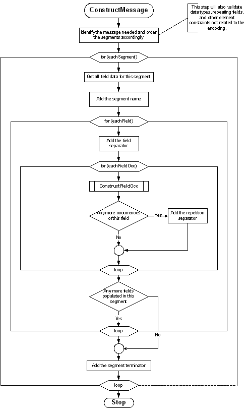
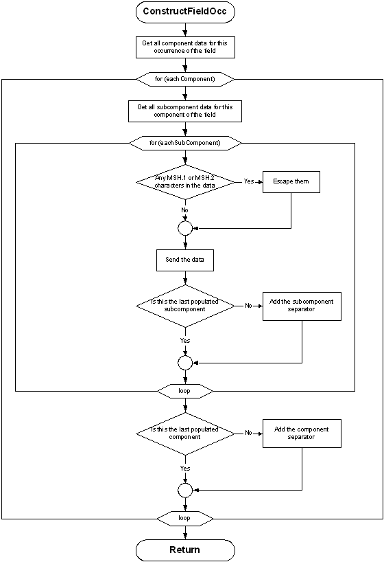

|
2. Control |
|
|
Chapter Chair and Editor: (2)
Anthony Julian Mayo Clinic
Chapter Chair
Dave Shaver Corepoint Health
Chapter Chair and Editor (2A, 2C))
Sandra Stuart Kaiser Permanente Information Technology
Conformance and Guidance for Implementation/Testing Co-Chair
Wendy Huang
Canada Health Infoway
Conformance and Guidance for Implementation/Testing Co-Chair
Frank Oemig Agfa HealthCare GmbH
Conformance and Guidance for Implementation/Testing Co-Chair
Robert Snelick National Institute of Standards and Technology (NIST)
Sponsoring Work Group:
Infrastructure and Messaging
List Server:
inm@lists.hl7.org
The Control chapter of this Standard defines the generic rules that apply to all messages. Subsequent sections define functionally specific messages to be exchanged among certain applications. The specific aspects of message definition that are addressed herein are:
the form to be used in functional chapters for describing messages. This includes their purpose, their contents, and the interrelationships among them. This form is called an abstract message definition because it is purely a level 7 (application) definition.
the HL7 encoding rules for converting an abstract message into a string of characters that comprises an actual message.
the programming procedures required to exchange messages using the HL7 specifications.
the anticipated relationship with lower level protocols.
certain message segments that are components of all messages.
a single message, the acknowledgment message, that may be used unchanged in multiple applications.
An effort has been made in this version of Chapter 2 to use the ANSI MODAL verbs as described in ISO/IEC Directive, Appendix G, as delineated in the following table:
To convey the Sense of:
Use the following (in UPPERCASE)
Required/Mandatory
SHALL*
SHALL NOT*
Best Practice/Recommendation
SHOULD*
SHOULD NOT*
Acceptable Permitted
MAY*
NEED NOT*
*Usage of any of these in lower case does not carry the same weight..
The Standard is written from the assumption that an event in the real world of healthcare creates the need for data to flow among systems. The real-world event is called the trigger event. For example, the trigger event a patient is admitted may cause the need for data about that patient to be sent to a number of other systems. The trigger event, an observation (e.g., a CBC result) for a patient is available, may cause the need for that observation to be sent to a number of other systems. When the transfer of information is initiated by the application system that deals with the triggering event, the exchange is termed an unsolicited update.
Note: No assumption is made about the design or architecture of the application/ system creating the unsolicited update. The scope of HL7 is restricted to the specification of messages between application/ systems and the events triggering them.
HL7 allows the use of trigger events at several different levels of data granularity and inter-relationships. For example, most Patient Administration (ADT) trigger events concern single objects (such as an admit event, which creates a message that contains data about a single person and/or account). Other ADT trigger events are concerned with relationships between more than one object (e.g., the merge events, which specify patient or account merges). Some ADT trigger events pertain to a collection of objects that may have no significant inter-relationships (e.g., a record-oriented location-based query, whose response contains data about a collection of inpatients who are related only temporarily, by local geography).
When the unsolicited update is sent from one system to another, this acknowledgment mode specifies that it be acknowledged at the application level. The reasoning is that it is not sufficient to know that the underlying communications system guaranteed delivery of the message. It is also necessary to know that the receiving application processed the data successfully at a logical application level.
The acknowledgment may contain data of interest to the system that initiated the exchange. For example, if a patient care system has processed the trigger event a lab test is ordered for a patient, it may send an unsolicited update to a lab application identifying the patient, the test ordered, and various other information about the order. The ancillary system will acknowledge the order when it has processed it successfully. For some pairings of patient care and ancillary department systems the acknowledgment may also include the ancillary identification number that was assigned (HL7 does not require Order Entry and Results Reporting applications to interface in this manner, but it supports those that do).
The HL7 Standard makes no assumptions about the ownership of data. It also makes no requirements of its own on the subsequent action of the recipient of data, nor does it make any assumption about the design or architecture of the receiving application system. The scope of HL7 is restricted to the specification of messages between application systems, and the events triggering them. HL7 does not explicitly support, but can be used with, systems that support store and forward and data broadcast facilities (see the HL7 Implementation Support Guide).
The HL7 Standard makes no functional interpretation of the requirement that a system commit the data in a message to its database before acknowledging it. All that is required is that the receiving system accept responsibility for the data, providing the same integrity test that it would apply to data from any source. To continue the prior example, the ancillary system may acknowledge the order after placing it in an input queue, expecting to fully process the order into its database at a future time. The only assumption is that the input queue is maintained at the same level of integrity as the database.
Instances of messages are transient by nature, and can not be expected by transmitter and/or receiver to be persistent after acknowledgement.
The HL7 acknowledgment paradigm has been extended to distinguish both accept and application acknowledgments, as well the conditions under which each is required. With a positive accept acknowledgment, the receiving system commits the message to safe storage in a manner that releases the sending system from the need to resend the message. After the message has been processed by the receiving system, an application acknowledgment may be used to return the resultant status to the sending system.
Query documentation including messages, segments, special protocols, implementation considerations and examples have been moved to chapter 5. The unsolicited display messages were also moved because their message syntax is query-like in nature.
The HL7 Standard defines the messages as they are exchanged among application entities and the procedures used to exchange them. As such, it conceptually operates at the seventh level of the ISO model for Open System Interconnection (OSI). It is primarily concerned with the data content and interrelationship of messages and with communicating certain application-level error conditions.
Since the OSI protocols are not universally implemented, the HL7 Working Group is interested in providing standards that will be useful in the interim. It is also recognized that there is now, and will continue to be, interest in communicating health data among systems operating in communications environments that provide a high level of functionality, but use protocols other than ISO OSI. The universe of environments of interest to HL7 includes, but is not restricted to:
ad hoc environments that do not provide even basic transport reliability. Such environments consist of point-to-point RS-232 links, modems, and even LANs, if their connection to host computers is made via RS-232 communications links. Until OSI high level standards become truly prevalent, many healthcare interfaces will be implemented over such links. In such an environment, the HL7 Lower Level Protocols (LLP) may be used between systems to enhance the capabilities of the communications environment. The HL7 Lower Level Protocols are defined in the HL7 Implementation Guide, which is not an official part of the Standard.
environments that support a robust transport level, but do not meet the high level requirements. This includes environments such as TCP/IP, DECNET, and SNA.
ISO and proprietary networks that implement up to presentation and other high level services. IBM's SNA LU6.2 and SUN Microsystems's NFS are examples of complete proprietary networks.
two or more applications running on the same physical and/or logical machine that are not tightly integrated. In these environments, the messaging capabilities may be provided by inter-process communications services (e.g., Pipes in a UNIX System).
The HL7 Standard assumes that the communications environment will provide the following capabilities:
error free transmission. Applications can assume that they correctly received all of the transmitted bytes in the order in which they were sent. This implies that error checking is done at a lower level. However, sending applications may not assume that the message was actually received without receiving an acknowledgment message.
character conversion. If the two machines exchanging data use different representations of the same character set, the communications environment will convert the data from one representation to the other.
message length. HL7 sets no limits on the maximum size of HL7 messages. The Standard assumes that the communications environment can transport messages of any length that might be necessary. In practice, sites may agree to place some upper bound on the size of messages and may use the message continuation protocol, described later in this chapter, for messages that exceed the upper limit.
Note: Just as HL7 makes no assumptions about the design or architecture of the application systems sending and receiving HL7 messages, it makes no assumptions about the communications environment beyond those listed above. In particular, aside from the above assumptions, the communications environment, including its architecture, design and implementation, is outside the scope of HL7.
This section defines the constituents of messages and provides the methodology for defining abstract messages that are used in later chapters. Message construction rules can be found in section 2.5.5.
A message is the atomic unit of data transferred between systems. It is comprised of a group of segments in a defined sequence. Each message has a message type that defines its purpose. For example the ADT Message type is used to transmit portions of a patient's Patient Administration (ADT) data from one system to another. A three-character code contained within each message identifies its type. These are listed in the Message Type list, Appendix A.
The real-world event that initiates an exchange of messages is called a trigger event. See Section 2.3.1, "Trigger events," for a more detailed description of trigger events. Refer to HL7 Table 0003 - Event type in Chapter 2C, Code Tables, for a listing of all defined trigger events. These codes represent values such as A patient is admitted or An order event occurred. There is a one-to-many relationship between message types and trigger event codes. The same trigger event code may not be associated with more than one message type; however a message type may be associated with more than one trigger event code.
All message types and trigger event codes beginning with the letter "Z" are reserved for locally defined messages. Z codes SHALL NOT be defined within the HL7 Standard.
A segment is a logical grouping of data fields. Segments of a message may be required or optional. They may occur only once in a message or they may be allowed to repeat. Each segment is given a name. For example, the ADT message may contain the following segments: Message Header (MSH), Event Type (EVN), Patient ID (PID), and Patient Visit (PV1).
Each segment is identified by a unique three-character code known as the Segment ID. Although the actual segments are defined in various chapters, the ID codes assigned to the various segments are listed in Appendix A.
All segment ID codes beginning with the letter Z are reserved for locally defined segments. Z Codes SHALL NOT be defined within the HL7 Standard.
Two or more segments may be organized as a logical unit called a segment group. A segment group may be required or optional and might or might not repeat. As of v 2.5, the first segment in a newly defined segment group will be required to help ensure that unparsable messages will not be inadvertently defined. This required first segment is known as the anchor segment.
A segment group is assigned a name that represents a permanent identifier that may not be changed.
A named segment X may occur more than once in an abstract message syntax. This differs from repetition described earlier in this section. When this occurs, the following rules SHALL be adhered to:
If, within an abstract message syntax, a named segment X appears in two individual or group locations, and
Either appearance is optional or repeating in an individual location or,
either appearance is optional or repeating in a group location
then, the occurrences of segment X SHALL be separated by at least one required segment of a different name so that no ambiguity can exist as to the individual or group location of any occurrence of segment X in a message instance.
Examples of proper segment grouping
| Example 1 | Example 2 | Example 3 |
|---|---|---|
| { SEG 1} | [ SEG1 ] | SEG1 |
| SEG2 | { | [ SEG2 ] |
| [ SEG1 ] | SEG2 | SEG3 |
|
| [ SEG1 ] | { SEG1 } |
|
| } |
|
Examples of unparsable segment grouping
| Example 1 | Example 2 | Example 3 | Example 4 |
|---|---|---|---|
| { SEG 1} | { SEG1 } | [ SEG1 ] | { SEG1 } |
| [ SEG1 ] | [ SEG2 ] | { | [ SEG2 |
|
| SEG1 | [ SEG2 ] | SEG3 ] |
|
|
| SEG1 | SEG1 |
|
|
| SEG3 |
|
|
|
| } |
|
In each of these examples it is not possible to tell which part of the message SEG1 belongs.
Definition: A field is a string of characters. Fields for use within HL7 segments are defined by HL7. A comprehensive data dictionary of all HL7 fields is provided in Appendix A.
Refer to section 2.10.5, "Protocol for interpreting repeating segments or segment groups in an update Message" for information on updating records in a database.
Version control rules regarding fields can be found in section 2.8, "Version compatibility definition".
Local extension rules regarding fields can be found in section 2.11, "Local Extension".
HL7 does not care how systems actually store data within an application. When fields are transmitted, they are sent as character strings
A field SHALL exist in one of three population states in an HL7 message:
Populated. (Synonyms: valued, non-blank, not blank, not empty.) The sending system sends a value in the field. For example, if a sending system includes medical record number, that would be communicated as |1234567^^^MR^KP-CA|. Note that the field might be populated with a code that means "no information" or "unknown".
Not populated. (Synonyms: unpopulated, not valued, unvalued, blank, empty, not present, missing.) The sending system does not supply a value for the field. The Sender might or might not have a value for the field. The receiving system can make no inference regarding the absence of an element value if there is not a conformance profile governing the implementation. However, if there is a Conformance Message Profile in effect, then special rules apply; see section 2.B, "Conformance Using Message Profiles".
Null. Any existing value for the corresponding data base element in the receiving application should be deleted. This is symbolically communicated as two double-quotes between the delimiters (i.e., |""|).Employing consecutive double quote characters as the only content of a field for other purposes is prohibited.
Refer to Chapter 2.6, "Message construction rules" for information on data fields with a null value.
The various chapters of the Standard contain segment attribute tables. These tables list and describe the data fields in the segment and characteristics of their usage. In defining a segment, the following information is specified about each field:
SEQ : Position
LEN : Normative Length
C.LEN : Conformance Length
DT : Data Type
OPT: Optionality
RP/# : Repitition
TBL# : Table Identifier
ITEM# : ID Number
Element Name
Chapter 2A contains similar tables that describe the components of a data type. In defining a data type, the following information is specified about each component:
SEQ : Position
LEN : Normative Length
C.LEN : Conformance Length
DT : Data Type
OPT: Optionality
TBL# : Table Identifier
Component Name
Comments
SEC.REF: The reference to where the data type is defined
The following sections describe the information that is provided in the table.
Definition: Ordinal position of the data field within the segment. This number is used to refer to the data field in the text comments that follow the segment definition table.
In the segment attribute tables this information is provided in the column labeled SEQ.
Definition: If applicable, the number of characters that one occurrence of the data field or component may occupy if populated.
For full discussion, consult section 2.5.5
Definition: If applicable, the conformance length that applies to the field or component. For full discussion, consult section 2.5.5
Definition: The basic building block used to construct or restrict the contents of a data field.
In the segment attribute tables this information is provided in the column labeled DT. If the data type of the field is variable, the notation "varies" will be displayed.
There are a number of data types defined by HL7. See section 2.15, "Data types" in Chapter 2A.
Each field is assigned a data type that defines the value domain of the field - the possible values that it SHALL take. The data type SHALL have a type taken from the list of data types defined in chapter 2A.
Data types may be either primitive or composite. Primitive data types consist of a series of characters as specified by the data type. Composite data types are made up of a series of components that are themselves assigned to a data type, which may again be either primitive or composite data types. In the case of composite data types, the components of a component are called sub-components, and they SHALL only be assigned primitive data types.
Note that the data types do not specify how systems actually store data within an application. When fields are transmitted, they are sent as character strings as specified by the data type.
Definition: Whether the field is required, optional, or conditional in a segment.
In the segment attribute tables this information is provided in the column labeled OPT.
The designations for optionality are:
| R | - | required |
| RE | - | Required but may be Empty: The field or data type component description SHALL stipulate when the field or data type component may be empty. |
| O | - | optional |
| C(a/b) | - |
conditional on the trigger event or on some other field(s). The field definitions following the segment attribute table should specify the algorithm that defines the conditionality for this field. An element with a conditional usage code has an associated condition predicate (See section 2.B.7.9, "Condition predicate") that determines the requirements (usage code) of the element.
If the condition predicate associated with the element is true, follow the rules for a which shall be one of "R", "RE", "O" or X": If the condition predicate associated with the element is false, follow the rules for b which shall be one of "R", "RE", "O" or X". a and b can be valued the same. |
| X | - | not used with this trigger event |
| B | - | left in for backward compatibility with previous versions of HL7. The field definitions following the segment attribute table should denote the optionality of the field for prior versions. |
| W | - |
Withdrawn
|
Note: For Versions 2.3 and higher: the optionality of fields should be explicitly documented in the segment field definitions that follow each segment definition table; if the optionality of fields within a segment changes depending on the trigger event, that optionality should also be explicitly documented.
NOTE: Conditionality defined in Chapter 2 is further expanded by the requirements stated in Chapter 2B. See Chapter 2.B for the explanation of the c(a/b) approach.
For version 2.5 and higher, the optionality, table references, and lengths of data type components are supplied in component tables of the data type definition. The component definitions that follow the component table will elaborate on the optionality and table references. Where needed, additional detailed field definitions will follow the formal segment attribute tables. (See also Sections 2.5.4, "Message delimiters", 2.5.3.5, "Optionality," 2.15, "Data types").
Definition: Whether the field may repeat. The value that appears in the repetitions column is the maximum number of allowed occurrences, e.g., a value of '3' would mean that the field can have '3 occurrences'; if unspecified, there is only one occurrence, i.e., cannot repeat.
In the segment attribute tables this information is provided in the column labeled RP/#. Note that components and subcomponents may not repeat, so this does not apply to components and subcomponents.
The designations for Repetition are:
| N or blank | - | no repetition |
| Y | - | the field may repeat an indefinite or site-determined number of times |
| (integer) | - |
the field may repeat up to the number of times specified by the integer
|
Each occurrence may contain the number of characters specified by the field's maximum length. See Section 2.
Usage Note: For improved readability some work groups opt to leave the Repetition fields blank to indicate that the field SHALL NOT repeat. A blank SHALL NOT be construed to mean that the field may optionally repeat.
As of v2.5 the Repetition column is to be left blank if the field SHALL NOT repeat.
Refer to Chapter 2.C, "Code Tables".
Definition: a small integer that uniquely identifies the data item throughout the Standard. In the segment definition this information is provided in the column labeled ITEM #.
Definition: Descriptive name for the data item. In the segment attribute tables this information is provided in the column labeled ELEMENT NAME.
When the same name is used in more than one segment, it SHALL have the same data type and semantic meaning in each segment as well as the same ID number. To deal with any ambiguities arising from this convention, whenever a field is referenced herein, the segment name and position SHALL always be included.
In constructing a message, certain special characters are used. They are the segment terminator, the field separator, the component separator, subcomponent separator, repetition separator, escape character and truncation character. The segment terminator is always a carriage return (in ASCII, a hex 0D). The other delimiters are defined in the MSH segment, with the field delimiter in the 4th character position, and the other delimiters occurring as in the field called Encoding Characters, which is the first field after the segment ID. The delimiter values used in the MSH segment are the delimiter values used throughout the entire message. In the absence of other considerations, HL7 recommends the suggested values found in Figure 2-1 delimiter values.
At any given site, the subset of the possible delimiters may be limited by negotiations between applications. This implies that the receiving applications will use the agreed upon delimiters, as they appear in the Message Header segment (MSH), to parse the message.
Note: The binary representation of the delimiter characters will vary with the character set used in the message.
Figure 2-1. Delimiter values
| Delimiter | Suggested Value | Encoding Character Position | Usage |
|---|---|---|---|
| Segment Terminator |
| - | Terminates a segment record. This value cannot be changed by implementers. |
| Field Separator | | | - | Separates two adjacent data fields within a segment. It also separates the segment ID from the first data field in each segment. |
| Component Separator | ^ | 1 | Separates adjacent components of data fields where allowed. |
| Repetition Separator | ~ | 2 | Separates multiple occurrences of a field where allowed. |
| Escape Character | \ | 3 | Escape character for use with any field, component, or sub-component represented by an ST, TX or FT data type. |
| Subcomponent Separator | & | 4 | Separates adjacent subcomponents of data fields where allowed. |
| Truncation character | # | 5 | Indicated character to be used for the truncation pattern - See 2.5.5.2, Truncation Pattern. |
While the length is not generally of conceptual importance in HL7 messages, most HL7 aware applications are implemented using some form of data storage that imposes length limitations on the data. This section describes how the lengths of the fields are controlled, and how interoperability can be arranged in this context.
For some fields or components, the value domain of the content leads to clearly established boundaries for minimum and/or maximum length of the content. In these cases, these known limits are specified for the item. Normative lengths are only specified for primitive data types.
Examples of value domains that have clearly established boundaries for minimum and maximum length:
A date/time field
A component that may contain one of the following values: ABC, SYL, or IDE
A component that contains a reference to a field in a message
The information is given in one of two forms:
The minimum and the maximum length separated by two dots, e.g. m.n
the list of possible values for length separated by commas, e.g. x,y,z
When a normative length is asserted, conformant messages SHALL have a length that lies within the boundaries specified. The boundaries are inclusive, so a length of 1..2 means the length of the item SHALL be either 1 or 2.
Note: The minimum length is always 1 or more. If an item is optional, and there is no content present, the item is considered as not populated, rather than present with a length of 0.
Note: The deletion indicator is treated as having no length and therefore fits to all length specifications.
For many fields or components, the value domain of the content does not lead to clearly established boundaries for minimum and/or maximum length of the content.
Examples of value domains that do not have clearly established boundaries for minimum and maximum length:
Parts of Names and Addresses
Codes defined in external code systems
Descriptive text
In many cases, systems store the information of these value domains using data storage mechanisms that have fixed lengths, such as relational databases, and must impose a limitation on the amount of information that may be stored. Though this does not directly impact on the length of the item in the instance, nevertheless the storage length has great significance for establishing interoperability.
For technical and/or architectural reasons, many applications must define a limit to the length that they will store for a particular item. This creates a need for the length of an element to be defined somewhere and raises the question of what should happen if a real world value is longer than the acceptable value. The problem of how to handle this is unaffected by whether it is the standard that defines the length, or the receiving system that defines the length: what can be done?
The most obvious response is that the data must be rejected, and either the message cannot be constructed or must be rejected completely. For some data items, this is the only clinically safe behaviour.On the other hand, for some data items such as names and addresses, this is generally unwelcome information - the system can still function to some degree in the presence of truncated data.
However truncation of data may have later consequences - if a data item such as a particularly long surname is truncated, and then returned to the source application in the truncated form, the source application may not correctly match on the truncated name.
For this reason, when values are truncated because they are too long (whether because some applicable specification limits the length of the item, or because the application is not able to store the full value), the value should be truncated at N-1, where N is the length limit, and the final character replaced with a special truncation character. This means that whenever that value is subsequently processed later, either by the system, a different system, or a human user, the fact that the value has been truncated has been preserved, and the information can be handled accordingly.
The truncation character is not fixed; applications may use any character. The truncation character used in the message is defined in MSH-2. The default truncation character in a message is # (23), because the character must come from the narrow range of allowed characters in an instance. The truncation character only represents truncation when it appears as the last character of a truncatable field. It SHALL be escaped if the last character of the data that is the maximum allowable size for the component is the truncation character.
Example:
For a field with a conformance length of 5 where the content is |1234#| the truncation character is not representing truncation, it is the actual data.
Note: The selection of # as truncation character is taken from ISO 22220 and 27527.
If populated, the conformance length column specifies the minimum length that applications must be able to store. Conformant applications SHALL NOT truncate a value that is shorter than the length specified. The conformance length is also the minimum value that maybe assigned to maximum length in an implementation profile.
In addition, the conformance length may be followed by a "=" or a "#". The "=" denotes the value may never be truncated, and the "#" denotes that the truncation behaviour defined for the data type applies.
Applications are not required to implement the truncation pattern, even if it may be applied to an item. Applications SHOULD declare their adoption of the truncation pattern in their conformance profiles.
Either normative or conformative lengths may be specified on a primitive data type. Whether or not normative or conformance lengths are specified on the data type, they may also be specified on the components and/or fields where the data type is used. If specified here, they override the length specified for the type (but must be consistent with the information on the type). If not specified, then the information specified on the data type itself - if present - applies where the data type is used.
Minimum and maximum lengths are not assigned for composite data types (data types having more than one component). Not only can the minimum or maximum lengths be indeterminate, it is misleading to report a length with separate characters included, and also misleading to associate a length with a composite component that must be broken up when it is stored. For these reasons derived lengths are not reported in this standard, though implementers may derive them as desired.
ID/DT
2.5.5 Length
2.5.5.0 Normative Length
2.5.5.1 Length & Persistent Data Stores
2.5.5.2 Truncation Pattern
2.5.5.3 Conformance Length
2.5.5.4 Type and Component/Field lengths
2.5.5.5 Implications for Implementers
2.5.5.6 In an ideal world, the standard would be able to determine the maximum length for a value with authority, and all implementations would be able to handle the maximum length. However neither of these are true, and so this specification defines both normative maximum length, conformance length, and whether a value may be truncated. This following table summarises how these various parameters interact, provides an example of each combination, and outlines the implications for implementations. The second data type listed refers to the underlying data type the cited one is based upon.
| Child DT | LEN | C.LEN | Implication | |
|---|---|---|---|---|
| CX.5 |
| 2..5 |
|
CX.5 may contain a number of fixed values, all of which have a length between 2 and 5. Other values are not allowed.
Truncation is not allowed. |
|
| ID | 1.. | 15= | The conformance length is 15 - applications SHALL be able to properly handle all values, which includes the range of allowed lengths for this component. |
| ED.3 |
|
| 32 |
ED.3 is one of the few examples where an ID value is taken from an externally derived code system (IANA mime types in this case).
The conformance length is 32: applications SHALL be able to handle mime types up to a length of 32. Applications can choose to handle more if desired. |
|
| ID | 1.. | 15= | Since truncation is not allowed, applications SHALL respond with an error if the length of a mime type exceeds the length it can handle without truncation. |
| CWE.1 |
|
| 20= |
If populated, the value SHALL be at least one character. There is no upper limit to the number of characters that are allowed, since this specification cannot apply a limit to the external code systems that CWE is provided to support. In particular, Snomed-CT (post-coordinated) expressions may be provided in the coding identifier component.
However this specification does not impose the requirement to support arbitrarily long values in this very common component. Instead, applications SHALL support codesystem identifiers up to 20 characters long. |
|
| ST | 1.. |
|
Since the identifier is useless if truncated, truncation is not allowed.
Application designers should consider the range of possible values and how they are handled. If the application imposes a maximum limit, this should be published in the application conformance profile. |
| FN.1 |
|
| 50# |
FN.1 contains a surname. This specification is not in a position to impose an upper normative limit on the length of all surnames in the world.
However our collective experience shows that values longer than 50 are rarely encountered, so applications SHALL be able to handle values up to the length of 50 without truncation. |
|
| ST | 1.. |
| Applications may choose to truncate values longer than 50 characters. If applications do this, the truncation pattern should be followed in order to reduce the risks of downstream handling of the data following truncation. |
| XAD.5 |
|
| 12= |
XAD.5 is postal/zip code. This specification is not able to impose a normative limit on the size of postal codes around the world, but our collective experience is that 12 covers all the currently known postal systems.
Because postal code is used as an identifier in postal delivery systems, it is not appropriate to truncate the value. |
|
| ST | 1.. |
|
|
| XPN.12 |
|
|
| XPN.12 specifies the date that a person name became applicable. By default, this field allows a highly precise date including milliseconds and a time zone. Applications are not required to implement this level of precision; they may truncate the value to a the day containing the specified time interval. |
|
| DTM | 4..24 | 8# |
|
| CWE.16 |
| 4..24 | 8= | CWE.16 specifies the date that a value set was published. In some contexts, the publication date of a value set may be identified by a date precise to at least hours and minutes in order to allow multiple releases in a single day. |
|
| DTM | 4..24 | 8# |
However this is an unusual use case; nearly all value sets only identify their publication date to the nearest day.
For this reason applications are only required to handle value sets specified to the particular day. However, since the publication date identifies a particular version of the value set, applications are not allowed to truncate the publication date. This specification recommends but does not require that applications support a full date time for this value. Note that the base DTM type default conformance length is that all applications are required to be able to store a full day, and are allowed to truncate dates to this length. These rules may be overridden where DTM is used. |
| NTE.1 |
|
|
| NTE.1 is the segment Id. The segment id may have any value between 1 and 9999. Applications are required to handle all these values. |
|
| SI | 1..4 | 4= |
|
| SN.2 |
|
|
| SN.2 is a numerical value from a structured numeric presented in decimal form. It has a normative length of 16. |
|
| NM | 1..16 |
| The NM data type defines its own truncation pattern driven by the semantics of numbers. The truncation character is not used. While there is no conformance length specified, the truncation rules for the NM data type SHALL always be followed; the application SHALL reject the instance if it is unable to conform to these rules. |
| ED.5 |
|
|
|
ED.5 is text data of arbitrary length. This specification does not apply either a normative length or a conformance length. This does not mean that applications are not required to handle data of infinite length. Applications may choose to define limits on the length of data handled in their conformance profiles.
Note that the length of data handled may depend on the type of the data. |
|
| TX |
|
|
|
Acknowledgement Choreography is defined as the definition of the acknowledgements to be expected for a given trigger event. It is required to document the expected acknowledgement based on the values in MSH.15 and MSH.16.
As of V2.9, all chapters SHALL include in their trigger event definitions the acknowledgement choreography.
At the transport level only an ACK should be returned, never an application response message.
The combination of MSH.15=Valued and MSH.16=Blank disallows/does not permit the use of an WPR associated with a prior WPP since the WPR is a response message to an WPP and therefore cannot stand on its own. It needs to be communicated that the exchange paradigm in some profiles where WPP (or equivalent) is sent with MSH.15=Always, MSH.16=Never but an ORP (or equivalent) is used.
Example of Acknowledgment Choreography
Field name
Field Value: Original mode
Field value: Enhanced mode
MSH.15
Blank
Valued
Blank
Valued
MSH.16
Blank
Blank
Valued
Valued
Immediate Ack
-
ACK
-
ACK
Application Ack
WPP
-
WPP
WPP
This section addresses HL7 general rules for composing messages. Both the sender and receiver of the data must have predictable rules for how they will process the data. The reader is also referred to Section 2.B, "Conformance Using Message Profiles", where procedures for ensuring messaging integrity are discussed in detail.
In constructing a message, certain special characters are used. They are the segment terminator, the field separator, the component separator, subcomponent separator, repetition separator, escape character and the truncation character. The segment terminator is always a carriage return (in ASCII, a hex 0D). The other delimiters are defined in the MSH segment, with the field delimiter in the 4th character position, and the other delimiters occurring as in the field called Encoding Characters, which is the first field after the segment ID. The delimiter values used in the MSH segment are the delimiter values used throughout the entire message. In the absence of other considerations, HL7 recommends the suggested values found in Figure 2-1 delimiter values.
Note: These message construction rules define the standard HL7 encoding rules, creating variable length delimited messages. Although only one set of encoding rules has been defined as a standard since HL7 Version 2.3, other encoding rules are possible (but since they are non-standard, they may only be used by a site-specific agreement).
procedure construct_message ( data ) {
identify_message_needed;
identify_separators_used;
validate( data );
order_segments( data, segment_list );
foreach segment in ( segment_list ) {
insert segment.name; /* e.g., MSH */
/* gather all data for fields */
foreach field in ( fields_of( segment ) ) {
insert field separator; /* e.g., | */
/* gather occurrences (may be multiple only for fields that are allowed to repeat */
foreach occurrence in ( occurrences_of( field ) ) {
construct_occurrence( occurrence );
if not last ( populated occurrence ) insert repetition_separator; /* e.g., ~ */
}
break if last ( populated field );
}
insert segment_terminator; /* always<cr>! */
}
return;
}
procedure construct_occurrence ( occurrence ) {
/* gather populated components */
foreach component in ( components_of( occurrence ) ) {
get_subcomponent_data( component );
/* gather all data for subcomponents */
foreach subcomponent in ( subcomponents_of( component ) ) {
/* escape the field separator */
substitute( field_separator, \F\ );
/* escape the encoding characters */
substitute( component_separator, \S\ );
substitute( repetition_separator, \R\ );
substitute( escape_character, \E\ );
substitute( subcomponent_separator, \T\ );
substitute (truncation_character, \P\ ) /*See 2.7.2Truncation Character escape*/
insert subcomponent;
if not last ( populated subcomponent ) insert subcomponent_separator; /* e.g., & */
}
if not last ( populated component ) insert component_separator; /* e.g., ^ */
}
return;
}
The flow charts on the following pages represent another view of the message construction rules. The first shows the rules for transmitting a message; the second shows transmitting field occurrences.


The following rules apply to receiving HL7 messages and converting their contents to data values:
ignore segments, fields, components, subcomponents, and extra repetitions of a field that are present but were not expected.
treat optional segments that were expected but are not present as consisting entirely of fields that are not present.
treat fields and components that are expected but were not included in a segment as not present.
If a segment is to be continued across messages, use the extended encoding rules. These rules are defined in terms of the more general message continuation protocol (see Section 2.10.2, "Continuation messages and segments").
When delimiters are included in any component, the delimiters SHALL be escaped. Failure to do so may alter the meaning of the component. The escape character is whichever ASCII character is specified in the <escape character> component of MSH-2 Encoding Characters. For purposes of this section, the character \ will be used to represent the character so designated in a message. An escape sequence consists of the escape character followed by an escape code ID of one character, zero (0) or more data characters, and another occurrence of the escape character. The following escape sequences are defined:
2.5.6 Acknowledegment Choreography
2.6 MESSAGE CONSTRUCTION RULES
2.6.1.0 Message Construction Pseudocode
2.6.1.1 Message Construction Flow Chart
2.6.2 Rules for the recipient
2.6.3 Encoding rules notes
2.7 USE OF ESCAPE SEQUENCES IN FIELDS
2.7.1 Formatting codes
| \F\ | field separator |
| \S\ | component separator |
| \T\ | subcomponent separator |
| \R\ | repetition separator |
| \E\ | escape character |
| \P\ | truncation character |
When a field, component or sub-component of type TX, FT, or CF is being encoded, additional escape character(s) may be used to signal certain special characteristics of portions of the text field. The escape character is whatever display ASCII character is specified in the <escape character> component of MSH-2 Encoding Characters.
The following additional escape sequences are defined:
| \H\ | start highlighting |
| \N\ | normal text (end highlighting) |
| \Xdddd...\ | hexadecimal data |
| \Zdddd...\ | locally defined escape sequence |
Escape sequences SHALL NOT contain nested escape sequences.
For the purposes of determining length, all the characters inside the escape (all between the opening and closing \, not including the \ symbols themselves) count towards the length. This applies to all the escape sequences, including the formatting ones described below.
When the last character of a value that is expected to be truncated is the truncation character, the truncation character SHALL be escaped.
Examples of truncation character usage.
Conformance length
Original value
Component value
6#
abcdefgh
abcde#
6#
abcdef
abcdef
6#
abcde#
abcde\P\
The following HL7 escape sequences are defined to support multiple character sets for fields, components and sub-components that are defined as data types FT, ST, and TX. They allow HL7 parsers to use escape codes (defined in the standards used below), without breaking, and without being non-conformant to the HL7 escape paradigm defined in this section.
\Cxxyy\ single-byte character set escape sequence with two hexadecimal values, xx and yy, that indicate the escape sequence defined for one of the character repertoires supported for the current message (i.e., ISO-IR xxx).
\Mxxyyzz\ multi-byte character set escape sequence with three hexadecimal values, xx, yy and zz. zz is optional.
Common character set escape sequences include the following which are defined in the standards mentioned:
Single-byte character sets:
| \C2842\ | ISO-IR6 G0 (ISO 646 : ASCII) |
| \C2D41\ | ISO-IR100 (ISO 8859 : Latin Alphabet 1) |
| \C2D42\ | ISO-IR101 (ISO 8859 : Latin Alphabet 2) |
| \C2D43\ | ISO-IR109 (ISO 8859 : Latin Alphabet 3) |
| \C2D44\ | ISO-IR110 (ISO 8859 : Latin Alphabet 4) |
| \C2D4C\ | ISO-IR144 (ISO 8859 : Cyrillic) |
| \C2D47\ | ISO-IR127 (ISO 8859 : Arabic) |
| \C2D46\ | ISO-IR126 (ISO 8859 : Greek) |
| \C2D48\ | ISO-IR138 (ISO 8859 : Hebrew) |
| \C2D4D\ | ISO-IR148 (ISO 8859 : Latin Alphabet 5) |
| \C284A\ | ISO-IR14 (JIS X 0201 -1976: Romaji) |
| \C2949\ | ISO-IR13 (JIS X 0201 : Katakana) |
Multi-byte codes:
| \M2442\ | ISO-IR87 (JIS X 0208 : Kanji, hiragana and katakana) |
| \M242844\ | ISO-IR159 (JIS X 0212 : Supplementary Kanji) |
In designating highlighting, the sending application is indicating that the characters that follow somehow should be made to stand out, but leaving the method of doing so to the receiving application. Depending on device characteristics and application style considerations, the receiving application may choose reverse video, boldface, underlining, blink, an alternate color or another means of highlighting the displayed data. For example the message fragment:
DSP| TOTAL CHOLESTEROL \H\240*\N\ [90 - 200]
might cause the following data to appear on a screen or report:
TOTAL CHOLESTEROL 240* [90 - 200]
whereas another system may choose to show the 240* in red.
The special character escape sequences (\F\, \S\, \R\, \T\, \P\ and \E\) allow the corresponding characters to be included in the data in a text field, though the actual characters are reserved. For example, the message fragment
DSP| TOTAL CHOLESTEROL 180 \F\90 - 200\F\
DSP| \S\----------------\S\
would cause the following information to be displayed, given suitable assignment of separators:
TOTAL CHOLESTEROL 180 |90 - 200|
^----------------^
When the hexadecimal escape sequence (\Xdddd...\) is used the X SHALL be followed by 1 or more pairs of hexadecimal digits (0, 1, . . . , 9, A, . . . , F). Consecutive pairs of the hexadecimal digits represent 8-bit binary values. The interpretation of the data is entirely left to an agreement between the sending and receiving applications that is beyond the scope of this Standard.
If the field is of the formatted text (FT) data type, formatting commands also SHALL be surrounded by the escape character. Each command begins with the "." (period) character. The following formatting commands are available:
2.7.4 Highlighting
2.7.5 Special character
2.7.6 Hexadecimal
2.7.7 Usage and Examples of Formatted Text
|
.sp |
End current output line and skip |
| .br | Begin new output line. Set the horizontal position to the current left margin and increment the vertical position by 1. |
| .fi | Begin word wrap or fill mode. This is the default state. It can be changed to a no-wrap mode using the .nf command. |
| .nf | Begin no-wrap mode. |
|
.in |
Indent |
|
.ti |
Temporarily indent |
| .sk < number> |
Skip |
| .ce | End current output line and center the next line. |
The component separator that marks each line defines the extent of the temporary indent command (.ti), and the beginning of each line in the no-wrap mode (.nf). Examples of formatting instructions that are NOT included in this data type include: width of display, position on page or screen, and type of output devices.
Figure 2-3 is an example of the FT data type from a radiology impression section of a radiology report:
Figure 2-3. Formatted text as transmitted
| \.in+4\\.ti-4\ 1. The cardiomediastinal silhouette is now within normal limits.\.br\\.ti-4\ 2. Lung fields show minimal ground glass appearance.\.br\\.ti-4\ 3. A loop of colon visible in the left upper quadrant is distinctly abnormal with the appearance of mucosal effacement suggesting colitis.\.in-4\|
Figure 2-4 shows one way of presenting the data in Figure 2-3. The receiving system can create many other interpretations by varying the right margin.
Figure 2-4. Formatted text in one possible presentation
The cardiomediastinal silhouette is now within normal limits.
Lung fields show minimal ground glass appearance.
A loop of colon visible in the left upper quadrant is distinctly abnormal with the appearance of mucosal effacement suggesting colitis.
When the local escape sequence (\Zdddd...\) is used the Z SHALL be followed by characters that are valid in a TX field. The interpretation of the data is entirely left to an agreement between the sending and receiving applications that is beyond the scope of this Standard.
The rules, described in section 2.6, Message construction rules, for receiving HL7 messages and converting their contents to data values allow the following definition of a backward compatibility requirement between the 2.x versions of HL7:
Note: If an issue is not covered explicitly under these rules, no assumption should be made that the change is allowed.
The keys to understanding version compatibility are the following 2 axioms, plus the processing rules which state that unexpected information should be discarded.
Old receivers receiving new messages should be able to continue receiving messages without error.
New receivers should be able to understand old messages.
This section elaborates on what the kinds of changes can be done that satisfies these axioms. Only HL7 changes introduced in new versions are included. Local extensions are discussed in section 2.11, "Local Extension".
When a new message or a new constituent of an HL7 message is introduced it SHALL be defined as described below. A sending system should be able to send a new message or new constituent; the receiver, regardless of its version level, SHALL ignore any message or message constituent it is not expecting without generating an application failure. This does not preclude a receiver notifying the sender that additional element was ignored, but the receiving application should not fail just from the existence of additional element.
New messages MAY be introduced.
A new segment group MAY be defined.
As of V2.5 the first segment in a newly-defined segment group SHALL be marked as required.
New segments may be introduced to an existing message. In general these SHOULD be introduced at the end of a message or a segment group, but they MAY be introduced elsewhere within the message if the segment hierarchy makes this necessary. Unless needed as a technical correction or for regulatory reporting purposes, a new segment SHALL NOT be added to a deprecated message. As of v2.6 all new segments, except for those pertaining only to message transmission or control, SHALL include an Action Code field as the first or second field as appropriate.
Care must be taken when introducing a new segment if this results in a situation in which a named segment X appears in two individual or group locations. See section 2.6, "Message construction rules".
New fields MAY be added at the end of a segment. A field that changes the semantic meaning of a segment (e.g., an Acton Code, or Mood code) SHALL only be introduced in a pre-existing segment if the usage of the field is conditional on it not being used in messages with pre-existing trigger events. This is to avoid the risk of reversing the intent of the segment as it is known to the recipient of an earlier version. For example, if the Sender were to send the segment with a delete action code, the recipient would not understand that the information should be deleted.
A new data type MAY be introduced.
New components MAY be added at the end of a data type.
A new table MAY be introduced.
Allowable changes to messages or message constituents can be categorized as name, data type, optionality, repeatability, length or definition changes.
The descriptive text name of a message or message constituent (except for segment group name) may be changed. This should have no impact on either the sender's ability to transmit a message or the receiver's ability to receive and understand the message. Reasons for changing the descriptive text name include: 1) clarify a misleading name, and 2) encompassing a broader use without jeopardizing current use.
The data type of a field or data type component may be changed. A sending system should be able to send the modified field or data type; the receiver, regardless of its version level, should be able to understand the message and to ignore any message constituent it is not expecting.
The data type of the field may be changed provided that the components of the new data type have the same structure and interpretation as the old data type. For example, an IS data type may be changed to a CE, but a PPN data type cannot be changed to a PN. An NM data type cannot be changed to an ST data type.
For existing fields in existing segments, data types may be changed if the leftmost (prior version) part of the field has the same meaning as it had in the prior version of HL7. This is in accordance with the rules governing the addition of new components and subcomponents described in the section above. In other words, if the new parts of the field (those that are part of the new data type) are ignored, what remains is the old field (defined by the old data type), which has the same meaning as it had in the prior version of HL7.
If a data type component has its data type changed, the structure and interpretation must remain the same as the pre-existing component. Any new component is added at the end of the data type.
The optionality of a message constituent may be changed. A sending system should be able to send the modified field; the receiver, regardless of its version level, should be able to understand the message. This pertains as follows:
Existing optional segment groups may be made required.
Existing optional segments may be made conditional or required.
Existing optional fields may be made conditional or required.
Existing required fields may be made conditional if a new trigger event has been applied. The condition must be specified such that the field remains required for the pre-existing trigger events.
Existing optional components of a data type may be made conditional or required.
The repeatability of a message constituent may be changed. A sending system should be able to send the modified message constituent; the receiver, regardless of its version level, should be able to understand the message. Note that if a non-repeating message constituent is made repeating, information sent in the new repetitions may be lost to the recipient who is not expecting them.
If HL7 has given, or will give, semantic meaning to the first instance, to allow backward compatibility, the first instance of the repeating constituent SHALL have the same meaning as the non-repeating constituent had in the prior version of HL7. In this way, a receiving application that interprets the message based upon the prior standard would continue to find the same intent communicated in the message.
If HL7 has not given, and will/can not give, semantic meaning to the first instance, and one or more implementation-applied business rules exist to select one of several occurrences to populate a non-repeating constituent, those same rules should be applied when a newer version of the standard allows for repetition of the constituent. By applying the prior business rules to determine the first occurrence of a repeating constituent, a receiving application that interprets the message based upon the prior standard would continue to find the same intent communicated in the message.
If, in the judgment of the owner/author of the standard section in question, changing a message constituent from non-repeating to repeating poses logical, parsing, business, or other compatibility issues, the owner/author SHOULD create a new structure to eliminate the compatibility concern.
For example, if allowing a segment to repeat implies a change to the business intent of the message, the work group(s) responsible SHOULD define a new message structure (as a new message/trigger) and retain the old structure for backward compatibility.
This pertains as follows:
A segment group MAY change from non-repeating to repeating, subject to the backward compatibility concerns expressed above.
A segment group SHALL NOT be changed from repeating to non-repeating.
A segment MAY be changed from non-repeating to repeating, subject to the backward compatibility concerns expressed above.
A segment SHALL NOT be changed from repeating to non-repeating.
A field MAY be changed from non-repeating to repeating, subject to the backward compatibility concerns expressed above. A field SHALL NOT be changed from repeating to non-repeating.
The minimum and maximum normative lengths and the conformance length and truncation status of each field or data type component MAY be changed between versions. .
Table definition MAY change.
A table MAY be changed from user-defined to HL7 defined or externally defined.
A table MAY be changed from HL7 defined to an externally defined table. When this occurs, the data type of the field should be changed to a CNE or CWE.
Any required, optional or conditional constituent of an HL7 message, including the message itself, may be deprecated. This means that one of the following situations has occurred:
The message or message constituent no longer has a meaningful purpose
The message or message constituent has been replaced by a better method
Language will be inserted stating the fact of deprecation, the version in which the deprecation occurred, and what message or message constituent, if any, replaces it. The phrase "Retained for backward compatibility only in version 2.x; refer to section n.m instead" will be the standard language for such an occurrence.
The fact of deprecation should not affect either the sender or the receiver because the message or message constituent is retained for backward compatibility. Implementers, by site agreement, MAY agree to not support deprecated message constituents.
The following are allowed:
A message MAY be deprecated.
A trigger event MAY be deprecated.
A message structure MAY be deprecated.
A segment in an existing message MAY be deprecated. Implementers, by site agreement, MAY agree to not support deprecated segments. If the segment that is to be deprecated has dependents the entire segment group SHALL be deprecated. For example, in a group [{ABC[DEF][{GHI}]], DEF and/or GHI MAY be deprecated, but ABC cannot be deprecated without deprecating the whole.
A field MAY be deprecated by HL7. Implementers, by site agreement, MAY agree to not use deprecated fields.
A data type MAY be deprecated provided all fields referencing it have been deprecated or there is an explicit statement that the data type is not to be used in any field defined in the future.
A data type component MAY be deprecated.
A table MAY be deprecated. This includes HL7 tables, user-defined tables, imported external tables and reference to external tables.
An entry in an HL7-defined table MAY be deprecated. The table itself should be reviewed if it contains a substantial number of deprecated members.
An entry in an imported external table SHALL NOT be deprecated.
A message or message constituent may be removed from the standard when criteria described in this section are met. HL7 will track old names so they are not re-used.
Note: To refer to the detail of a withdrawn message constituent, the reader will need to review the appropriate earlier version of the standard. By site agreement senders and receivers may agree to continue to use messages and/or message constituents that have been removed.
A message constituent MAY be immediately removed from the standard based on the following criteria (immediately means in the same version in which the criteria are met.).
A message structure MAY be removed immediately provided no message references it in the standard. Care must be taken lest a message structure is prematurely removed if the associated trigger event that contributed to its name is removed. For example, if a message structure ABC_D01 is associated with trigger events D01, D02 and D03 and D01 is changed and becomes associated with another existing message structure DEF_E01, the message structure ABC_D01 is still active and valid for trigger events D02 and D03.
A segment MAY be removed immediately provided no message references it in the standard.
A data type MAY be removed immediately provided no fields reference it. This occurs when the data type for a field is changed to a new data type that incorporates the components of the old one.
A table MAY be removed provided all fields and components, where the table has been used have been removed. This applies to HL7, user-defined and external tables. It is recognized that this might have a ripple effect.
A message constituent, except as noted in points c, d and e below, will be withdrawn and removed, no sooner than, after 2 versions in a deprecated state. For example, if a message was originally deprecated in v 2.3.1, its definition can be removed when v 2.6 is published.
A message type and its definition MAY be removed.
A trigger event and its definition MAY be removed.
A segment group in an existing message MAY be removed.
A segment in an existing message MAY be removed.
A deprecated field in an existing segment SHALL NOT be removed from the standard. However, no sooner than, after 2 versions in a deprecated state, the field will be marked as withdrawn and all explanatory narrative will be removed
A deprecated component in an existing data type SHALL NOT be removed from the standard. However, no sooner than, after 2 versions in a deprecated state, the component will be marked as withdrawn and all explanatory narrative will be removed.
A deprecated member of an existing HL7 table SHALL NOT be removed from the standard. However, no sooner than, after 2 versions in a deprecated state, the table member will be marked as withdrawn and all explanatory narrative will be removed from the description and comment column.
Early adoption of HL7 changes that have been approved by the technical committee for the next membership ballot is a common practice and is not prohibited, but carries risk. Such changes may be rejected or modified in the balloting process. One example is that the change may pass but may be positioned differently in the segment or data type.
Technical corrections may be applied between versions on a case-by-case basis. These corrections will be published on the HL7 website. The following meet criteria for technical correction:
Spelling correction
Incorrect section reference
Transcription error in an imported external table
Correction of an inconsistency between a segment attribute table and the field narrative
Erroneous examples
Erroneous/misleading descriptions
The processing rules described here apply to all exchanges of messages, whether or not the HL7 encoding rules or Lower Layer Protocols are used. They represent the primary message processing mode. The user may use either the original processing rules, described in section 2.9.2, "Message response using the original processing rules", or the enhanced processing rules, described in section 2.9.3, "Response using enhanced acknowledgement".
Note: The MCF - Delayed Acknowledgement message has been removed from the standard. It was deprecated in v 2.2. Accordingly, the narrative notes regarding deferred processing have been removed from this section.
Certain variants exist and are documented elsewhere:
an optional sequence number protocol. Refer to section 2.10.1, "Sequence number protocol".
an optional protocol for continuing a very long message. Refer to section 2.10.2, "Continuation messages and segments".
Because the protocol describes an exchange of messages, it is described in terms of two entities, the initiating and responding systems. Each is both a sender and receiver of messages. The initiating system sends first and then receives, while the responding system receives and then sends.
In overview this exchange proceeds as follows:
Message Exchange
| Step | Process | Comment |
|---|---|---|
| Step 1 | Initiator constructs an HL7 message from application data and sends it to the responding system |
|
| Step 2 | Responder receives message and processes it based on rules | The rules differ based on whether the original acknowledge mode or the enhanced acknowledgement mode is followed |
| Step 3 | Responder sends response message |
|
| Step 4 | Initiator processes response message |
|
| Field | Notes |
|---|---|
| MSH-3-sending application |
|
| MSH-4-sending facility |
|
| MSH-5-receiving application |
|
| MSH-6-receiving facility |
|
| MSH-7-date/time of message |
|
| MSH-9-message type |
|
| MSH-10-message control ID | Unique identifier used to relate the response to the initial message. |
| MSH-11-processing ID |
|
| MSH-12-version ID |
|
| MSH-13-sequence number |
|
| MSH-14-continuation pointer | Used in implementation of message continuation protocol. See Section 2.10.2, "Continuation messages and segments". Also see chapter 5, "Queries". |
Certain other fields in the MSH segment are required for the operation of the HL7 encoding rules; they will not be relevant if other encoding rules are employed.
The event code in the second component of MSH-9 Message Type is redundantly shown elsewhere in some messages. For example, the same information is in the EVN segment of the ADT message. This is for compatibility with prior versions of the HL7 protocol. Newly defined messages should only show the event code in MSH-9 Message Type.
Upon receipt of the message, when the Original Acknowledgement rules are used, the protocol software in the responding system validates it against at least the following criteria:
Note: Both MSH-15 - accept acknowledgment type and MSH-16 - application acknowledgment type are null or not present.
the value in MSH-9 Message Type is one that is acceptable to the receiver.
the value in MSH-12 Version ID is acceptable to the receiver.
the value in MSH-11 Processing ID is appropriate for the application process handling the message.
If any of these edits fail, the protocol software rejects the message. That is, it creates an ACK message with AR in MSA-1 Acknowledgment Code.
If successful, the process moves to the next step.
Upon successful validation by the responding system, the message is passed to the receiving application, which performs one of these functions:
process the message successfully, generating the functional response message with a value of AA in MSA-1 Acknowledgment Code.
send an error response, providing error information in functional segments to be included in the response message with a value of AE in MSA-1 Acknowledgment Code.
fail to process (reject) the message for reasons unrelated to its content or format (system down, internal error, etc.). For most such problems it is likely that the responding system will be able to accept the same message at a later time. The implementers must decide on an application-specific basis whether the message should be automatically sent again. The response message contains a value of AR in MSA-1 Acknowledgment Code.
The MSH segment in the response is constructed anew following the rules used to create the initial message described above. In particular, MSH-7 Date/Time of Message and MSH-10 Message Control ID refer to the response message; they are not echoes of the fields in the initial message. MSH-5 Receiving Application, MSH-6 Receiving Facility, and MSH-11 Processing ID contain codes that are copied from MSH-3 Sending Application, MSH-4 Sending Facility and MSH-11 Processing ID in the initiating message.
In all the responses described above, the following values are put in the MSA segment. Note that the field definitions for the MSA segment fields are in Section 2.14.8, "MSA - message acknowledgment segment".
| Field | Notes |
|---|---|
| MSA-1-acknowledgment code | As described above. |
| MSA-2-message control ID | MSH-10-message control ID from MSH segment of incoming message. |
| MSA-4-expected sequence number | As described in Section 2.10.1, "Sequence number protocol," (if the sequence number protocol is being used). |
| ERR segment fields | Refer to section 2.15.5. |
The receiving application then passes the response message back to the responding system for the next step in the process.
Upon receiving the response message from the receiving application, the responding system transmits it to the initiating system.
The initiator processes the response message.
the responding system receives the message and commits it to safe storage. This means that the responding system accepts the responsibility for the message in a manner that releases the sending system from any obligation to resend the message. The responding system now checks the message header record to determine whether or not the initiating system requires an accept acknowledgment message indicating successful receipt and secure storage of the message. If it does, the accept acknowledgment message is constructed and returned to the initiator.
at this point, the requirements of the applications involved in the interface determine whether or not more information needs to be exchanged. This exchange is referred to as an application acknowledgment and includes information ranging from simple validation to a complex application-dependent response. If the receiving system is expected to return application-dependent information, it initiates another exchange when this information is available. This time, the roles of initiator and responder are reversed.
Upon receipt of the message, when the Enhanced Acknowledgement rules are used, the protocol software in the responding system makes an initial determination as to whether or not the message can be accepted, based on factors such as:
Note: At least one of MSH-15-accept acknowledgment type or MSH-16-application acknowledgment type is not null.
the status of the interface
the availability of safe storage onto which the message can be saved
the syntactical correctness of the message, if the design of the receiving system includes this type of validation at this phase
the values of MSH-9 Message Type, MSH-12 Version ID, and MSH-11 Processing ID, if the design of the receiving system includes this type of validation at this phase
It then examines the Message Header segment (MSH) to determine whether or not the initiating system requires an accept acknowledgment.
A general acknowledgement message is not always required by the initiating system, but if it is the responding system sends one of the following:
a commit accept (CA) in MSA-1 Acknowledgment Code if the message can be accepted for processing
a commit reject (CR) in MSA-1 Acknowledgment Code if the one of the values of MSH-9 Message Type, MSH-12 Version ID or MSH-11 Processing ID is not acceptable to the receiving application
a commit error (CE) in MSA-1 Acknowledgment Code if the message cannot be accepted for any other reason (e.g., sequence number error)
The MSH segment in the response is constructed anew following the rules used to create the initial message described above. In particular, MSH-7 Date/Time of Message and MSH-10 Message Control ID refer to the response message; they are not echoes of the fields in the initial message. MSH-5 Receiving Application, MSH-6 Receiving Facility, andMSH-11 Processing ID contain codes that are copied from MSH-3 Sending Application, MSH-4 Sending Facility and MSH-11 Processing ID in the initiating message.
For this response, the following values are put in the MSA segment. Note that the field definitions for the MSA segment fields are in Section 2.14.8, 'MSA - message acknowledgment segment":
| Field | Notes |
|---|---|
| MSA-2-message control ID | MSH-10-message control ID from the incoming message. |
| MSA-1-acknowledgment code | As described above. |
| MSA-4-expected sequence number | As described in Section 2.10.1, "Sequence number protocol" (if the sequence number protocol is being used). |
| ERR segment fields | Refer to section 2.15.5. |
Note: MSH-15-accept acknowledgment type and MSH-16-application acknowledgment type are not valued (not present or null). At this point, the accept portion of this message exchange is considered complete.
If the message header segment indicates that the initiating system also requires an application acknowledgment, this will be returned as the initial message of a later exchange.
For this message, the receiving system acts as the initiator. Since the message it sends is application-specific, the layouts of these application-level response messages are defined in the relevant application-specific chapter. If needed, this application acknowledgment message can itself require (in MSH-15 Accept Acknowledgment Type) an accept acknowledgment message (MSA). MSH-16 Application Acknowledgment Type, however, is always null, since the protocol does not allow the application acknowledgment message to have an application acknowledgment.
For this response, the following values are put in the MSA segment. Note that the field definitions for the MSA segment fields are in Section 2.14.8, "MSA - message acknowledgment segment".
| Field | Notes |
|---|---|
| MSA-2-message control ID | Identifies the initial message from the original initiating system as defined in Section 2.9.1, "Message initiation". |
| MSA-1-acknowledgment code | Uses the application (processing) acknowledgment codes as described in Section 2.14.8.1. |
| MSA-3-text message | Text description of error. |
| ERR-1-Error Code and Location | As described in section 2.14.5.1. Populated if an error condition is found. |
At this point, the application acknowledgment portion of this message exchange is considered complete.
If the processing on the receiving system goes through multiple stages, chapter-defined messages may be used to relay status or informational changes to other systems (including the original initiating system). Such messages are not part of the acknowledgment scheme for the original message, but are considered to be independent messages triggered by events on the (original) responding system.
Note: The original acknowledgment protocol is equivalent to the enhanced acknowledgment protocol with MSH-15-accept acknowledgment type = NE and MSH-16-application acknowledgment type = AL, and with the application acknowledgment message defined so that it never requires an accept acknowledgment (MSH-15-accept acknowledgment type = NE).
This section contains several extensions to the basic HL7 message protocol. These extensions represent implementation choices, and are to be used on a site-specific and application-specific basis as needed.
For certain types of data transactions between systems the issue of keeping databases synchronized is critical. An example is an ancillary system such as lab, which needs to know the locations of all inpatients to route stat results correctly. If the lab receives an ADT transaction out of sequence, the census/location information may be incorrect. Although it is true that a simple one-to-one acknowledgment scheme can prevent out-of-sequence transactions between any two systems, only the use of sequence numbers can prevent duplicate transactions.
Note: Although this sequence number protocol is limited to the use of sequence numbers on a single transaction stream between two applications, this sequencing protocol is sufficiently robust to allow the design of HL7-compatible store-and-forward applications.
initial conditions:
the system receiving the data stream is expected to store the sequence number of the most recently accepted transaction in a secure fashion before acknowledging that transaction. This stored sequence number allows comparison with the next transaction's sequence number, and the implementation of fault-tolerant restart capabilities.
the initiating system keeps a queue of outgoing transactions indexed by the sequence number. The length of this queue must be negotiated as part of the design process for a given link. The minimum length for this queue is one.
the sequence number is a positive (non-zero) integer; and it is incremented by one (by the initiating system) for each successive transaction.
starting the link:
the value of 0 (zero) for a sequence number is reserved: it is allowed only when the initiating system (re-)starts the link.
if the receiving system gets a transaction with a 0 (zero) in the sequence number field, it should respond with a general acknowledgment message whose MSA contains a sequence number one greater than the sequence number of the last transaction it accepted in the Expected Sequence Number field. If this value does not exist (as on the first startup of a given link), the MSA should contain a sequence number of -1, meaning that the receiving system will use the positive, non-zero sequence number of the first transaction it accepts as its initial sequence number (see re-synching the link, item e below).
the initiating system then sends the transaction indexed by the expected sequence number (if that expected transaction is still on its queue). Otherwise the link is frozen until an operator intervenes.
normal operation of the link:
As it accepts each transaction, the receiving system securely stores the sequence number (which agrees with its expected sequence number), and then acknowledges the message by echoing the sequence number in MSA-4 Expected Sequence Number.
error conditions (from point of view of initiating system). These are generated by the receiving system, by its comparison of the sequence number sent out (with the MSH in MSH-13 Sequence Number) with the expected sequence number (MSA-4 Expected Sequence Number received with the MSA).
expected sequence number is one greater than current value. The previous acknowledgment was lost. That transaction was sent again. Correct by sending next transaction.
expected sequence number less than current value. Initiating system can try starting again by issuing a transaction with a sequence number of zero; or freeze the link for operator intervention.
other errors: freeze the link for operator intervention
forcing resynchronization of sequence numbers across the link. The value of -1 for a sequence number is reserved: it is allowed only when the initiating system is re-synchronizing the link. Thus if the receiving system gets a value of -1 in the sequence number field, it should return a general acknowledgment message with a -1 in the expected sequence number field. The receiving system then resets its sequence number, using the non-zero positive sequence number of the next transaction it accepts.
Note: When the initiating system sends a message with a sequence number of 0 or -1 (see b or e above), the segments beyond the MSH need not be present in the message, or, if present, all fields can be null. In terms of the responding system, for these two cases, only a General acknowledgment message is needed.
When the initiating system sends a message with a sequence number of 0 or -1 (see b or e above), the segments beyond the MSH need not be present in the message, or, if present, all fields can be null. In terms of the responding system, for these two cases, only a General acknowledgment message is needed.
Sometimes, implementation limitations require that large messages or segments be broken into manageable chunks. We use the term "fragmentation" to describe how a logical message is broken into one or more separate HL7 messages. HL7 consciously identifies two situations where this may happen.
First, a single segment may be too large. HL7 uses the "ADD" segment to handle breaking a single segment into several smaller segments.
Second, a single HL7 message may be too large. HL7 uses the DSC segment and the continuation protocol to handle message fragmentation.
Note: HL7 does not define what "too large" means. Acceptable values are subject to site negotiations.
See chapter 5 for a discussion of the continuation pointer segment and the continuation pointer field, and their use in the continuation of responses to queries and in the continuation of unsolicited update messages.
Beginning with version 2.4, the ADD segment can be used within a message to break a long segment into shorter segments within a single HL7 message.
Note: Unless some explicit agreement exists between systems, a receiving application should not infer semantic meaning from the placement of the ADD segment.
To break a large segment,
the segment being continued (call it ANY for this example) is ended at an arbitrary character position and terminated with the standard segment terminator (carriage return).
the following segment is the ADD segment. All characters after the ADD and field separator ("|") are logically part of the preceding segment. All succeeding consecutive ADD segments contribute characters to the ANY segment until a non ADD segment is found.
an ADD segment with no field separator takes on special meaning. See Section 2.10.2.3, "Segment fragmentation across messages".
For example, segment "C" can be fragmented within an HL7 message as follows:
A|1
B|2
C|34
ADD|5|678|
ADD|90
D|1
This is logically the same as
A|1
B|2
C|345|678|90
D|1
Note that the "|" at the end of the first ADD segment is part of the value, while the first "|" of each ADD is not.
When a message itself must be fragmented and sent as several HL7 messages, the DSC segment is used.
First, the logical message is broken after an arbitrary segment.
Next, a DSC segment is sent. The DSC-1 Continuation Pointer field will contain a unique value that is used to match a subsequent message with this specific value.
The DSC terminates the first fragment of the logical message.
A subsequent message will contain in MSH-14 Continuation Pointer, a value that matches the value from DSC-1. (The presence of a value in MSH-14 indicates that the message is a fragment of an earlier message.). Each subsequent message will have its own unique value for MSH-10 Message Control ID. Coordination between DSC-1 Continuation Pointer and the subsequent message's MSH-14 Continuation Pointer is used to link the fragments in their proper order.
The logical message is the concatenation of the contents of the first message (which while having no value in MSH-14, did end with DSC, and hence was actually a message fragment), plus all subsequent fragments (as identified by values in MSH-14).
If enhanced mode acknowledgments are used to request an accept ACK, then the receiver will acknowledge each fragment with an ACK message. Since each fragment has its own Message Control ID, each fragment level accept ACK will use the Message Control ID from the fragment it is acknowledging.
If enhanced mode acknowledgments are used to request an application level ACK, then the receiver will send an acknowledgment after receiving the final fragment.
Note: The application level ACK should refer to the message by the Message Control ID of the first fragment.
Note: The receiver can tell that a given incoming message is a fragment by the presence of the trailing DSC. Subsequent HL7 messages are identified as fragments by the presence of an MSH-14 value. The presence of a DSC in a fragment indicates that more fragments are to follow.
It is a protocol error to end a message with DSC, and then never send a fragment.
For example, a single logical message may be fragmented into three HL7 messages:
---- Sender HL7 message (incomplete,fragment1)---
MSH|||||||||1001||2.4|123||..
A|...
B|...
DSC|W4xy
---- Sender HL7 message (fragment 2)---
MSH|||||||||2106||2.4|124|W4xy|
C|...
D|...
DSC|V292
----- another HL7 message(fragment 3, final)---
MSH|||||||||2401||2.4|125|V292
E|...
Such a sequence is logically the same as the single message:
MSH|...|2.4|123||..
A|...
B|...
C|...
D|...
E|...
See example in section 2.17.4 for a more elaborate example.
If the last segment of a fragment itself needs to be broken, then the following idiomatic use of ADD shall apply.
the segment being continued (call it ANY for this example) is ended at an arbitrary character position and terminated with the standard segment terminator (carriage return).
the following segment is the ADD segment. It will contain no characters other than "ADD". (The lack of characters signals the receiver that ANY will be continued.)
The second following segment will be the DSC, used as described above in Section 2.10.2.2, "Segment fragmentation/continuation using the DSC segment".
The first segment of the following fragment will be an ADD segment. The characters of this ADD segment are logically part of the ANY segment of the previous fragment.
For example
MSH|...|2.4|
ANY|12
ADD
DSC|JR97
--------- (fragment 2)
MSH|...|2.4|JR97
ADD|345
is logically the same as
MSH|...|2.4
ANY|12345
transaction flow for a continued unsolicited message with a continued segment.
First unsolicited message and acknowledgment:
| MSH |
|
| URD |
|
| [ URS ] |
|
| {DSP} | (last DSP is incomplete) |
| ADD | (contains no fields) |
| DSC | (Continuation segment) |
| MSH | (General acknowledgment) |
| MSA |
|
| [ { ERR } ] |
|
Second unsolicited message and acknowledgment:
| MSH | (contains continuation pointer from DSC segment of prior message) |
| ADD | (contains remainder of data from continued DSP segment from prior message) |
| {DSP} |
|
Note: This second message could itself be continued with a second DSC and (if needed) a second ADD segment prior to it.
| MSH | (General acknowledgment) |
| [ { SFT } ] |
|
| MSA |
|
| [ { ERR } ] |
|
There are instances when it is convenient to transfer a batch of HL7 messages. Common examples would be a batch of financial posting detail transactions (DFT's) sent from an ancillary to a financial system. Such a batch could be sent online using a common file transfer protocol, or offline via tape or diskette.
The structure of an HL7 batch file is given by the following (using the HL7 abstract message syntax)
2.10.3 HL7 batch protocol
2.10.3.0 HL7 batch file structure
| [FHS] | (file header segment) |
| { | --- BATCH begin |
| [BHS] | (batch header segment) |
| { [ | --- MESSAGE begin |
| MSH | (zero or more HL7 messages) |
| .... |
|
| .... |
|
| .... |
|
| ] } | --- MESSAGE end |
| [BTS] | (batch trailer segment) |
| } | --- Batch end |
| [FTS] | (file trailer segment) |
Notes:
The sequence numbering protocol has a natural application in batch transfers. See the discussion of batch acknowledgments that follows.
Although a batch will usually consist of a single type of message, there is nothing in the definition that restricts a batch to only one message type.
The HL7 file and batch header and trailer segments are defined in exactly the same manner as the HL7 message segments. Hence the HL7 message construction rules of Sections 2.5.5 and 2.6, can be used to encode and decode HL7 batch files.
There are only two cases in which an HL7 batch file may contain zero HL7 messages:
a batch containing zero HL7 messages may be sent to meet a requirement for periodic submission of batches when there are no messages to send.
a batch containing zero negative acknowledgment messages may be sent to indicate that all the HL7 messages contained in the batch being acknowledged are implicitly acknowledged. See Section 2.10.3.3, "Acknowledging batches."
The following segments relate to the HL7 Batch Protocol:
BHS Batch Header (See section 2.14.2)
BTS Batch Trailer (See section 2.14.3)
FHS File Header (See section 2.14.6)
FTS File Trailer (See section 2.14.7)
The BTS segment contains a field, BTS-3 Batch Totals, which may have one or more totals drawn from fields within the individual messages. The method for computing such totals will be determined on a site or application basis unless explicitly stated in a functional chapter.
In general, the utility of sending batches of data is that the data is accepted all at once, with errors processed on an exception basis. However, it is a permissible application of HL7 to acknowledge all messages. Several options for acknowledgment are given and will be chosen on an application basis. In these cases, the sequence numbering protocol can be useful to the applications processing the batch.
The options are:
all messages are acknowledged in the response batch.
the receiving system prints some form of batch control report, which is then dealt with manually by personnel at the sending system. No acknowledgments are performed by the protocol software.
an automated acknowledgment batch is created containing acknowledgment messages only for those messages containing errors. In this mode an empty acknowledgment batch may be created (i.e., an HL7 batch file without any HL7 acknowledgment messages).
In each case where there is a response batch, its format is a batch of individual messages. Each individual message is in the format defined for an online response in the chapters. Consider, for example, a batch that might be constructed to respond to a batch of Detailed Financial Transactions (Chapter 6). The messages in the response batch would consist entirely of ACK messages, since ACK is the response shown in Chapter 6.
When batches are retransmitted after the correction of errors, BHS-12 Reference Batch Control ID should contain the batch control ID of the original batch.
NOTE: The QRD and QRF segments were retained for backward compatibility only as of v 2.4. The reader is referred to chapter 5, section 5.4, for the current query/response message structure.
The HL7 query also can be used to query for a batch in the following manner:
use the B in ResponseModality field of the RCP segment. The query will be acknowledged with a general acknowledgment as in the Deferred Access example above (see chapter 5)
in addition, insert into the batch file the QRD and QRF segments as follows:
| [FHS] | (file header segment) |
| { [BHS] | (batch header segment) |
| [QPD] | (the QRD and QRF define the |
| [RCP] | query that this batch is a response to) |
| { MSH | (one or more HL7 messages) |
| .... |
|
| .... |
|
| .... |
|
| } |
|
| [BTS] | (batch trailer segment) |
| } |
|
| [FTS] | (file trailer segment) |
the acknowledgment of a batch is described in this chapter (see Section 2.10.3.3, "Acknowledging batches").
This section describes the protocol for interpreting repeating segments or segment groups in an update message. Common examples of repeating segments are NK1 and OBX shown as [{NK1}] and [{OBX}] in the abstract message syntax. Common examples of segment groups are displayed as {ORC RXO [{RXC}]} or [{IN1 [IN2] [{IN3}]}] in the abstract message syntax
There are 2 methods of update: the "snapshot" and the "action code/unique identifier" modes. These are defined in sections 2.10.4.1 and 2.10.4.2 below.
If a particular repeating segment can be updated by either of these two modes, the parties concerned will determine by agreement among messaging partners whether an interface will use the "snapshot" mode or the "action code/unique identifier" mode.
Both the sender and receiver of the data must have predictable rules for how they will process the data in repeating segments or segment groups regardless of which mode is used. This should be documented in the Conformance Profile. It is critical to know, for instance, if the Sender is the System of Record.
For segments that do not contain unique identifiers and action codes (mainly NTE and patient administration segments), the only option is to treat the information in the repeating segments and segment groups as a whole.
When an HL7 abstract message syntax includes these repeating units or sets, there is no implicit indication of how they interact with a similar set in a prior or subsequent message. Interpretation is not obvious from the message syntax particularly if the requirement is to update only part of the information previously sent.
The existence of a segment, and possibly the lack of existence of a segment, may serve to add, update, replace, or delete information passed in similar segments in prior messages. Special consideration is warranted in the case where multiple instances of a segment exist in a message.
In the "snapshot" mode, the information contained in the set of repeating segments or segment groups from the incoming message replaces the corresponding information in the receiving application. This is equivalent to a deletion of the prior information followed by the addition of the newly supplied information. In this mode, everything (all repeating segments and segment groups) must be sent with every subsequent message in the series of messages. There is no other way to indicate which ones changed and which ones did not.
To specify "delete all of the segments in this repeating group" in the snapshot mode, send a single segment with "delete data" (indicated by a value of "") in all fields. This actively signals the receiver that there is information that needs to be deleted. If no segment were sent, this would equate to "no information." No information should not signal the receiver to take an action. There would be risk that the receiver might misinterpret the sender's intent.
To support assertions made in some chapters, e.g., chapter 6, and common practice at implementation sites, as of v2.6, the signal methods have been extended. By agreement among messaging partners or Conformance Profile, a sender may opt to signal deletion of data in the following manner:
Transmit the null value only:
in the key identifier field if the segment has an explicit one - all other fields have no data
in the first field of the segment to indicate that all are to be deleted
in any combination of fields that the Sender customarily sends to the recipient - all other fields have no data
in all required fields all - other fields have no data
This obviates the need for the Sender to populate fields ordinarily not sent and not expected by the receiver.
Example A: if a patient record indicated a 2 sisters and a brother as next of kin, this would be represented as follows in the add person/patient information message:
MSH||||||||ADT^A28^ADT_A05|...<cr>
EVN|...<cr>
PID|...<cr>
NK1|1|Nuclear^Nancy^D|SIS^Sister^HL70063|...<cr>
NK1|2|Nuclear^Nelda^W|SIS^Sister^HL70063|...<cr>
NK1|3|Nuclear^Neville^S|BRO^Brother^HL70063|...<cr>
PV1|...<cr>
If, subsequently, the one of the sisters was delisted as next of kin, it would be necessary to send both the remaining "brother" and "sister" records in order to form a complete replacement set in an update person information message:
MSH|||||||||ADT^A31^ADT_A05|...<cr>
EVN|...<cr>
PID|...<cr>
NK1|1|Nuclear^Nancy^D|SIS^Sister^HL70063|...<cr>
NK1|2|Nuclear^Neville^S|BRO^Brother^HL70063|...<cr>
PV1|...<cr>
If all next of kin were to be subsequently delisted, an update message with a single null populated segment would instruct the receiving system to delete information represented by any prior set:
MSH||||||||ADT^A31^ADT_A05|...<cr>
EVN|...
PID|...
NK1|""|""|""|""|<cr>
PV1|...<cr>
Alternatively, as of v2.6, the deletion could be signaled by sending a Null in the first field of the NK1 segment. This is its only required field.
MSH||||||||ADT^A31^ADT_A05|...<cr>
EVN|...
PID|...
NK1|""|<cr>
PV1|...<cr>
Treatment of the repeating segment group is analogous to the handling of the repeating segment described above. To indicate deletion of all of the information in a repeating segment group, it is only necessary to delete the anchoring segment of the segment group. This is accomplished just as described above for deleting a repeating segment. This pertains to segments governed by snapshot mode, not action code.
Example: An account is created for Adam Everyman. He is insured under plan ID A357 with an insurance company known to both systems as BCMD, with a company ID of 1234. He is also covered by his wife's insurance under plan ID A789 with an insurance company known to both systems as VGMC, with a company ID of 6789.
MSH||||||||BAR^P01^BAR_P01|...<cr>
EVN|
PID|
IN1|1|A357|1234|BCMD
IN2|
IN3|
IN1|2|A789|6789|VGMC
IN2|
IN3|
Subsequently it is learned that his wife has changed insurance plans. Her new plan is now C45. The insurance company and company ID have remained the same. A BAR^P05 might be sent.
MSH||||||||BAR^P05^BAR_P05|...<cr>
EVN|
PID|
IN1|1|A357|1234|BCMD
IN2|
IN3|
IN1|2|C45|6789|VGMC
IN2|
IN3|
It is later discovered that the patient is not covered by either plan and now has no insurance at all. A BAR^P05 is again sent. In accordance with chapter 6, this can be signaled by showing Null in the plan field.
MSH||||||||BAR^P05^BAR_P05|...<cr>
EVN|
PID|
IN1|""|""
If, on the other hand, the patient still had his coverage, and only the wife's insurance had been dropped, a fully populated IN1 segment group would be transmitted. The presence of only one IN1 in a subsequent message conveys the "full group replacement" notion. The BAR^P05 would be transmitted and would be interpreted to mean "retain plan A357; delete and other plans":
MSH||||||||BAR^P05^BAR_P05|...<cr>
EVN|
PID|
IN1|1|A357|1234|BCMD
IN2|
IN3|
In the "action code/unique identifier" mode (action code mode), each member of a segment or segment group can be acted upon independently of the other members. Thus, it is possible to delete or update a member of the set without including the other members of the set. The choice of delete/update/insert is determined by the action code (or an equivalent such as result status in an ORU Observation Report message). Refer to HL7 Table 0206 - Segment Action Code in Chapter 2C, Code Tables, for valid values.
The unique identifier unambiguously identifies one of multiple repetitions of the repeating segment or segment group in a way that does not change over time. It is not dependent on any particular message identifier level (MSH) fields; it functions across messages, not just within a message. For a single segment repetition, the unique identifier may be an explicit field (e.g., IAM-7 Allergy Unique Identifier) or a combination of fields (IAM suggests IAM-3 Allergen Identifier in the context of the particular patient). For a repeating segment group, an identifier in the anchoring segment would identify the repeating set. For MFN messages, MFI-1 Master File Identifier and MFE-4 Primary Key Value identify the particular table and record.
Example 1: If a patient is allergic to penicillin and shellfish, the following message would be sent showing an Action code of "A(dd) in IAM-6:
MSH|||||||||ADT^A60^ADT_A60|...<cr>
EVN|...<cr>
PID|...<cr>
IAM|1||peni|||A<cr>
IAM|2||shell||A<cr>
Subsequently, if it is learned that the patient is not allergic to shellfish, the following message would be sent showing an Action code of "D(elete) in IAM-6:
MSH|||||||||ADT^A60^ADT_A60|...<cr>
EVN|...<cr>
PID|...<cr>
IAM|1||shell||D<cr>
Some messages, Orders and Observations, in particular, do not use table 0206. Order control codes are used to unambiguously specify the action to be taken.
Example 2: if a set of orders had been sent as
MSH|||||||||OML^O21^OML_O21|...<cr>
PID|...
ORC|NW|987654^CIS|...<cr>
ORC|NW|876543^CIS|...<cr>
ORC|NW|765432^CIS|...<cr>
and subsequently order 876543 was cancelled, the following message would target that specific segment instance without affecting the other orders. ORC-1 contains order control code "CA" for cancel. ORC-2 identifies the specific order number.
MSH|||||||||OML^O21^ OML_O21|...<cr>
PID|
ORC|CA|876543^CIS|...<cr>
Example 3: Add staff person to Provider master:
MSH|^~\&|HL7REG|UH|HL7LAB|CH|200102280700||MFN^M02^MFN_M02|MSGID002|P|2.7|||AL|NE
MFI|PRA^Practitioner Master File^HL70175||UPD|||AL
MFE|MAD|U2246|200102280700|PMF98123789182^^PLW|CWE
STF|PMF98123789182^^PLW|U2246^^^PLW |SEVEN^HENRY^L^JR^DR^M.D.|P|M|19511004|A|^ICU|^MED|(555)555-1002X345CO~(955)555-1002CH(206)689-1345X789CB|1002 Healthcare Drive^SUITE 227^AnnArbor^MI^48104^US~1012 Healthcare Drive^^AnnArbor, MI^48104^O |19890125^GHH&Good Health Hospital&L01||PMF88123453334|74160.2326@COMPUSERV.COM|B
The birth date was discovered to be in error. An MFN^M02 message is sent with the MFE-1 having a value of MUP for Update Record for master File. The corrected birth date (19521004) appears in STF-6:
MSH|^~\&|HL7REG|UH|HL7LAB|CH|200102280700||MFN^M02^MFN_M02|MSGID002|P|2.7|||AL|NE
MFI|PRA^Practitioner Master File^HL70175||UPD|||AL
MFE|MUP|U2246|200102280700|PMF98123789182^^PLW|CWE
STF|PMF98123789182^^PLW|U2246^^^PLW |SEVEN^HENRY^L^JR^DR^M.D.|P|M|19521004|A|^ICU|^MED|(555)555-1002X345CO~(955)555-1002CH(206)689-1345X789CB|1002 Healthcare Drive^SUITE 227^AnnArbor^MI^48104^US~1012 Healthcare Drive^^AnnArbor, MI^48104^O |19890125^GHH&Good Health Hospital&L01||PMF88123453334|74160.2326@COMPUSERV.COM|B
With repeating fields, the segment action codes are not relevant. Action codes cannot be applied to individual field repetitions, because they cannot be uniquely identified. Therefore, they must all be there, i.e., send a full list for each transaction. If the intent is to delete an element, it is left off the list. This is analogous to the snapshot mode for repeating segments and segment groups. If the intent is to delete the whole list, the field is transmitted once with a Null in the first component. In effect, the Sender must make a statement about what action the receiver is expected to take: omitting, or not populating, the field is not a clear signal according to field state definition as described in section 2.5.3.
At the same time, it is not incorrect to be precise about specific information that is to be deleted if the data type supports this capability. Note, however, that data types without components, e.g., ID or ST do not support this capability. There is no way to tie the Null value to an actual element instance in the persistent data store. See the example below.
Special consideration is warranted when implementing multiple interfaces. While the same processing rules (snapshot or update) can be applied to multiple systems and interfaces, desynchronization can occur if any one system is receiving similar information from multiple sources. Business rules and processes need to be considered in these cases to determine if there is a single authoritative source for the information (a "System of Record"), or if other business logic exists to resolve the possibility that information from the two (or more) sources are not in agreement.
Example: Repeating field of data type ID: A patient is added to the Master Patient Index. The patient has two specific living conditions: "spouse dependent" and "medical supervision required". This is transmitted as:
MSH|^~\&||||||||ADT^A28^ADT_A05|1|P|2.7...<cr>
EVN|...<cr>
PID|||1234567^^^^MRN| <cr>
PV1|...<cr>
PD1|S~M|
Subsequently, the "medical supervision required" living condition is dropped.
MSH|^~\&||||||||ADT^A31^ADT_A31|1|P|2.7...<cr>
EVN|...<cr>
PID|||1234567^^^^MRN|<cr>
PV1|...<cr>
PD1|S||||||||||||||||||||||
The data type for PD1-1 is a data types without components. There is no way to tie the Null value to an actual element instance in the persistent data store. Therefore the following is ambiguous and not good practice.
MSH|^~\&||||||||ADT^A31^ADT_A31|1|P|2.7...<cr>
EVN|...<cr>
PID|||1234567^^^^MRN|<cr>
PV1|...<cr>
PD1|S~""||||||||||||||||||||||
The following section specifies where local extensions to a message and its constituent parts are allowed, where they are not, and where they are ill-advised. Inter-version compatibility rules must be followed plus there are certain restrictions and prohibitions outlined in the sections that follow. In general, basic structures should not be altered.
The reader is advised to review the Conformance mechanism defined in section 2B, "Conformance Using Message Profiles" before applying local extensions. Using the conformance mechanism may eliminate the need for local extension.
Messages may be locally extended as follows:
Users may develop local Z messages to cover areas not already covered by existing HL7 messages. These should be composed of HL7 segments where possible.
A local Z message may consist entirely of Z segments except that it must begin with a MSH segment.
A local Z Acknowledgement message must begin with an MSH segment followed by an MSA segment, an optional SFT segment and a conditional ERR segment.
Users may develop Z segments and add them to Z messages.
Users may develop Z segments and add them to HL7 messages. The trigger event may remain the same if the intent of the message has remained unchanged.
The practice of adding additional HL7 segments, like NTE, to existing HL7 messages locally is ill-advised. HL7 may move or change the segment in a future release; this will render the message unparsible.
Users may develop local Z trigger events for messages.
The practice of turning a single segment or segments into a segment group locally SHALL NOT be allowed within an HL7 event. It will have a negative impact on XML and any component-based encoding schemes. Note that HL7, on other hand, can do this.
A segment group may not be ungrouped locally.
For example, if there is an HL7 group as follows:
{
ABC
[DEF
[GHI]]
}
one cannot change it in a local implementation to be as follows:
{[ABC]}
[DEF]
[GHI]
Example 2:
If the original definition was:
GROUP1 ::= ABC, GROUP2?
GROUP2 ::= DEF, GHI?
and someone wished to constrain the segments in GROUP2 to be mandatory
(i.e., the HL7 grammar would look like:
{[
ABC
DEF
[GHI]
]}
Their message instance would need to still look like:
<GROUP1>
<ABC/>
<GROUP2>
<DEF/>
<GHI/>
</GROUP2>
</GROUP1>
It would be an error if they instead sent it as:
<GROUP1>
<ABC/>
<DEF/>
<GHI/>
</GROUP1>
A segment group can repeat locally. The 1st repetition needs to mean what it does in HL7
The practice of incorporating a Z segment into a segment group locally is allowed.
Users SHALL NOT modify an existing segment, except as specified in section 2.8.2, "Changing messages or message constituents".
Locally defined fields may be defined for use in locally defined segments, although HL7 defined fields are a better choice when available. The practice of extending an HL7 segment with locally defined fields, while not prohibited, is ill-advised.
HL7 also recognizes that sites may have locally defined fields where the users believe the enhancement may be of interest to the HL7 community as a whole and are moving forward with a proposal to HL7.
Locally extending an HL7 segment with locally defined fields will likely cause conformance problems with the next release of the HL7 standard. There are, however, certain circumstances where HL7 has, itself, directed the membership to add Z fields as an interim measure between versions to accommodate regulatory agency requirements. These are fields that HL7 has reserved for official introduction in the next release.
If the local site intends to add a proposed field early, there is a risk that it may collide with another field when HL7 officially approves or rejects the proposed additions. Some sites have employed the practice of assigning a high sequence number locally, i.e., leaving a gap between the last official HL7 field and the proposed new field. The user-defined fields should be deleted or deprecated when HL7 officially approves or rejects the proposed additions so that the fields do not collide. It must be understood that the local implementation will have to adjust if a collision occurs and they want to conform.
The following rules apply for locally extending data types:
Locally defined data types may be defined for use in locally defined segment fields, although HL7 defined data types are a better choice when available.
Locally redefining existing data type components, e.g., changing a component from NM to ST, is prohibited.
Data types may be locally extended by adding new components at the end. This action creates a Z data type.
Note: The practice of extending an HL7 data type with locally defined components is particularly ill-advised and may cause conformance problems with the next release of the HL7 standard.
Rules for locally extending tables are the same as discussed in section 2.5.3.7, "Table":
Users may redefine suggested values in User-defined tables.
Local tables may be defined for Z fields.
Local tables may be assigned to HL7 fields with data type CWE.
Fields may be extended locally by the extension of data-types. See section 2.11.5, Data Types.
Subsequent chapters of this document describe messages that are exchanged among applications in functionally-specific situations. Each chapter is organized as follows:
purpose. This is an overview describing the purpose of the chapter, general information and concepts.
trigger events and messages. There is a list of the trigger events.
message segments. The segments defined in a chapter are then listed in a functional order designed to maximize conceptual clarity.
examples. Complete messages are included.
implementation considerations. Special supplementary information is presented here. This includes issues that must be addressed in planning an implementation.
outstanding issues. Issues still under consideration or requiring consideration are listed here.
For each trigger event the messages that are exchanged when the trigger event occurs are defined using the HL7 abstract message syntax as follows:
Each message is defined in special notation that lists the segment IDs in the order they would appear in the message. Braces, { . . . }, indicate one or more repetitions of the enclosed group of segments. Of course, the group may contain only a single segment. Brackets, [ . . . ], show that the enclosed group of segments is optional. If a group of segments is optional and may repeat it should be enclosed in brackets and braces, [{...}].
Note: [{...}] and {[...]} are equivalent.
Whenever braces or brackets enclose more than one segment ID a special stylistic convention is used to help the reader understand the hierarchy of repetition. For example, the first segment ID appears on the same line as the brace, two columns to the right. The subsequent segment IDs appear under the first. The closing brace appears on a line of its own in the same column as the opening brace. This convention is an optional convenience to the user. If there is conflict between its use and the braces that appear in a message schematic, the braces define the actual grouping of segments that is permitted.
A choice of one segment from a group of segments is indicated by using angle brackets to delimit the group and vertical bar delimiters between the several segments.
Example: The ORM^O01, as described in chapter 4 section 4.4.1, allows a choice of order detail segments. The choice would be represented as follows:
<OBR|RQD|RQ1|RXO|ODS|ODT>
Example: The following example allows a choice of segment groups:
<OBR [{NTE}] |RQD|RQ1 [{ROL [{NTE}] }] |RXO|ODS|ODT>
Consider the hypothetical triggering event a widget report is requested. It might be served by the Widget Request (WRQ) and Widget Report (WRP) messages. These would be defined in the Widget chapter (say Chapter XX). The Widget Request message might consist of the following segments: Message Header (MSH), Software Segment (SFT), User Authentication Credentials (UAC), and Widget ID (WID). The Widget Report message might consist of the following segments: Message Header (MSH), Software Segment (SFT), Message acknowledgment (MSA), Error Segment (ERR) and one or more Widget Description (WDN) Segments each of which is followed by a single Widget Portion segment (WPN) followed by zero or more Widget Portion Detail (WPD) segments.
The ADD and DSC segments follow special rules or protocol as defined in section 2.10.2. They are not represented in the message grammar in the domain chapters as their presence is context sensitive.
The schematic form for this hypothetical exchange of messages is shown in Figure 2-5:
Figure 2-5. Hypothetical schematic message
Trigger Event WRQ: WIDGET REPORT IS REQUESTED
| Segments | Desription | Status | Chapter |
|---|---|---|---|
| MSH | Message Header |
| 2 |
| [{SFT}] | Software Segment |
| 2 |
| [UAC] | User Authentication Credential |
| 2 |
| WID | Widget ID |
| XX |
WRP: Widget Reports
| Segments | Description | Status | Chapter |
|---|---|---|---|
| MSH | Message Header |
| 2 |
| [{SFT}] | Software Segment |
| 2 |
| [UAC] | User Authentication Credential |
| 2 |
| MSA | Message Acknowledgment |
| 2 |
| [{ERR}] | Error Segment |
| 2 |
| { | ---Widget begin |
|
|
| WDN | Widget Description |
| XX |
| WPN | Widget Portion |
| XX |
| } | ---Widget end |
|
|
The WID, WDN, WPN, and WPD segments would be defined by the widget committee in the widget chapter, as designated by the Arabic numeral XX in the right column. The MSH and MSA segments, although included in the widget messages, are defined in another chapter. They are incorporated by reference into the widget chapter by the chapter number XX.
On the other hand, the widget committee might decide that the WPN and WPD segments should appear in pairs, but the pairs are optional and can repeat. Then the schematic for the WRP message would be as shown in Figure 2-6.
Figure 2-6. WPN and WPD segments in pairs
| WRF | Widget Report | Status | Chapter |
|---|---|---|---|
| MSH | Message Header |
| 2 |
| [{SFT}] | Software Segment |
| 2 |
| [UAC] | User Authentication Credential |
| 2 |
| MSA | Message Acknowledgment |
| 2 |
| [{ERR}] | Error Segment |
| 2 |
| { | --Widget begin |
|
|
| WDN | Widget Description |
| XX |
| [ { | ---WidgetDetailA begin |
|
|
| WPN | Widget Portion |
| XX |
| WPD | Widget Portion Detail |
| XX |
| } ] | ---WidgetDetailA end |
|
|
| } | ---Widget end |
|
|
If the widget committee determined that at least one pair of WPN and WPD segments must follow a WDN, then the notation would be as shown in Figure 2-7.
Figure 2-7. At least one pair of WPN and WPD
| WRP | Widget Report | Status | Chapter |
|---|---|---|---|
| MSH | Message Header |
| 2 |
| [{SFT}] | Software Segment | 2 |
|
| [UAC] | User Authentication Credential | 2 |
|
| MSA | Message Acknowledgment |
| 2 |
| [{ERR}] | Error Segment | 2 |
|
| { | --Widget begin |
|
|
| WDN | Widget Description |
| XX |
| { | ---WidgetDetailB begin |
|
|
| WPN | Widget Portion |
| XX |
| WPD | Widget Portion Detail |
| XX |
| } | ---WidgetDetailB begin |
|
|
| } | ---Widget end |
|
|
Acknowledgment messages may be defined on an application basis. However the simple general acknowledgment message (ACK) SHALL be used where the application does not define a special message (application level acknowledgment) and in other cases as described in Section 2.9, "Message Processing Rules".
The simple general acknowledgment (ACK) can be used where the application does not define a special application level acknowledgment message or where there has been an error that precludes application processing. It is also used for accept level acknowledgments. The details are described in Section 2.9, "Message Processing Rules".
ACK^varies^ACK: General Acknowledgment
2.13 ACKNOWLEDGMENT MESSAGES
2.13.1 ACK - general acknowledgment
| MSH | Message Header |
| 2 | DB |
| [ { SFT } ] | Software segment |
| 2 | DB |
| [ UAC ] | User Authentication Credential |
| 2 | DB |
| MSA | Message Acknowledgment |
| 2 | DB |
| [ { ERR } ] | Error |
| 2 | DB |
Note: For the general acknowledgment (ACK) message, the value of MSH-9-2-Trigger event is equal to the value of MSH-9-2-Trigger event in the message being acknowledged. The value of MSH-9-3-Message structure for the general acknowledgment message is always ACK.
The following segments are necessary to support the functionality described in this chapter.
Note: The HL7 message construction rules define the standard HL7 encoding rules, creating variable length delimited messages from the segments defined below. Although only one set of encoding rules is defined as a standard in HL7 Version 2.3, other encoding rules are possible (but since they are non-standard, they may only used by a site-specific agreement).
The segments in this section are listed in alphabetical order. The following chart shows a summary of the segments listed by category.
Figure 2-8. HL7 message segments
| Segment Category | Segment Name | HL7 Section Reference |
|---|---|---|
| Control |
|
|
|
| ADD | 2.14.1 |
|
| BHS | 2.14.2 |
|
| BTS | 2.14.3 |
|
| DSC | 2.14.4 |
|
| ERR | 2.14.5 |
|
| FHS | 2.14.6 |
|
| FTS | 2.14.7 |
|
| MSA | 2.14.8 |
|
| MSH | 2.14.9 |
| General Purpose |
|
|
|
| NTE | 2.14.10 |
|
| OVR | 2.14.10.5 |
|
| SFT | 2.14.12 |
|
| SGH | 2.14.13 |
|
| SGT | 2.14.14 |
|
| UAC | 2.14.15 |
The ADD segment is used to define the continuation of the prior segment in a continuation message. See Section 2.10.2, "Continuation messages and segments," for details.
HL7 Attribute Table - ADD - Addendum
2.14.1 ADD - addendum segment
| SEQ | LEN | C. Len | DT | OPT | RP/# | TBL# | ITEM# | ELEMENT NAME | DB Ref. |
|---|---|---|---|---|---|---|---|---|---|
| 1-n |
|
| ST | O |
|
| 00066 | Addendum Continuation Pointer | DB |
Definition: This field is used to define the continuation of the prior segment in a continuation message. See section 2.10.2, "Continuation messages and segments" for details. When the ADD is sent after the segment being continued, it contains no fields. It is only a marker that the previous segment is being continued in a subsequent message. Thus fields 1-N are not present. The sequence designation, 1-N, means the remainder of the fields in the segment being continued. These remainder of the segment being continued fields are present only when the ADD is sent with a continuation message.
The BHS segment defines the start of a batch.
HL7 Attribute Table - BHS - Batch Header
2.14.1.0 ADD field definition
2.14.1.1 ADD-1 Addendum Continuation Pointer (ST) 00066
2.14.2 BHS - batch header segment
| SEQ | LEN | C.LEN | DT | OPT | RP/# | TBL# | ITEM # | ELEMENT NAME | DB Ref. |
|---|---|---|---|---|---|---|---|---|---|
| 1 | 1..1 |
| ST | R |
|
| 00081 | Batch Field Separator | DB |
| 2 | 4..5 |
| ST | R |
|
| 00082 | Batch Encoding Characters | DB |
| 3 |
|
| HD | O |
|
| 00083 | Batch Sending Application | DB |
| 4 |
|
| HD | O |
|
| 00084 | Batch Sending Facility | DB |
| 5 |
|
| HD | O |
|
| 00085 | Batch Receiving Application | DB |
| 6 |
|
| HD | O |
|
| 00086 | Batch Receiving Facility | DB |
| 7 |
|
| DTM | O |
|
| 00087 | Batch Creation Date/Time | DB |
| 8 |
| 40= | ST | O |
|
| 00088 | Batch Security | DB |
| 9 |
| 40= | ST | O |
|
| 00089 | Batch Name/ID/Type | DB |
| 10 |
| 80= | ST | O |
|
| 00090 | Batch Comment | DB |
| 11 |
| 20= | ST | O |
|
| 00091 | Batch Control ID | DB |
| 12 |
| 20= | ST | O |
|
| 00092 | Reference Batch Control ID | DB |
| 13 |
|
| HD | O |
|
| 02271 | Batch Sending Network Address | DB |
| 14 |
|
| HD | O |
|
| 02272 | Batch Receiving Network Address | DB |
Definition: This field contains the separator between the segment ID and the first real field, BHS-2 Batch Encoding Characters. As such it serves as the separator and defines the character to be used as a separator for the rest of the message. Recommended value is | (ASCII 124).
Definition: This field contains the five characters in the following order: the component separator, repetition separator, escape characters, subcomponent separator, and truncation character. Recommended values are ^~\&# (ASCII 94, 126, 92, 38,and 35, respectively). See Section 2.5.4, "Message delimiters."
Components: <Namespace ID (IS)> ^ <Universal ID (ST)> ^ <Universal ID Type (ID)>
Definition: This field uniquely identifies the sending application among all other applications within the network enterprise. The network enterprise consists of all those applications that participate in the exchange of HL7 messages within the enterprise. Entirely site-defined.
Components: <Namespace ID (IS)> ^ <Universal ID (ST)> ^ <Universal ID Type (ID)>
Definition: This field contains the address of one of several occurrences of the same application within the sending system. Absent other considerations, the Medicare Provider ID might be used with an appropriate sub-identifier in the second component. Entirely site-defined.
Components: <Namespace ID (IS)> ^ <Universal ID (ST)> ^ <Universal ID Type (ID)>
Definition: This field uniquely identifies the receiving applications among all other applications within the network enterprise. The network enterprise consists of all those applications that participate in the exchange of HL7 messages within the enterprise. Entirely site-defined.
Components: <Namespace ID (IS)> ^ <Universal ID (ST)> ^ <Universal ID Type (ID)>
Definition: This field identifies the receiving application among multiple identical instances of the application running on behalf of different organizations. See comments 2.14.2.4, "BHS-4 Batch Sending Facility (HD) 00084." Entirely site-defined.
Definition: This field contains the date/time that the sending system created the message. If the time zone is specified, it will be used throughout the message as the default time zone.
Definition: In some applications of HL7, this field is used to implement security features. Its use is not yet further specified.
Definition: This field can be used by the application processing the batch. It can have extra components if needed.
Note: the text regarding "extra components" has been retained for backward compatibility, but it is not currently an accepted format for the ST data type.
Definition: This field is a comment field that is not further defined in the HL7 protocol.
Definition: This field is used to uniquely identify a particular batch. It can be echoed back in BHS-12 Reference Batch Control ID if an answering batch is needed.
Definition: This field contains the value of BHS-11 Batch Control ID when this batch was originally transmitted. Not present if this batch is being sent for the first time. See definition for BHS-11 Batch Control ID.
Components: <Namespace ID (IS)> ^ <Universal ID (ST)> ^ <Universal ID Type (ID)>
Definition: Identifier of the network location the message was transmitted from. Identified by an OID or text string (e.g., URI). The reader is referred to the "Report from the Joint W3C/IETF URI Planning Interest Group: Uniform Resource Identifiers (URIs), URLs, and Uniform Resource Names (URNs): Clarifications and Recommendations".
As with the Sending/Receiving Responsible Organization, the Sending Network Address provides a more detailed picture of the source of the message. This information is lower than the application layer, but is often useful/necessary for routing and identification purposes. This field should only be populated when the underlying communication protocol does not support identification of sending network locations.
The specific values and usage must be site negotiated
Components: <Namespace ID (IS)> ^ <Universal ID (ST)> ^ <Universal ID Type (ID)>
Definition: Identifier of the network location the message was transmitted to. Identified by an OID or text string. (e.g., URL).
This is analogous with the Sending Network Address, however in the receiving role.
This field should only be populated when the underlying communication protocol does not support identification receiving network locations.
The BTS segment defines the end of a batch.
HL7 Attribute Table - BTS - Batch Trailer
2.14.2.0 BHS field definitions
2.14.2.1 BHS-1 Batch Field Separator (ST) 00081
2.14.2.2 BHS-2 Batch Encoding Characters (ST) 00082
2.14.2.3 BHS-3 Batch Sending Application (HD) 00083
2.14.2.4 BHS-4 Batch Sending Facility (HD) 00084
2.14.2.5 BHS-5 Batch Receiving Application (HD) 00085
2.14.2.6 BHS-6 Batch Receiving Facility (HD) 00086
2.14.2.7 BHS-7 Batch Creation Date/Time (DTM) 00087
2.14.2.8 BHS-8 Batch Security (ST) 00088
2.14.2.9 BHS-9 Batch Name/ID/Type (ST) 00089
2.14.2.10 BHS-10 Batch Comment (ST) 00090
2.14.2.11 BHS-11 Batch Control ID (ST) 00091
2.14.2.12 BHS-12 Reference Batch Control ID (ST) 00092
2.14.2.13 BHS-13 Batch Sending Network Address (HD) 02271
2.14.2.14 BHS-14 Batch Receiving Network Address (HD) 02272
2.14.3 BTS - batch trailer segment
| SEQ | LEN | C.LEN | DT | OPT | RP/# | TBL# | ITEM # | ELEMENT NAME | DB Ref. |
|---|---|---|---|---|---|---|---|---|---|
| 1 |
| 10= | ST | O |
|
| 00093 | Batch Message Count | DB |
| 2 |
| 80# | ST | O |
|
| 00090 | Batch Comment | DB |
| 3 |
|
| NM | O | Y |
| 00095 | Batch Totals | DB |
Definition: This field contains the count of the individual messages contained within the batch.
Definition: This field is a comment field that is not further defined in the HL7 protocol.
Definition: We encourage new users of this field to use the HL7 Version 2.3 data type of NM and to define it as "repeating." This field contains the batch total. If more than a single batch total exists, this field may be repeated.
Prior to v2.5 this field may have been defined as a CM data type for backward compatibility with HL7 Versions 2.2 and 2.1 with each total being carried as a separate component. Each component in this case is an NM data type.
The DSC segment is used in the continuation protocol.
HL7 Attribute Table - DSC - Continuation Pointer
2.14.3.0 BTS field definitions
2.14.3.1 BTS-1 Batch Message Count (ST) 00093
2.14.3.2 BTS-2 Batch Comment (ST) 00090
2.14.3.3 BTS-3 Batch Totals (NM) 00095
2.14.4 DSC - continuation pointer segment
| SEQ | LEN | C.LEN | DT | OPT | RP/# | TBL# | ITEM # | ELEMENT NAME | DB Ref. |
|---|---|---|---|---|---|---|---|---|---|
| 1 |
| 180= | ST | O |
|
| 00014 | Continuation Pointer | DB |
| 2 | 1..1 |
| ID | O |
| 0398 | 01354 | Continuation Style | DB |
Definition: This field contains the continuation pointer. In an initial query, this field is not present. If the responder returns a value of null or not present, then there is no more data to fulfill any future continuation requests. For use with continuations of unsolicited messages, see chapter 5 and section 2.10.2, "Continuation messages and segments." Note that continuation protocols work with both display- and record-oriented messages.
Definition: Indicates whether this is a fragmented message (see Section 2.10.2, "Continuation messages and segments"), or if it is part of an interactive continuation message (see Section 5.6.3, "Interactive continuation of response messages").
Refer to HL7 Table 0398 - Continuation Style Code in Chapter 2C, Code Tables, for valid values.
The ERR segment is used to add error comments to acknowledgment messages.
Use Cases:
Severity: A receiving application needs to communicate 2 "error or exception statements." One is an "error;" the other is a "warning". To accomplish this, an acknowledgement message with 2 ERR segments is sent. Upon receipt, the sending application can display both, including the appropriate severity, to the user.
Application Error Code: A receiving application generates an error that reports an application error code and returns this information in its response. This code in turn is used by helpdesk staff to pinpoint the exact cause of the error, or by the application to prompt an appropriate response from the user. (Ex. Deceased date must be greater than or equal to birth date).
Application Error Parameter: A receiving application encounters an error during processing of a transaction. In addition to an error code, the application provides an error parameter that gives greater detail as to the exact nature of the error. The receiving application looks up the message corresponding to the error code, substitutes in the parameter, and displays the resulting message to the user.
Diagnostic Information: While processing a transaction, a receiving application encounters an exception. When the exception is thrown, it provides a volume of detailed information relating to the error encountered. The receiving application captures the information and sends it in its response. The user reports the error to the help desk, and on request, faxes a copy of the diagnostic information to assist analyzing the problem.
User Message: A user executes an application function that generates a transaction that is sent to another application for further processing. During this processing, the receiving application encounters an error and, as part of the error handling routine, retrieves a User Message that it returns in its response. The originating application receives the error and displays it to the end user with the intent that the error condition can be resolved and the user can re-execute the function without error.
Inform Person Code: After submitting a dispense transaction, a response is returned to the user indicating that the patient may be abusing drugs. Given the sensitivity of this warning, the error is returned with an indicator stating that the patient should not be informed of the error with the implication that steps should be taken to rule out or confirm the warning.
Override Type: If a business rule states that a prescription on hold cannot be dispensed, an override type might be "Dispense Held Prescription" to allow the prescription to be dispensed in exception to the rule.
Override Reason Codes: A patient is given a prescription; however, before completing the prescription, the remaining pills are spoiled. The patient returns to their pharmacy and explains the situation to their pharmacist. The pharmacist decides to replace the spoiled drugs; however, when attempting to record the event, a message is returned indicating that the dispense would exceed the maximum amount prescribed. The pharmacist overrides the rule and specifies an Override Reason Code indicating a replacement of lost product.
Help Desk Contact: Help desk contact information is stored in a database. When an application error is encountered, the database is queried and the most current help desk contact information is returned in the error message. This is displayed to the user by the receiving application.
Better Error Location Information: Receiving system detects an error with the 3rd repetition of the ROL.4 (Role Person - XCN).16 (Name Context - CE).4(Alternate Identifier - CWE). The application identifies the specific repetition and component when raising the error, simplifying diagnosis of the problem.
Support for multiple Error Locations: Two fields are marked as conditional, with the condition that one of the two must be specified. The sending application leaves both blank. The receiving application detects the problem, and sends back a single error indicating that one of the fields must be filled in. The ERR segment identifies both positions within the message that relate to the error.
HL7 Attribute Table - ERR - Error
2.14.4.0 DSC field definitions
2.14.4.1 DSC-1 Continuation Pointer (ST) 00014
2.14.4.2 DSC-2 Continuation Style (ID) 01354
2.14.5 ERR - error segment
| SEQ | LEN | C.LEN | DT | OPT | RP/# | TBL# | ITEM # | ELEMENT NAME | DB Ref. |
|---|---|---|---|---|---|---|---|---|---|
| 1 |
|
|
| W |
|
| 00024 | Error Code and Location | DB |
| 2 |
|
| ERL | O | Y |
| 01812 | Error Location | DB |
| 3 |
|
| CWE | R |
| 0357 | 01813 | HL7 Error Code | DB |
| 4 | 1..1 |
| ID | R |
| 0516 | 01814 | Severity | DB |
| 5 |
|
| CWE | O |
| 0533 | 01815 | Application Error Code | DB |
| 6 |
| 80# | ST | O | Y/10 |
| 01816 | Application Error Parameter | DB |
| 7 |
| 2048# | TX | O |
|
| 01817 | Diagnostic Information | DB |
| 8 |
| 250# | TX | O |
|
| 01818 | User Message | DB |
| 9 |
|
| CWE | O | Y | 0517 | 01819 | Inform Person Indicator | DB |
| 10 |
|
| CWE | O |
| 0518 | 01820 | Override Type | DB |
| 11 |
|
| CWE | O | Y | 0519 | 01821 | Override Reason Code | DB |
| 12 |
|
| XTN | O | Y |
| 01822 | Help Desk Contact Point | DB |
Attention: This field was deprecated in V2.4 and is withdrawn in V2.7. Please refer to ERR-2 and ERR-3 instead.
Components: <Segment ID (ST)> ^ <Segment Sequence (NM)> ^ <Field Position (NM)> ^ <Field Repetition (NM)> ^ <Component Number (NM)> ^ <Sub-Component Number (NM)>
Definition: Identifies the location in a message related to the identified error, warning or message. If multiple repetitions are present, the error results from the values in a combination of places.
Components: <Identifier (ST)> ^ <Text (ST)> ^ <Name of Coding System (ID)> ^ <Alternate Identifier (ST)> ^ <Alternate Text (ST)> ^ <Name of Alternate Coding System (ID)> ^ <Coding System Version ID (ST)> ^ <Alternate Coding System Version ID (ST)> ^ <Original Text (ST)> ^ <Second Alternate Identifier (ST)> ^ <Second Alternate Text (ST)> ^ <Name of Second Alternate Coding System (ID)> ^ <Second Alternate Coding System Version ID (ST)> ^ <Coding System OID (ST)> ^ <Value Set OID (ST)> ^ <Value Set Version ID (DTM)> ^ <Alternate Coding System OID (ST)> ^ <Alternate Value Set OID (ST)> ^ <Alternate Value Set Version ID (DTM)> ^ <Second Alternate Coding System OID (ST)> ^ <Second Alternate Value Set OID (ST)> ^ <Second Alternate Value Set Version ID (DTM)>
Definition: Identifies the HL7 (communications) error code. Refer to HL7 Table 0357 - Message Error Condition Codes in Chapter 2C, Code Tables, for valid values.
Definition: Identifies the severity of an application error. Knowing if something is Error, Warning or Information is intrinsic to how an application handles the content. Refer to HL7 Table 0516 - Error Severity in Chapter 2C, Code Tables, for valid values. If ERR-3 has a value of "0", ERR-4 will have a value of "I".
Example: a Warning could be used to indicate that notes were present, but ignored because they could not be automatically processed, and therefore information could have been missed.
Example of Information: When submitting a claim, a payor might indicate remaining coverage under limit.
Components: <Identifier (ST)> ^ <Text (ST)> ^ <Name of Coding System (ID)> ^ <Alternate Identifier (ST)> ^ <Alternate Text (ST)> ^ <Name of Alternate Coding System (ID)> ^ <Coding System Version ID (ST)> ^ <Alternate Coding System Version ID (ST)> ^ <Original Text (ST)> ^ <Second Alternate Identifier (ST)> ^ <Second Alternate Text (ST)> ^ <Name of Second Alternate Coding System (ID)> ^ <Second Alternate Coding System Version ID (ST)> ^ <Coding System OID (ST)> ^ <Value Set OID (ST)> ^ <Value Set Version ID (DTM)> ^ <Alternate Coding System OID (ST)> ^ <Alternate Value Set OID (ST)> ^ <Alternate Value Set Version ID (DTM)> ^ <Second Alternate Coding System OID (ST)> ^ <Second Alternate Value Set OID (ST)> ^ <Second Alternate Value Set Version ID (DTM)>
Definition: Application specific code identifying the specific error that occurred. Refer to User-Defined Table 0533 - Application Error Code in Chapter 2C, Code Tables, for suggested values.
If the message associated with the code has parameters, it is recommended that the message be indicated in the format of the java.text.MessageFormat approach. This style provides information on the parameter type to allow numbers, dates and times to be formatted appropriately for the language.
Definition: Additional information to be used, together with the Application Error Code, to understand a particular error condition/warning/etc. This field can repeat to allow for up to 10 parameters.
Example: If the application error code specified in ERR.5 corresponded with the English message "The patient has a remaining deductible of {0, number, currency} for the period ending {1, date, medium}.", and the first two repetitions of ERR.6 were "250" and "20021231", then a receiving application in the U.S. would display the message as "The patient has a remaining deductible of $250.00 for the period ending Dec 31, 2002."
Definition: Information that may be used by help desk or other support personnel to diagnose a problem.
Definition: The text message to be displayed to the application user.
Example:
|This program is having trouble communicating with another system. Please contact the help desk.|
This differs from the actual error code and may provide more diagnostic information.
Components: <Identifier (ST)> ^ <Text (ST)> ^ <Name of Coding System (ID)> ^ <Alternate Identifier (ST)> ^ <Alternate Text (ST)> ^ <Name of Alternate Coding System (ID)> ^ <Coding System Version ID (ST)> ^ <Alternate Coding System Version ID (ST)> ^ <Original Text (ST)> ^ <Second Alternate Identifier (ST)> ^ <Second Alternate Text (ST)> ^ <Name of Second Alternate Coding System (ID)> ^ <Second Alternate Coding System Version ID (ST)> ^ <Coding System OID (ST)> ^ <Value Set OID (ST)> ^ <Value Set Version ID (DTM)> ^ <Alternate Coding System OID (ST)> ^ <Alternate Value Set OID (ST)> ^ <Alternate Value Set Version ID (DTM)> ^ <Second Alternate Coding System OID (ST)> ^ <Second Alternate Value Set OID (ST)> ^ <Second Alternate Value Set Version ID (DTM)>
Definition: A code to indicate who (if anyone) should be informed of the error. This field may also be used to indicate that a particular person should NOT be informed of the error (e.g., Do not inform patient). Refer to User-defined table 0517- Inform Person Code in Chapter 2C, Code Tables, for suggested values.
Components: <Identifier (ST)> ^ <Text (ST)> ^ <Name of Coding System (ID)> ^ <Alternate Identifier (ST)> ^ <Alternate Text (ST)> ^ <Name of Alternate Coding System (ID)> ^ <Coding System Version ID (ST)> ^ <Alternate Coding System Version ID (ST)> ^ <Original Text (ST)> ^ <Second Alternate Identifier (ST)> ^ <Second Alternate Text (ST)> ^ <Name of Second Alternate Coding System (ID)> ^ <Second Alternate Coding System Version ID (ST)> ^ <Coding System OID (ST)> ^ <Value Set OID (ST)> ^ <Value Set Version ID (DTM)> ^ <Alternate Coding System OID (ST)> ^ <Alternate Value Set OID (ST)> ^ <Alternate Value Set Version ID (DTM)> ^ <Second Alternate Coding System OID (ST)> ^ <Second Alternate Value Set OID (ST)> ^ <Second Alternate Value Set Version ID (DTM)>
Definition: Identifies what type of override can be used to override the specific error identified. Refer to User-defined Table 0518 - Override Type in Chapter 2C, Code Tables, for suggested values.
Components: <Identifier (ST)> ^ <Text (ST)> ^ <Name of Coding System (ID)> ^ <Alternate Identifier (ST)> ^ <Alternate Text (ST)> ^ <Name of Alternate Coding System (ID)> ^ <Coding System Version ID (ST)> ^ <Alternate Coding System Version ID (ST)> ^ <Original Text (ST)> ^ <Second Alternate Identifier (ST)> ^ <Second Alternate Text (ST)> ^ <Name of Second Alternate Coding System (ID)> ^ <Second Alternate Coding System Version ID (ST)> ^ <Coding System OID (ST)> ^ <Value Set OID (ST)> ^ <Value Set Version ID (DTM)> ^ <Alternate Coding System OID (ST)> ^ <Alternate Value Set OID (ST)> ^ <Alternate Value Set Version ID (DTM)> ^ <Second Alternate Coding System OID (ST)> ^ <Second Alternate Value Set OID (ST)> ^ <Second Alternate Value Set Version ID (DTM)>
Definition: Provides a list of potential override codes that can be used to override enforcement of the application rule that generated the error. Refer to User-defined table 0519 - Override Reason in Chapter 2C, Code Tables, for suggested values.
Components: <WITHDRAWN Constituent> ^ <Telecommunication Use Code (ID)> ^ <Telecommunication Equipment Type (ID)> ^ <Communication Address (ST)> ^ <Country Code (SNM)> ^ <Area/City Code (SNM)> ^ <Local Number (SNM)> ^ <Extension (SNM)> ^ <Any Text (ST)> ^ <Extension Prefix (ST)> ^ <Speed Dial Code (ST)> ^ <Unformatted Telephone number (ST)> ^ <Effective Start Date (DTM)> ^ <Expiration Date (DTM)> ^ <Expiration Reason (CWE)> ^ <Protection Code (CWE)> ^ <Shared Telecommunication Identifier (EI)> ^ <Preference Order (NM)>
Subcomponents for Expiration Reason (CWE): <Identifier (ST)> & <Text (ST)> & <Name of Coding System (ID)> & <Alternate Identifier (ST)> & <Alternate Text (ST)> & <Name of Alternate Coding System (ID)> & <Coding System Version ID (ST)> & <Alternate Coding System Version ID (ST)> & <Original Text (ST)> & <Second Alternate Identifier (ST)> & <Second Alternate Text (ST)> & <Name of Second Alternate Coding System (ID)> & <Second Alternate Coding System Version ID (ST)> & <Coding System OID (ST)> & <Value Set OID (ST)> & <Value Set Version ID (DTM)> & <Alternate Coding System OID (ST)> & <Alternate Value Set OID (ST)> & <Alternate Value Set Version ID (DTM)> & <Second Alternate Coding System OID (ST)> & <Second Alternate Value Set OID (ST)> & <Second Alternate Value Set Version ID (DTM)>
Subcomponents for Protection Code (CWE): <Identifier (ST)> & <Text (ST)> & <Name of Coding System (ID)> & <Alternate Identifier (ST)> & <Alternate Text (ST)> & <Name of Alternate Coding System (ID)> & <Coding System Version ID (ST)> & <Alternate Coding System Version ID (ST)> & <Original Text (ST)> & <Second Alternate Identifier (ST)> & <Second Alternate Text (ST)> & <Name of Second Alternate Coding System (ID)> & <Second Alternate Coding System Version ID (ST)> & <Coding System OID (ST)> & <Value Set OID (ST)> & <Value Set Version ID (DTM)> & <Alternate Coding System OID (ST)> & <Alternate Value Set OID (ST)> & <Alternate Value Set Version ID (DTM)> & <Second Alternate Coding System OID (ST)> & <Second Alternate Value Set OID (ST)> & <Second Alternate Value Set Version ID (DTM)>
Subcomponents for Shared Telecommunication Identifier (EI): <Entity Identifier (ST)> & <Namespace ID (IS)> & <Universal ID (ST)> & <Universal ID Type (ID)>
Definition: Lists phone, e-mail, fax, and other relevant numbers for helpdesk support related to the specified error.
The FHS segment is used to head a file (group of batches) as defined in Section 2.10.3, "HL7 batch protocol".
HL7 Attribute Table - FHS - File Header
2.14.5.0 ERR field definition
2.14.5.1 ERR-1 Error Code and Location 00024
2.14.5.2 ERR-2 Error Location (ERL) 01812
2.14.5.3 ERR-3 HL7 Error Code (CWE) 01813
2.14.5.4 ERR-4 Severity (ID) 01814
2.14.5.5 ERR-5 Application Error Code (CWE) 01815
2.14.5.6 ERR-6 Application Error Parameter (ST) 01816
2.14.5.7 ERR-7 Diagnostic Information (TX) 01817
2.14.5.8 ERR-8 User Message (TX) 01818
2.14.5.9 ERR-9 Inform Person Indicator (CWE) 01819
2.14.5.10 ERR-10 Override Type (CWE) 01820
2.14.5.11 ERR-11 Override Reason Code (CWE) 01821
2.14.5.12 ERR-12 Help Desk Contact Point (XTN) 01822
2.14.6 FHS - file header segment
| SEQ | LEN | C.LEN | DT | OPT | RP/# | TBL# | ITEM # | ELEMENT NAME | DB Ref. |
|---|---|---|---|---|---|---|---|---|---|
| 1 | 1..1 |
| ST | R |
|
| 00067 | File Field Separator | DB |
| 2 | 4..5 |
| ST | R |
|
| 00068 | File Encoding Characters | DB |
| 3 |
|
| HD | O |
|
| 00069 | File Sending Application | DB |
| 4 |
|
| HD | O |
|
| 00070 | File Sending Facility | DB |
| 5 |
|
| HD | O |
|
| 00071 | File Receiving Application | DB |
| 6 |
|
| HD | O |
|
| 00072 | File Receiving Facility | DB |
| 7 |
|
| DTM | O |
|
| 00073 | File Creation Date/Time | DB |
| 8 |
| 40= | ST | O |
|
| 00074 | File Security | DB |
| 9 |
| 20= | ST | O |
|
| 00075 | File Name/ID | DB |
| 10 |
| 80# | ST | O |
|
| 00076 | File Header Comment | DB |
| 11 |
| 20= | ST | O |
|
| 00077 | File Control ID | DB |
| 12 |
| 20= | ST | O |
|
| 00078 | Reference File Control ID | DB |
| 13 |
|
| HD | O |
|
| 02269 | File Sending Network Address | DB |
| 14 |
|
| HD | O |
|
| 02270 | File Receiving Network Address | DB |
Definition: This field has the same definition as the corresponding field in the MSH segment.
Definition: This field has the same definition as the corresponding field in the MSH segment.
Components: <Namespace ID (IS)> ^ <Universal ID (ST)> ^ <Universal ID Type (ID)>
Definition: This field has the same definition as the corresponding field in the MSH segment.
Components: <Namespace ID (IS)> ^ <Universal ID (ST)> ^ <Universal ID Type (ID)>
Definition: This field has the same definition as the corresponding field in the MSH segment.
Components: <Namespace ID (IS)> ^ <Universal ID (ST)> ^ <Universal ID Type (ID)>
Definition: This field has the same definition as the corresponding field in the MSH segment.
Components: <Namespace ID (IS)> ^ <Universal ID (ST)> ^ <Universal ID Type (ID)>
Definition: This field has the same definition as the corresponding field in the MSH segment.
Definition: This field has the same definition as the corresponding field in the MSH segment.
Definition: This field has the same definition as the corresponding field in the MSH segment.
Definition: This field can be used by the application processing file. Its use is not further specified.
Definition: This field contains the free text field, the use of which is not further specified.
Definition: This field is used to identify a particular file uniquely. It can be echoed back in FHS-12-reference file control ID.
Definition: This field contains the value of FHS-11-file control ID when this file was originally transmitted. Not present if this file is being transmitted for the first time.
Components: <Namespace ID (IS)> ^ <Universal ID (ST)> ^ <Universal ID Type (ID)>
Definition: Identifier of the network location the message was transmitted from. Identified by an OID or text string (e.g., URI). The reader is referred to the "Report from the Joint W3C/IETF URI Planning Interest Group: Uniform Resource Identifiers (URIs), URLs, and Uniform Resource Names (URNs): Clarifications and Recommendations".
Components: <Namespace ID (IS)> ^ <Universal ID (ST)> ^ <Universal ID Type (ID)>
Definition: Identifier of the network location the message was transmitted to. Identified by an OID or text string. (e.g., URL).
This is analogous with the Sending Network Address, however in the receiving role.
This field should only be populated when the underlying communication protocol does not support identification receiving network locations.
The FTS segment defines the end of a file.
HL7 Attribute Table - FTS - File Trailer
2.14.6.0 FHS field definitions
2.14.6.1 FHS-1 File Field Separator (ST) 00067
2.14.6.2 FHS-2 File Encoding Characters (ST) 00068
2.14.6.3 FHS-3 File Sending Application (HD) 00069
2.14.6.4 FHS-4 File Sending Facility (HD) 00070
2.14.6.5 FHS-5 File Receiving Application (HD) 00071
2.14.6.6 FHS-6 File Receiving Facility (HD) 00072
2.14.6.7 FHS-7 File Creation Date/Time (DTM) 00073
2.14.6.8 FHS-8 File Security (ST) 00074
2.14.6.9 FHS-9 File Name/ID (ST) 00075
2.14.6.10 FHS-10 File Header Comment (ST) 00076
2.14.6.11 FHS-11 File Control ID (ST) 00077
2.14.6.12 FHS-12 Reference File Control ID (ST) 00078
2.14.6.13 FHS-13 File Sending Network Address (HD) 02269
2.14.6.14 FHS-14 File Receiving Network Address (HD) 02270
2.14.7 FTS - file trailer segment
| SEQ | LEN | C.LEN | DT | OPT | RP/# | TBL# | ITEM # | ELEMENT NAME | DB Ref. |
|---|---|---|---|---|---|---|---|---|---|
| 1 |
| 10# | NM | O |
|
| 00079 | File Batch Count | DB |
| 2 |
| 80# | ST | O |
|
| 00080 | File Trailer Comment | DB |
Definition: This field contains the number of batches contained in this file.
Definition: The use of this free text field is not further specified.
The MSA segment contains information sent while acknowledging another message.
HL7 Attribute Table - MSA - Message Acknowledgment
2.14.7.0 FTS field definitions
2.14.7.1 FTS-1 File Batch Count (NM) 00079
2.14.7.2 FTS-2 File Trailer Comment (ST) 00080
2.14.8 MSA - message acknowledgment segment
| SEQ | LEN | C.LEN | DT | OPT | RP/# | TBL# | ITEM # | ELEMENT NAME | DB Ref. |
|---|---|---|---|---|---|---|---|---|---|
| 1 | 2..2 |
| ID | R |
| 0008 | 00018 | Acknowledgment Code | DB |
| 2 | 1..199 | 199= | ST | R |
|
| 00010 | Message Control ID | DB |
| 3 |
|
|
| W |
|
| 00020 | Text Message | DB |
| 4 |
|
| NM | O |
|
| 00021 | Expected Sequence Number | DB |
| 5 |
|
|
| W |
|
| 00022 | Delayed Acknowledgment Type | DB |
| 6 |
|
|
| W |
|
| 00023 | Error Condition | DB |
| 7 |
|
| NM | O |
|
| 01827 | Message Waiting Number | DB |
| 8 | 1..1 |
| ID | O |
| 0520 | 01828 | Message Waiting Priority | DB |
Definition: This field contains an acknowledgment code, see message processing rules. Refer to HL7 Table 0008 - Acknowledgment Code for valid values.
Definition: This field contains the message control ID of the message sent by the sending system. It allows the sending system to associate this response with the message for which it is intended.
Attention: The MSA-3 was deprecated as of v 2.4 and the detail was withdrawn and removed from the standard as of v 2.7. The reader is referred to the ERR segment. The ERR segment allows for richer descriptions of the erroneous conditions.
Definition: This optional numeric field is used in the sequence number protocol.
Attention: The MSA-5 was deprecated as of v2.2 and the detail was withdrawn and removed from the standard as of v 2.5.
Attention: The MSA-3 was deprecated as of v 2.4 and the detail was withdrawn and removed from the standard as of v 2.7. The reader is referred to the ERR segment. The ERR segment allows for richer descriptions of the erroneous conditions.
Definition: If present, indicates the number of messages the Acknowledging Application has waiting on a queue for the Requesting Application. These messages would then need to be retrieved via a query. This facilitates receiving applications that cannot receive unsolicited message (i.e., polling).
For example, if there are 3 low priority messages, 1 medium priority message and 1 high priority message, the message waiting number would be 5, because that is the total number of messages.
Use Case: An application that is playing a "requesting" role has limited network access to a centralized application playing a receiving role. When the requesting application contacts the acknowledging application with a regular update or query message, the acknowledging application replies with the appropriate response message, along with an indication that there are urgent messages waiting. The requesting application submits a query to retrieve the queued messages.
Definition: If present, indicates that the Sending Application has messages waiting on a queue for the Receiving Application. These messages would then need to be retrieved via a query. This facilitates receiving applications that cannot receive unsolicited messages (i.e., polling). The code specified identifies how important the most important waiting message is (and may govern how soon the receiving application is required to poll for the message).
For example, if there are 3 low priority messages, 1 medium priority message and 1 high priority message, the message waiting priority would be 'high', because that is the highest priority of any message waiting.
With some applications, there is no guarantee that the sending application will be running. The receiving application is therefore unable to submit unsolicited messages. To mitigate this, a polling approach is used where the receiving application requests any queued messages when it is connected. To avoid the network overhead of continuous polling, the sending application needs a way to indicate that there are queued messages awaiting retrieval. It is also useful to provide an indication of the importance of those messages to indicate how quickly they should be retrieved.
Refer to HL7 Table 0520 - Message Waiting Priority in Chapter 2C, Code Tables, for valid values.
See MSA-7 above for Use Case.
The MSH segment defines the intent, source, destination, and some specifics of the syntax of a message.
HL7 Attribute Table - MSH - Message Header
2.14.8.0 MSA field definitions
2.14.8.1 MSA-1 Acknowledgment Code (ID) 00018
2.14.8.2 MSA-2 Message Control ID (ST) 00010
2.14.8.3 MSA-3 Text Message 00020
2.14.8.4 MSA-4 Expected Sequence Number (NM) 00021
2.14.8.5 MSA-5 Delayed Acknowledgment Type 00022
2.14.8.6 MSA-6 Error Condition 00023
2.14.8.7 MSA-7 Message Waiting Number (NM) 01827
2.14.8.8 MSA-8 Message Waiting Priority (ID) 01828
2.14.9 MSH - message header segment
| SEQ | LEN | C.LEN | DT | OPT | RP/# | TBL# | ITEM # | ELEMENT NAME | DB Ref. |
|---|---|---|---|---|---|---|---|---|---|
| 1 | 1..1 |
| ST | R |
|
| 00001 | Field Separator | DB |
| 2 | 4..5 |
| ST | R |
|
| 00002 | Encoding Characters | DB |
| 3 |
|
| HD | O |
| 0361 | 00003 | Sending Application | DB |
| 4 |
|
| HD | O |
| 0362 | 00004 | Sending Facility | DB |
| 5 |
|
| HD | O |
| 0361 | 00005 | Receiving Application | DB |
| 6 |
|
| HD | O |
| 0362 | 00006 | Receiving Facility | DB |
| 7 |
|
| DTM | R |
|
| 00007 | Date/Time of Message | DB |
| 8 |
| 40= | ST | O |
|
| 00008 | Security | DB |
| 9 |
|
| MSG | R |
|
| 00009 | Message Type | DB |
| 10 | 1..199 | = | ST | R |
|
| 00010 | Message Control ID | DB |
| 11 |
|
| PT | R |
|
| 00011 | Processing ID | DB |
| 12 |
|
| VID | R |
|
| 00012 | Version ID | DB |
| 13 |
|
| NM | O |
|
| 00013 | Sequence Number | DB |
| 14 |
| 180= | ST | O |
|
| 00014 | Continuation Pointer | DB |
| 15 | 2..2 |
| ID | O |
| 0155 | 00015 | Accept Acknowledgment Type | DB |
| 16 | 2..2 |
| ID | O |
| 0155 | 00016 | Application Acknowledgment Type | DB |
| 17 | 3..3 |
| ID | O |
| 0399 | 00017 | Country Code | DB |
| 18 | 5..15 |
| ID | O | Y | 0211 | 00692 | Character Set | DB |
| 19 |
|
| CWE | O |
|
| 00693 | Principal Language Of Message | DB |
| 20 | 3..13 |
| ID | O |
| 0356 | 01317 | Alternate Character Set Handling Scheme | DB |
| 21 |
|
| EI | O | Y |
| 01598 | Message Profile Identifier | DB |
| 22 |
|
| XON | O |
|
| 01823 | Sending Responsible Organization | DB |
| 23 |
|
| XON | O |
|
| 01824 | Receiving Responsible Organization | DB |
| 24 |
|
| HD | O |
|
| 01825 | Sending Network Address | DB |
| 25 |
|
| HD | O |
|
| 01826 | Receiving Network Address | DB |
Definition: This field contains the separator between the segment ID and the first real field, MSH-2 Encoding Characters. As such it serves as the separator and defines the character to be used as a separator for the rest of the message. Recommended value is | (ASCII 124).
Definition: This field contains five characters in the following order: the component separator, repetition separator, escape character, subcomponent separator, and truncation character. Recommended values are ^~\& #(ASCII 94, 126, 92, 38, and 35, respectively). See Section 2.5.4, "Message delimiters'.
Components: <Namespace ID (IS)> ^ <Universal ID (ST)> ^ <Universal ID Type (ID)>
Definition: This field uniquely identifies the sending application among all other applications within the network enterprise. The network enterprise consists of all those applications that participate in the exchange of HL7 messages within the enterprise. Entirely site-defined. User-defined Table 0361- Application in Chapter 2C, Code Tables, is used as the user-defined table of values for the first component.
Note: By site agreement, implementers may continue to use User-defined Table 0300 - Namespace ID in Chapter 2C, Code Tables, for the first component.
Components: <Namespace ID (IS)> ^ <Universal ID (ST)> ^ <Universal ID Type (ID)>
Definition: This field further describes the sending application, MSH-3 Sending Application. With the promotion of this field to an HD data type, the usage has been broadened to include not just the sending facility but other organizational entities such as a) the organizational entity responsible for sending application; b) the responsible unit; c) a product or vendor's identifier, etc. Entirely site-defined. User-defined Table 0362 - Facility in Chapter 2C, Code Tables, is used as the HL7 identifier for the user-defined table of values for the first component.
Note: By site agreement, implementers may continue to use User-defined Table 0300 - Namespace ID in Chapter 2C, Code Tables, for the first component.
Components: <Namespace ID (IS)> ^ <Universal ID (ST)> ^ <Universal ID Type (ID)>
Definition: This field uniquely identifies the receiving application among all other applications within the network enterprise. The network enterprise consists of all those applications that participate in the exchange of HL7 messages within the enterprise. Entirely site-defined User-defined Table 0361- Application in Chapter 2C, Code Tables, is used as the HL7 identifier for the user-defined table of values for the first component.
Note: By site agreement, implementers may continue to use User-defined Table 0300 - Namespace ID in Chapter 2C, Code Tables, for the first component.
Components: <Namespace ID (IS)> ^ <Universal ID (ST)> ^ <Universal ID Type (ID)>
Definition: This field identifies the receiving application among multiple identical instances of the application running on behalf of different organizations. User-defined Table 0362 - Facility in Chapter 2C, Code Tables, is used as the HL7 identifier for the user-defined table of values for the first component. Entirely site-defined.
Note: By site agreement, implementers may continue to use User-defined Table 0300 - Namespace ID in Chapter 2C, Code Tables, for the first component.
Definition: This field contains the date/time that the sending system created the message. If the time zone is specified, it will be used throughout the message as the default time zone.
Note: This field was made required in version 2.4. Messages with versions prior to 2.4 are not required to value this field. This usage supports backward compatibility.
Definition: In some applications of HL7, this field is used to implement security features. Its use is not yet further specified.
Components: <Message Code (ID)> ^ <Trigger Event (ID)> ^ <Message Structure (ID)>
Definition: This field contains the message type, trigger event, and the message structure ID for the message.
Refer to HL7 Table 0076 - Message Type in Chapter 2C, Code Tables, for valid values for the message type code. This table contains values such as ACK, ADT, ORM, ORU etc.
Refer to HL7 Table 0003 - Event Type in Chapter 2C, Code Tables, for valid values for the trigger event. This table contains values like A01, O01, R01 etc.
Refer to HL7 Table 0354 - Message Structure in Chapter 2C, Code Tables, for valid values for the message structure. This table contains values such as ADT_A01, ORU_R01, SIU_S12, etc.
The receiving system uses this field to recognize the data segments, and possibly, the application to which to route this message. For certain queries, which may have more than a single response event type, the second component may, in the response message, vary to indicate the response event type. See the discussion of the display query variants in chapter 5.
Definition: This field contains a number or other identifier that uniquely identifies the message. The receiving system echoes this ID back to the sending system in the Message acknowledgment segment (MSA).
Components: <Processing ID (ID)> ^ <Processing Mode (ID)>
Definition: This field is used to decide whether to process the message as defined in HL7 Application (level 7) Processing rules.
Components: <Version ID (ID)> ^ <Internationalization Code (CWE)> ^ <International Version ID (CWE)>
Subcomponents for Internationalization Code (CWE): <Identifier (ST)> & <Text (ST)> & <Name of Coding System (ID)> & <Alternate Identifier (ST)> & <Alternate Text (ST)> & <Name of Alternate Coding System (ID)> & <Coding System Version ID (ST)> & <Alternate Coding System Version ID (ST)> & <Original Text (ST)> & <Second Alternate Identifier (ST)> & <Second Alternate Text (ST)> & <Name of Second Alternate Coding System (ID)> & <Second Alternate Coding System Version ID (ST)> & <Coding System OID (ST)> & <Value Set OID (ST)> & <Value Set Version ID (DTM)> & <Alternate Coding System OID (ST)> & <Alternate Value Set OID (ST)> & <Alternate Value Set Version ID (DTM)> & <Second Alternate Coding System OID (ST)> & <Second Alternate Value Set OID (ST)> & <Second Alternate Value Set Version ID (DTM)>
Subcomponents for International Version ID (CWE): <Identifier (ST)> & <Text (ST)> & <Name of Coding System (ID)> & <Alternate Identifier (ST)> & <Alternate Text (ST)> & <Name of Alternate Coding System (ID)> & <Coding System Version ID (ST)> & <Alternate Coding System Version ID (ST)> & <Original Text (ST)> & <Second Alternate Identifier (ST)> & <Second Alternate Text (ST)> & <Name of Second Alternate Coding System (ID)> & <Second Alternate Coding System Version ID (ST)> & <Coding System OID (ST)> & <Value Set OID (ST)> & <Value Set Version ID (DTM)> & <Alternate Coding System OID (ST)> & <Alternate Value Set OID (ST)> & <Alternate Value Set Version ID (DTM)> & <Second Alternate Coding System OID (ST)> & <Second Alternate Value Set OID (ST)> & <Second Alternate Value Set Version ID (DTM)>
Definition: This field is matched by the receiving system to its own version to be sure the message will be interpreted correctly. Beginning with Version 2.3.1, it has two additional "internationalization" components, for use by HL7 international affiliates. The <internationalization code> is CE data type (using the ISO country codes where appropriate) which represents the HL7 affiliate. The <internal version ID> is used if the HL7 Affiliate has more than a single 'local' version associated with a single US version. The <international version ID> has a CE data type, since the table values vary for each HL7 Affiliate. Refer to HL7 Table 0104 - Version ID in Chapter 2C, Code Tables, for valid values.
Definition: A non-null value in this field implies that the sequence number protocol is in use. This numeric field is incremented by one for each subsequent value.
Definition: This field is used to define continuations in application-specific ways.
Only the sender of a fragmented message values this field.
Definition: This field identifies the conditions under which accept acknowledgments are required to be returned in response to this message. Required for enhanced acknowledgment mode. Refer to HL7 Table 0155 - Accept/Application Acknowledgment Conditions in Chapter 2C, Code Tables, for valid values.
Definition: This field contains the conditions under which application acknowledgments are required to be returned in response to this message. Required for enhanced acknowledgment mode.
Refer to HL7 Table 0155 - Accept/Application Acknowledgment Conditions in Chapter 2C, Code Tables, for valid values for MSH-15 Accept Acknowledgment Type and MSH-16 Application Acknowledgment Type.
Note: If MSH-15-accept acknowledgment type and MSH-16-application acknowledgment type are omitted (or are both null), the original acknowledgment mode rules are used.
Definition: This field contains the country of origin for the message. It will be used primarily to specify default elements, such as currency denominations. The values to be used are those of ISO 3166,.. The ISO 3166 table has three separate forms of the country code: HL7 specifies that the 3-character (alphabetic) form be used for the country code.
Refer to External Table 0399 - Country Code in Chapter 2C, Code Tables, for the 3-character codes as defined by ISO 3166-1.
Definition: This field contains the character set for the entire message. Refer to HL7 Table 0211 - Alternate Character Sets in Chapter 2C, Code Tables, for valid values.
An HL7 message uses field MSH-18 Character Set to specify the character set(s) in use. Valid values for this field are specified in HL7 Table 0211 - Alternate Character Sets. MSH-18 Character Set may be left blank, or may contain one or more values delimited by the repetition separator. If the field is left blank, the character set in use is understood to be the 7-bit ASCII set, decimal 0 through decimal 127 (hex 00 through hex 7F). This default value may also be explicitly specified as ASCII.
More than one character set may be used in a message. The first occurrence, if supplied, of the MSH-18 SHALL indicate the default encoding of the message. The second and subsequent occurrences of MSH-18-character set are used to specify additional character sets that are used.
The repetitions of this field to specify different character sets apply only to fields of the FT, ST and TX data types. See also section 2.7.2, "Escape sequences supporting multiple character sets".
Any encoding system, single-byte or multi-byte, may be specified as the default character encoding in MSH-18 Character Set. If the default encoding is other than 7-bit ASCII, sites shall document this usage in the dynamic conformance profile or other implementation agreement. This is particularly effective in promoting interoperability between nations belonging to different HL7 Affiliates, while limiting the amount of testing required to determine the encoding of a message.
By using built-in language functions for string and character manipulation, parsers and applications need not be concerned whether a single or double byte character set is in use, provided it is applied to the entire message. Using a built in function to extract the fourth CHARACTER will always yield the field separator character, regardless of coding set. On the other hand, if the parser looks at the fourth BYTE, it is then limited to single byte character sets, since the fourth byte would contain the low order 8 bits of the character S in a double-byte system.
Note: When describing encoding rules, this standard always speaks in terms of character position, not byte offset. Similarly, comparisons should be done on character values, not their byte equivalents. For this reason, delimiter characters should always have representation in the standard 7-bit ASCII character set, regardless of the actual character set being used, so that a search for the character CR (carriage return) can be performed.
if the field is not valued, the default single-byte character set (ASCII ("ISO IR6")) should be assumed. No other character sets are allowed in the message.
if the field repeats, but the first element is NULL (i.e., present but unvalued), the single-byte ASCII ("ISO IR6") is assumed as the default character set.
elements in the remainder of the sequence (i.e., elements 2..n) are alternate character sets that may be used.
The reader is referred to the following references for background information on character sets and encodings:
Unicode Technical Report #17 - Character Encoding Model (http://www.unicode.org/unicode/reports/tr17/)
Extensible Markup Language (XML) 1.0 (Second Edition), Section F Autodetection of Character Encodings (http://www.w3.org/TR/REC-xml#sec-guessing)
The first occurrence of MSH-18 Character Set may reference a character set other than 7-bit ASCII. Western alphabetic languages other than English are accommodated by the ISO 8859 series of character encodings. For example, if MSH-18 Character Set is valued 8859/1, the ISO character set commonly known as "8-bit ASCII" is in use in the message. This includes all values from decimal 0 through decimal 127 (hex 00 through hex 7F), plus an additional 128 values from decimal 128 through decimal 255 (hex 80 through hex FF). The latter values include the accented Latin letters used in common Western European languages, plus some symbolic values such as the paragraph mark (¶) and the trademark symbol (�).
Other ISO character sets in the 8859 series accommodate non-Latin character sets. For example, MSH-18 Character Set may be valued 8859/2 to specify the default character encoding in use in Eastern Europe, while 8859/6 indicates the use of the Arabic alphabet.
The ASCII and ISO character sets all allow the specification of any character in a single byte.
HL7 Table 0211 includes values for languages that do not use alphabets. These include ideographic written languages, such as the Japanese Graphic Character Set which is specified as ISO IR87.
There are non-alphabetic encoding systems for which HL7 Table 0211 does not provide specific entries. One of these is the Traditional Chinese character set, CNS 11643, which is used in Taiwan. This character set can, however, be encoded using the Unicode Standard, which does have a value in HL7 0211.
The Unicode Standard (which is now coordinated with ISO 10646) permits the specification of multiple-byte characters in a much larger range than is available in a single-byte ASCII or ISO character set. Unicode Version 3.1 (http://www.unicode.org) includes almost 100,000 characters, including many Chinese, Japanese, and Korean ideographs. This is particularly valuable to implementers who need to encode messages in more than one character set, as for example to accommodate the use of both alphabetic and ideographic characters.
Non-alphabetic encoding systems do not restrict characters to a length of one byte. Unicode incorporates three encoding forms that allow for the use of multiple bytes to encode a message. The most flexible Unicode encoding form is UTF-8, which uses high-order bits to specify the number of bytes (from one to six) used to encode each character.
Interestingly, Unicode UTF-8 incorporates the 7-bit ASCII character set as single-byte codes. This means that a message encoded in 7-bit ASCII can be submitted to a destination using Unicode UTF- 8 with no modification.
Components: <Identifier (ST)> ^ <Text (ST)> ^ <Name of Coding System (ID)> ^ <Alternate Identifier (ST)> ^ <Alternate Text (ST)> ^ <Name of Alternate Coding System (ID)> ^ <Coding System Version ID (ST)> ^ <Alternate Coding System Version ID (ST)> ^ <Original Text (ST)> ^ <Second Alternate Identifier (ST)> ^ <Second Alternate Text (ST)> ^ <Name of Second Alternate Coding System (ID)> ^ <Second Alternate Coding System Version ID (ST)> ^ <Coding System OID (ST)> ^ <Value Set OID (ST)> ^ <Value Set Version ID (DTM)> ^ <Alternate Coding System OID (ST)> ^ <Alternate Value Set OID (ST)> ^ <Alternate Value Set Version ID (DTM)> ^ <Second Alternate Coding System OID (ST)> ^ <Second Alternate Value Set OID (ST)> ^ <Second Alternate Value Set Version ID (DTM)>
Definition: This field contains the principal language of the message. Codes come from ISO 639.
Definition: When any alternative character sets are used (as specified in the second or later iterations of MSH-18 Character Set), and if any special handling scheme is needed, this component is to specify the scheme used, according to HL7 Table 0356- Alternate Character Set Handling Scheme as defined in Chapter 2C, Code Tables,.
Components: <Entity Identifier (ST)> ^ <Namespace ID (IS)> ^ <Universal ID (ST)> ^ <Universal ID Type (ID)>
Definition: Sites may use this field to assert adherence to, or reference, a message profile. Message profiles contain detailed explanations of grammar, syntax, and usage for a particular message or set of messages. See section 2B, "Conformance Using Message Profiles".
Repetition of this field allows more flexibility in creating and naming message profiles. Using repetition, this field can identify a set of message profiles that the message conforms to. For example, the first repetition could reference a vendor's message profile. The second could reference another compatible provider's profile or a later version of the first vendor profile.
As of v2.5, the HL7 message profile identifiers might be used for conformance claims and/or publish/subscribe systems. Refer to sections 2B.1.1"Message profile identifier" and 2.B.1.2, "Message profile publish/subscribe topics" for details of the message profile identifiers. Refer to sections 2.B.4.1, "Static definition identifier" and 2.B.4.2, "Static definition publish/subscribe topics" for details of the static definition identifiers.
Prior to v2.5, the field was called Conformance Statement ID. For backward compatibility, the Conformance Statement ID can be used here. Examples of the use of Conformance Statements appear in Chapter 5, "Query."
Components: <Organization Name (ST)> ^ <Organization Name Type Code (CWE)> ^ <WITHDRAWN Constituent> ^ <WITHDRAWN Constituent> ^ <WITHDRAWN Constituent> ^ <Assigning Authority (HD)> ^ <Identifier Type Code (ID)> ^ <Assigning Facility (HD)> ^ <Name Representation Code (ID)> ^ <Organization Identifier (ST)>
Subcomponents for Organization Name Type Code (CWE): <Identifier (ST)> & <Text (ST)> & <Name of Coding System (ID)> & <Alternate Identifier (ST)> & <Alternate Text (ST)> & <Name of Alternate Coding System (ID)> & <Coding System Version ID (ST)> & <Alternate Coding System Version ID (ST)> & <Original Text (ST)> & <Second Alternate Identifier (ST)> & <Second Alternate Text (ST)> & <Name of Second Alternate Coding System (ID)> & <Second Alternate Coding System Version ID (ST)> & <Coding System OID (ST)> & <Value Set OID (ST)> & <Value Set Version ID (DTM)> & <Alternate Coding System OID (ST)> & <Alternate Value Set OID (ST)> & <Alternate Value Set Version ID (DTM)> & <Second Alternate Coding System OID (ST)> & <Second Alternate Value Set OID (ST)> & <Second Alternate Value Set Version ID (DTM)>
Subcomponents for Assigning Authority (HD): <Namespace ID (IS)> & <Universal ID (ST)> & <Universal ID Type (ID)>
Subcomponents for Assigning Facility (HD): <Namespace ID (IS)> & <Universal ID (ST)> & <Universal ID Type (ID)>
Definition: Business organization that originated and is accountable for the content of the message.
Currently, MSH provides fields to transmit both sending/receiving applications and facilities (MSH.3 - MSH.6). However, these levels of organization do not necessarily relate to or imply a legal entity such as a business organization. As such, multiple legal entities (organizations) may share a service bureau, with the same application and facility identifiers. Another level of detail is required to delineate the various organizations using the same service bureau.
Therefore, the Sending Responsible Organization field provides a complete picture from the application level to the overall business level. The Business Organization represents the legal entity responsible for the contents of the message.
Use Case #1: A centralized system responsible for recording and monitoring instances of communicable diseases enforces a stringent authentication protocol with external applications that have been certified to access its information base. In order to allow message exchange, the centralized system mandates that external applications must provide the identity of the business organization sending the message (Sending Responsible Organization), the organization it is sending the message to (Receiving Responsible Organization, in this case the "owner" of the communicable diseases system), the network address from which the message has originated (Sending Network Address), the network address the message is being transmitted to (Receiving Network Address). The organization responsible for protecting the information stored within the communicable disease system requires this authentication due to the sensitive nature of the information it contains.
Components: <Organization Name (ST)> ^ <Organization Name Type Code (CWE)> ^ <WITHDRAWN Constituent> ^ <WITHDRAWN Constituent> ^ <WITHDRAWN Constituent> ^ <Assigning Authority (HD)> ^ <Identifier Type Code (ID)> ^ <Assigning Facility (HD)> ^ <Name Representation Code (ID)> ^ <Organization Identifier (ST)>
Subcomponents for Organization Name Type Code (CWE): <Identifier (ST)> & <Text (ST)> & <Name of Coding System (ID)> & <Alternate Identifier (ST)> & <Alternate Text (ST)> & <Name of Alternate Coding System (ID)> & <Coding System Version ID (ST)> & <Alternate Coding System Version ID (ST)> & <Original Text (ST)> & <Second Alternate Identifier (ST)> & <Second Alternate Text (ST)> & <Name of Second Alternate Coding System (ID)> & <Second Alternate Coding System Version ID (ST)> & <Coding System OID (ST)> & <Value Set OID (ST)> & <Value Set Version ID (DTM)> & <Alternate Coding System OID (ST)> & <Alternate Value Set OID (ST)> & <Alternate Value Set Version ID (DTM)> & <Second Alternate Coding System OID (ST)> & <Second Alternate Value Set OID (ST)> & <Second Alternate Value Set Version ID (DTM)>
Subcomponents for Assigning Authority (HD): <Namespace ID (IS)> & <Universal ID (ST)> & <Universal ID Type (ID)>
Subcomponents for Assigning Facility (HD): <Namespace ID (IS)> & <Universal ID (ST)> & <Universal ID Type (ID)>
Definition: Business organization that is the intended receiver of the message and is accountable for acting on the data conveyed by the transaction.
This field has the same justification as the Sending Responsible Organization except in the role of the Receiving Responsible Organization. The receiving organization has the legal responsibility to act on the information in the message.
See MSH-22 above for Use Case.
Components: <Namespace ID (IS)> ^ <Universal ID (ST)> ^ <Universal ID Type (ID)>
Definition: Identifier of the network location the message was transmitted from. Identified by an OID or text string (e.g., URI). The reader is referred to the "Report from the Joint W3C/IETF URI Planning Interest Group: Uniform Resource Identifiers (URIs), URLs, and Uniform Resource Names (URNs): Clarifications and Recommendations".
As with the Sending/Receiving Responsible Organization, the Sending Network Address provides a more detailed picture of the source of the message. This information is lower than the application layer, but is often useful/necessary for routing and identification purposes. This field should only be populated when the underlying communication protocol does not support identification of sending network locations.
An agreement about the specific values and usage must exist among messaging partners. Use Case:
Dr. Hippocrates works for the ''Good Health Clinic" (Sending facility) with a laptop running application XYZ (Sending App). He needs to talk to the provincial pharmacy system. He dials in and is assigned a network address. He then sends a message to the pharmacy system, which transmits a response back to him. Because the underlying network protocol does not have a place to communicate the sender and receiver network addresses, it therefore requires these addresses to be present in a known position in the payload.
There may be many doctors running application XYZ. In addition, the network address assigned to the laptop may change with each dial-in. This means there is not a 1..1 association between either the facility or the application and the network address.
MSH||RX|GHC|||||OMP^O09^OMP_O09||||||||||||||||05782|
Example 1: The Lone Tree Island satellite clinic transmits a notification of patient registration to its parent organization Community Health and Hospitals. The communication protocol does not support the identification of sending network location, so the sending network location is identified in the message by using its enterprise-wide network identifier "HNO2588".
MSH||Reg|Lone|||||ADT^A04^ADT_A04||||||||||||||||HN02588|
Example 2: The Stone Mountain satellite clinic transmits a notification of patient registration to its parent organization Community Health and Hospitals. The sending network location is identified by using its URI.
MSH||Reg|Stone|||||ADT^A04^ADT_A04|||||||||||||||| ^ftp://www.goodhealth.org/somearea/someapp^URI|
Example 3: The Three Rivers satellite clinic transmits a notification of patient registration to its parent organization Community Health and Hospitals. The sending network location is identified by using its Ipv4 address, port 5123 at node 25.152.27.69. The following example shows how to represent a port and DNS address using HD as the scheme
MSH||Reg|TRC||||| ADT^A04^ADT_A04||||||||||||||||5123^25.152.27.69^DNS|
Example 4: The Bayview satellite clinic transmits a notification of patient registration to its parent organization Community Health and Hospitals. The sending network location is identified by using "4086::132:2A57:3C28" its IPv6 address.
MSH||REG|BAY||||| ADT^A04^ADT_A04||||||||||||||||^4086::132:2A57:3C28^IPv6|
Components: <Namespace ID (IS)> ^ <Universal ID (ST)> ^ <Universal ID Type (ID)>
Definition: Identifier of the network location the message was transmitted to. Identified by an OID or text string (e.g., URL).
This is analogous with the Sending Network Address, however in the receiving role.
This field should only be populated when the underlying communication protocol does not support identification receiving network locations.
The NTE segment is defined here for inclusion in messages defined in other chapters. It is commonly used for sending notes and comments.
The work groups define the meaning of the NTE segments within the context of the messages in their chapters. For each NTE, the description in the message attribute table should include an indication of the segment associated with the NTE, for example "Notes and Comments for the PID".
HL7 Attribute Table - NTE - Notes and Comments
2.14.9.0 MSH field definitions
2.14.9.1 MSH-1 Field Separator (ST) 00001
2.14.9.2 MSH-2 Encoding Characters (ST) 00002
2.14.9.3 MSH-3 Sending Application (HD) 00003
2.14.9.4 MSH-4 Sending Facility (HD) 00004
2.14.9.5 MSH-5 Receiving Application (HD) 00005
2.14.9.6 MSH-6 Receiving Facility (HD) 00006
2.14.9.7 MSH-7 Date/Time of Message (DTM) 00007
2.14.9.8 MSH-8 Security (ST) 00008
2.14.9.9 MSH-9 Message Type (MSG) 00009
2.14.9.10 MSH-10 Message Control ID (ST) 00010
2.14.9.11 MSH-11 Processing ID (PT) 00011
2.14.9.12 MSH-12 Version ID (VID) 00012
2.14.9.13 MSH-13 Sequence Number (NM) 00013
2.14.9.14 MSH-14 Continuation Pointer (ST) 00014
2.14.9.15 MSH-15 Accept Acknowledgment Type (ID) 00015
2.14.9.16 MSH-16 Application Acknowledgment Type (ID) 00016
2.14.9.17 MSH-17 Country Code (ID) 00017
2.14.9.18 MSH-18 Character Set (ID) 00692
2.14.9.18.1 Alphabetic Languages Other Than English
2.14.9.18.2 Non-Alphabetic Languages
2.14.9.19 MSH-19 Principal Language of Message (CWE) 00693
2.14.9.20 MSH-20 Alternate Character Set Handling Scheme (ID) 01317
2.14.9.21 MSH-21 Message Profile Identifier (EI) 01598
2.14.9.22 MSH-22 Sending Responsible Organization (XON) 01823
2.14.9.23 MSH-23 Receiving Responsible Organization (XON) 01824
2.14.9.24 MSH-24 Sending Network Address (HD) 01825
2.14.9.25 MSH-25 Receiving Network Address (HD) 01826
2.14.10 NTE - notes and comments segment
| SEQ | LEN | C.LEN | DT | OPT | RP/# | TBL# | ITEM # | ELEMENT NAME | DB Ref. |
|---|---|---|---|---|---|---|---|---|---|
| 1 |
|
| SI | O |
|
| 00096 | Set ID - NTE | DB |
| 2 | 1..1 |
| ID | O |
| 0105 | 00097 | Source of Comment | DB |
| 3 |
|
| FT | O | Y |
| 00098 | Comment | DB |
| 4 |
|
| CWE | O |
| 0364 | 01318 | Comment Type | DB |
| 5 |
|
| XCN | O |
|
| 00224 | Entered By | DB |
| 6 |
|
| DTM | O |
|
| 00661 | Entered Date/Time | DB |
| 7 |
|
| DTM | O |
|
| 01004 | Effective Start Date | DB |
| 8 |
|
| DTM | O |
|
| 02185 | Expiration Date | DB |
Definition: This field may be used where multiple NTE segments are included in a message. Their numbering must be described in the application message definition.
Definition: This field is used when source of comment must be identified. This table may be extended locally during implementation. Refer to HL7 Table 0105 - Source of Comment in Chapter 2C, Code Tables, for valid values.
Definition: This field contains the comment contained in the segment.
Note: As of v2.2, this field uses the FT rather than a TX data type. Since there is no difference between an FT data type without any embedded formatting commands, and a TX data type, this change is compatible with the previous version.
Components: <Identifier (ST)> ^ <Text (ST)> ^ <Name of Coding System (ID)> ^ <Alternate Identifier (ST)> ^ <Alternate Text (ST)> ^ <Name of Alternate Coding System (ID)> ^ <Coding System Version ID (ST)> ^ <Alternate Coding System Version ID (ST)> ^ <Original Text (ST)> ^ <Second Alternate Identifier (ST)> ^ <Second Alternate Text (ST)> ^ <Name of Second Alternate Coding System (ID)> ^ <Second Alternate Coding System Version ID (ST)> ^ <Coding System OID (ST)> ^ <Value Set OID (ST)> ^ <Value Set Version ID (DTM)> ^ <Alternate Coding System OID (ST)> ^ <Alternate Value Set OID (ST)> ^ <Alternate Value Set Version ID (DTM)> ^ <Second Alternate Coding System OID (ST)> ^ <Second Alternate Value Set OID (ST)> ^ <Second Alternate Value Set Version ID (DTM)>
Definition: This field contains a value to identify the type of comment text being sent in the specific comment record. Refer to User-Defined Table 0364 - Comment Type in Chapter 2C, Code Tables, for suggested values.
Note: A field already exists on the NTE record that identifies the Sources of Comment (e.g., ancillary, placer, other). However some applications need to support other types of comment text (e.g., instructions, reason, remarks, etc.). A separate NTE segment can be used for each type of comment (e.g., instructions are on one NTE and remarks on another NTE).
Components: <Person Identifier (ST)> ^ <Family Name (FN)> ^ <Given Name (ST)> ^ <Second and Further Given Names or Initials Thereof (ST)> ^ <Suffix (e.g., JR or III) (ST)> ^ <Prefix (e.g., DR) (ST)> ^ <WITHDRAWN Constituent> ^ <DEPRECATED-Source Table (CWE)> ^ <Assigning Authority (HD)> ^ <Name Type Code (ID)> ^ <Identifier Check Digit (ST)> ^ <Check Digit Scheme (ID)> ^ <Identifier Type Code (ID)> ^ <Assigning Facility (HD)> ^ <Name Representation Code (ID)> ^ <Name Context (CWE)> ^ <WITHDRAWN Constituent> ^ <Name Assembly Order (ID)> ^ <Effective Date (DTM)> ^ <Expiration Date (DTM)> ^ <Professional Suffix (ST)> ^ <Assigning Jurisdiction (CWE)> ^ <Assigning Agency or Department (CWE)> ^ <Security Check (ST)> ^ <Security Check Scheme (ID)>
Subcomponents for Family Name (FN): <Surname (ST)> & <Own Surname Prefix (ST)> & <Own Surname (ST)> & <Surname Prefix from Partner/Spouse (ST)> & <Surname from Partner/Spouse (ST)>
Subcomponents for Source Table (CWE): <Identifier (ST)> & <Text (ST)> & <Name of Coding System (ID)> & <Alternate Identifier (ST)> & <Alternate Text (ST)> & <Name of Alternate Coding System (ID)> & <Coding System Version ID (ST)> & <Alternate Coding System Version ID (ST)> & <Original Text (ST)> & <Second Alternate Identifier (ST)> & <Second Alternate Text (ST)> & <Name of Second Alternate Coding System (ID)> & <Second Alternate Coding System Version ID (ST)> & <Coding System OID (ST)> & <Value Set OID (ST)> & <Value Set Version ID (DTM)> & <Alternate Coding System OID (ST)> & <Alternate Value Set OID (ST)> & <Alternate Value Set Version ID (DTM)> & <Second Alternate Coding System OID (ST)> & <Second Alternate Value Set OID (ST)> & <Second Alternate Value Set Version ID (DTM)>
Subcomponents for Assigning Authority (HD): <Namespace ID (IS)> & <Universal ID (ST)> & <Universal ID Type (ID)>
Subcomponents for Assigning Facility (HD): <Namespace ID (IS)> & <Universal ID (ST)> & <Universal ID Type (ID)>
Subcomponents for Name Context (CWE): <Identifier (ST)> & <Text (ST)> & <Name of Coding System (ID)> & <Alternate Identifier (ST)> & <Alternate Text (ST)> & <Name of Alternate Coding System (ID)> & <Coding System Version ID (ST)> & <Alternate Coding System Version ID (ST)> & <Original Text (ST)> & <Second Alternate Identifier (ST)> & <Second Alternate Text (ST)> & <Name of Second Alternate Coding System (ID)> & <Second Alternate Coding System Version ID (ST)> & <Coding System OID (ST)> & <Value Set OID (ST)> & <Value Set Version ID (DTM)> & <Alternate Coding System OID (ST)> & <Alternate Value Set OID (ST)> & <Alternate Value Set Version ID (DTM)> & <Second Alternate Coding System OID (ST)> & <Second Alternate Value Set OID (ST)> & <Second Alternate Value Set Version ID (DTM)>
Subcomponents for Assigning Jurisdiction (CWE): <Identifier (ST)> & <Text (ST)> & <Name of Coding System (ID)> & <Alternate Identifier (ST)> & <Alternate Text (ST)> & <Name of Alternate Coding System (ID)> & <Coding System Version ID (ST)> & <Alternate Coding System Version ID (ST)> & <Original Text (ST)> & <Second Alternate Identifier (ST)> & <Second Alternate Text (ST)> & <Name of Second Alternate Coding System (ID)> & <Second Alternate Coding System Version ID (ST)> & <Coding System OID (ST)> & <Value Set OID (ST)> & <Value Set Version ID (DTM)> & <Alternate Coding System OID (ST)> & <Alternate Value Set OID (ST)> & <Alternate Value Set Version ID (DTM)> & <Second Alternate Coding System OID (ST)> & <Second Alternate Value Set OID (ST)> & <Second Alternate Value Set Version ID (DTM)>
Subcomponents for Assigning Agency or Department (CWE): <Identifier (ST)> & <Text (ST)> & <Name of Coding System (ID)> & <Alternate Identifier (ST)> & <Alternate Text (ST)> & <Name of Alternate Coding System (ID)> & <Coding System Version ID (ST)> & <Alternate Coding System Version ID (ST)> & <Original Text (ST)> & <Second Alternate Identifier (ST)> & <Second Alternate Text (ST)> & <Name of Second Alternate Coding System (ID)> & <Second Alternate Coding System Version ID (ST)> & <Coding System OID (ST)> & <Value Set OID (ST)> & <Value Set Version ID (DTM)> & <Alternate Coding System OID (ST)> & <Alternate Value Set OID (ST)> & <Alternate Value Set Version ID (DTM)> & <Second Alternate Coding System OID (ST)> & <Second Alternate Value Set OID (ST)> & <Second Alternate Value Set Version ID (DTM)>
Definition: This field contains the identity of the person who actually keyed the comment into the application. It provides an audit trail in case the comment is entered incorrectly and the ancillary department needs to clarify the comment. By local agreement, either the ID number or name component may be omitted.
Definition: This field contains the actual date the comment was keyed into the application.
Definition: This field contains the date the comment becomes or became effective.
Definition: This field contains the date the comment becomes or became non-effective.
Definition: This segment allows a sender to override specific receiving application's business rules to allow for processing of a message that would normally be rejected or ignored.
In many instances, business rules will be set as guidelines relative to patient care. In some instances it is in the patient's better interest to circumvent these guidelines. In other cases, business rules may exist to support normal process flow, but which may be bypassed or ignored under certain special circumstances. This segment is linked to the proposed ERR segment changes in that the first attempt to process a transaction that violates a business rule may result in an error that must be overridden. The ERR provides a mechanism to identify errors that may be overridden, as well as the allowed override codes.
Use case #1: A patient has received a prescription with a duration of 30 days and receives the full amount at their pharmacy. While at home the patient accidentally spills the container and spoils a significant proportion of the prescription. The patient returns to their pharmacy and explains the situation to the pharmacy technician. The technician consults with their supervising pharmacist. Knowing the patient, the pharmacist decides to override the business rule stating that the dispensed amount for a prescription may not exceed the prescribed amount. In recording the decision, the pharmacy technician specifies that the Override Type is a "Compassionate Refill" and that the Override Code, or reason for the override, is "Spoilage". The technician also provides Override Comments to provide an explanation of the situation for future reference. While recording the decision, the technician's user ID is automatically stored in an Override Recorded By field. The pharmacist's ID is stored in the Override Responsible Provider field.
Use case #2:A hospital wishes to submit an invoice to an insurer who is providing secondary coverage. The invoice is being submitted over a week after the service was performed, which is outside the insurer's normal accept time window. The insurer would normally reject the invoice. However, the submitter includes an Override Type of "late submission" as well as an Override Code indicating that the invoice is late due to delays with the primary payor. The secondary insurer examines the override reason and accepts the invoice.
Usage Note: The override segment should be included in messages adjacent to the segment(s) containing the information that would trigger the business rule(s) that needs to be overridden. The segment should be optional (you shouldn't always need to override business rules), and should be allowed to repeat in circumstances where there may be more than one business rule overridden at the same time. Committees may wish to provide suggested values for override types or codes for use with the OVR segment in different messages.
The following is an example of how the OVR segment might be used in a dispense message (RDS_O13):
MSH PID PV1 {ORC RXE {RXR} RXD {RXR} <RXC> <NTE> <FT1> <OVR>}
HL7 Attribute Table - OVR - Override Segment
2.14.10.0 NTE field definitions
2.14.10.1 NTE-1 Set ID - NTE (SI) 00096
2.14.10.2 NTE-2 Source of Comment (ID) 00097
2.14.10.3 NTE-3 Comment (FT) 00098
2.14.10.4 NTE-4 Comment Type (CWE) 01318
2.14.10.5 NTE-5 Entered By (XCN) 00224
2.14.10.6 NTE-6 Entered Date/Time (DTM) 00661
2.14.10.7 NTE-7 Effective Start Date (DTM) 01004
2.14.10.8 NTE-8 Expiration Date (DTM) 02185
2.14.11 OVR - override segment
| SEQ | LEN | C.LEN | DT | OPT | RP/# | TBL# | ITEM# | ELEMENT NAME | DB Ref. |
|---|---|---|---|---|---|---|---|---|---|
| 1 |
|
| CWE | O |
| 0518 | 01829 | Business Rule Override Type | DB |
| 2 |
|
| CWE | O |
| 0521 | 01830 | Business Rule Override Code | DB |
| 3 |
| 200# | TX | O |
|
| 01831 | Override Comments | DB |
| 4 |
|
| XCN | O |
|
| 01832 | Override Entered By | DB |
| 5 |
|
| XCN | O |
|
| 01833 | Override Authorized By | DB |
Components: <Identifier (ST)> ^ <Text (ST)> ^ <Name of Coding System (ID)> ^ <Alternate Identifier (ST)> ^ <Alternate Text (ST)> ^ <Name of Alternate Coding System (ID)> ^ <Coding System Version ID (ST)> ^ <Alternate Coding System Version ID (ST)> ^ <Original Text (ST)> ^ <Second Alternate Identifier (ST)> ^ <Second Alternate Text (ST)> ^ <Name of Second Alternate Coding System (ID)> ^ <Second Alternate Coding System Version ID (ST)> ^ <Coding System OID (ST)> ^ <Value Set OID (ST)> ^ <Value Set Version ID (DTM)> ^ <Alternate Coding System OID (ST)> ^ <Alternate Value Set OID (ST)> ^ <Alternate Value Set Version ID (DTM)> ^ <Second Alternate Coding System OID (ST)> ^ <Second Alternate Value Set OID (ST)> ^ <Second Alternate Value Set Version ID (DTM)>
Definition: Identifies what type of business rule override is being performed. Refer to User-defined Table 0518 - Override Type in Chapter 2C, Code Tables, for suggested values. Given that an application provides end users with the ability to override business rules, there must be a way to communicate what business rule is being overridden.
Components: <Identifier (ST)> ^ <Text (ST)> ^ <Name of Coding System (ID)> ^ <Alternate Identifier (ST)> ^ <Alternate Text (ST)> ^ <Name of Alternate Coding System (ID)> ^ <Coding System Version ID (ST)> ^ <Alternate Coding System Version ID (ST)> ^ <Original Text (ST)> ^ <Second Alternate Identifier (ST)> ^ <Second Alternate Text (ST)> ^ <Name of Second Alternate Coding System (ID)> ^ <Second Alternate Coding System Version ID (ST)> ^ <Coding System OID (ST)> ^ <Value Set OID (ST)> ^ <Value Set Version ID (DTM)> ^ <Alternate Coding System OID (ST)> ^ <Alternate Value Set OID (ST)> ^ <Alternate Value Set Version ID (DTM)> ^ <Second Alternate Coding System OID (ST)> ^ <Second Alternate Value Set OID (ST)> ^ <Second Alternate Value Set Version ID (DTM)>
Definition: Indicates the reason for the business rule override. Refer to User-defined Table 0521 - Override Code in Chapter 2C, Code Tables, for suggested values.
If users are allowed to override business rules in an application, the user will typically need to provide a reason why the rule is being overridden. The Override Code field in this segment will provide the mechanism to transmit a coded reason.
Definition: Additional descriptive comments detailing the circumstances of the override.
When overriding a business rule there may be special circumstances that require a further explanation of the override action. The Override Comments field will allow users to provide more specific information in a free text format.
Components: <Person Identifier (ST)> ^ <Family Name (FN)> ^ <Given Name (ST)> ^ <Second and Further Given Names or Initials Thereof (ST)> ^ <Suffix (e.g., JR or III) (ST)> ^ <Prefix (e.g., DR) (ST)> ^ <WITHDRAWN Constituent> ^ <DEPRECATED-Source Table (CWE)> ^ <Assigning Authority (HD)> ^ <Name Type Code (ID)> ^ <Identifier Check Digit (ST)> ^ <Check Digit Scheme (ID)> ^ <Identifier Type Code (ID)> ^ <Assigning Facility (HD)> ^ <Name Representation Code (ID)> ^ <Name Context (CWE)> ^ <WITHDRAWN Constituent> ^ <Name Assembly Order (ID)> ^ <Effective Date (DTM)> ^ <Expiration Date (DTM)> ^ <Professional Suffix (ST)> ^ <Assigning Jurisdiction (CWE)> ^ <Assigning Agency or Department (CWE)> ^ <Security Check (ST)> ^ <Security Check Scheme (ID)>
Subcomponents for Family Name (FN): <Surname (ST)> & <Own Surname Prefix (ST)> & <Own Surname (ST)> & <Surname Prefix from Partner/Spouse (ST)> & <Surname from Partner/Spouse (ST)>
Subcomponents for Source Table (CWE): <Identifier (ST)> & <Text (ST)> & <Name of Coding System (ID)> & <Alternate Identifier (ST)> & <Alternate Text (ST)> & <Name of Alternate Coding System (ID)> & <Coding System Version ID (ST)> & <Alternate Coding System Version ID (ST)> & <Original Text (ST)> & <Second Alternate Identifier (ST)> & <Second Alternate Text (ST)> & <Name of Second Alternate Coding System (ID)> & <Second Alternate Coding System Version ID (ST)> & <Coding System OID (ST)> & <Value Set OID (ST)> & <Value Set Version ID (DTM)> & <Alternate Coding System OID (ST)> & <Alternate Value Set OID (ST)> & <Alternate Value Set Version ID (DTM)> & <Second Alternate Coding System OID (ST)> & <Second Alternate Value Set OID (ST)> & <Second Alternate Value Set Version ID (DTM)>
Subcomponents for Assigning Authority (HD): <Namespace ID (IS)> & <Universal ID (ST)> & <Universal ID Type (ID)>
Subcomponents for Assigning Facility (HD): <Namespace ID (IS)> & <Universal ID (ST)> & <Universal ID Type (ID)>
Subcomponents for Name Context (CWE): <Identifier (ST)> & <Text (ST)> & <Name of Coding System (ID)> & <Alternate Identifier (ST)> & <Alternate Text (ST)> & <Name of Alternate Coding System (ID)> & <Coding System Version ID (ST)> & <Alternate Coding System Version ID (ST)> & <Original Text (ST)> & <Second Alternate Identifier (ST)> & <Second Alternate Text (ST)> & <Name of Second Alternate Coding System (ID)> & <Second Alternate Coding System Version ID (ST)> & <Coding System OID (ST)> & <Value Set OID (ST)> & <Value Set Version ID (DTM)> & <Alternate Coding System OID (ST)> & <Alternate Value Set OID (ST)> & <Alternate Value Set Version ID (DTM)> & <Second Alternate Coding System OID (ST)> & <Second Alternate Value Set OID (ST)> & <Second Alternate Value Set Version ID (DTM)>
Subcomponents for Assigning Jurisdiction (CWE): <Identifier (ST)> & <Text (ST)> & <Name of Coding System (ID)> & <Alternate Identifier (ST)> & <Alternate Text (ST)> & <Name of Alternate Coding System (ID)> & <Coding System Version ID (ST)> & <Alternate Coding System Version ID (ST)> & <Original Text (ST)> & <Second Alternate Identifier (ST)> & <Second Alternate Text (ST)> & <Name of Second Alternate Coding System (ID)> & <Second Alternate Coding System Version ID (ST)> & <Coding System OID (ST)> & <Value Set OID (ST)> & <Value Set Version ID (DTM)> & <Alternate Coding System OID (ST)> & <Alternate Value Set OID (ST)> & <Alternate Value Set Version ID (DTM)> & <Second Alternate Coding System OID (ST)> & <Second Alternate Value Set OID (ST)> & <Second Alternate Value Set Version ID (DTM)>
Subcomponents for Assigning Agency or Department (CWE): <Identifier (ST)> & <Text (ST)> & <Name of Coding System (ID)> & <Alternate Identifier (ST)> & <Alternate Text (ST)> & <Name of Alternate Coding System (ID)> & <Coding System Version ID (ST)> & <Alternate Coding System Version ID (ST)> & <Original Text (ST)> & <Second Alternate Identifier (ST)> & <Second Alternate Text (ST)> & <Name of Second Alternate Coding System (ID)> & <Second Alternate Coding System Version ID (ST)> & <Coding System OID (ST)> & <Value Set OID (ST)> & <Value Set Version ID (DTM)> & <Alternate Coding System OID (ST)> & <Alternate Value Set OID (ST)> & <Alternate Value Set Version ID (DTM)> & <Second Alternate Coding System OID (ST)> & <Second Alternate Value Set OID (ST)> & <Second Alternate Value Set Version ID (DTM)>
Definition: Identifies the user entering the override in the system.
When a business rule is overridden, an application must be able to link the override with the user who made it in order to provide a complete audit history of the transaction, especially when there may be a risk associated with the override. In situations where the original message was submitted by batch, the overriding user may be different than the original author of the message.
Components: <Person Identifier (ST)> ^ <Family Name (FN)> ^ <Given Name (ST)> ^ <Second and Further Given Names or Initials Thereof (ST)> ^ <Suffix (e.g., JR or III) (ST)> ^ <Prefix (e.g., DR) (ST)> ^ <WITHDRAWN Constituent> ^ <DEPRECATED-Source Table (CWE)> ^ <Assigning Authority (HD)> ^ <Name Type Code (ID)> ^ <Identifier Check Digit (ST)> ^ <Check Digit Scheme (ID)> ^ <Identifier Type Code (ID)> ^ <Assigning Facility (HD)> ^ <Name Representation Code (ID)> ^ <Name Context (CWE)> ^ <WITHDRAWN Constituent> ^ <Name Assembly Order (ID)> ^ <Effective Date (DTM)> ^ <Expiration Date (DTM)> ^ <Professional Suffix (ST)> ^ <Assigning Jurisdiction (CWE)> ^ <Assigning Agency or Department (CWE)> ^ <Security Check (ST)> ^ <Security Check Scheme (ID)>
Subcomponents for Family Name (FN): <Surname (ST)> & <Own Surname Prefix (ST)> & <Own Surname (ST)> & <Surname Prefix from Partner/Spouse (ST)> & <Surname from Partner/Spouse (ST)>
Subcomponents for Source Table (CWE): <Identifier (ST)> & <Text (ST)> & <Name of Coding System (ID)> & <Alternate Identifier (ST)> & <Alternate Text (ST)> & <Name of Alternate Coding System (ID)> & <Coding System Version ID (ST)> & <Alternate Coding System Version ID (ST)> & <Original Text (ST)> & <Second Alternate Identifier (ST)> & <Second Alternate Text (ST)> & <Name of Second Alternate Coding System (ID)> & <Second Alternate Coding System Version ID (ST)> & <Coding System OID (ST)> & <Value Set OID (ST)> & <Value Set Version ID (DTM)> & <Alternate Coding System OID (ST)> & <Alternate Value Set OID (ST)> & <Alternate Value Set Version ID (DTM)> & <Second Alternate Coding System OID (ST)> & <Second Alternate Value Set OID (ST)> & <Second Alternate Value Set Version ID (DTM)>
Subcomponents for Assigning Authority (HD): <Namespace ID (IS)> & <Universal ID (ST)> & <Universal ID Type (ID)>
Subcomponents for Assigning Facility (HD): <Namespace ID (IS)> & <Universal ID (ST)> & <Universal ID Type (ID)>
Subcomponents for Name Context (CWE): <Identifier (ST)> & <Text (ST)> & <Name of Coding System (ID)> & <Alternate Identifier (ST)> & <Alternate Text (ST)> & <Name of Alternate Coding System (ID)> & <Coding System Version ID (ST)> & <Alternate Coding System Version ID (ST)> & <Original Text (ST)> & <Second Alternate Identifier (ST)> & <Second Alternate Text (ST)> & <Name of Second Alternate Coding System (ID)> & <Second Alternate Coding System Version ID (ST)> & <Coding System OID (ST)> & <Value Set OID (ST)> & <Value Set Version ID (DTM)> & <Alternate Coding System OID (ST)> & <Alternate Value Set OID (ST)> & <Alternate Value Set Version ID (DTM)> & <Second Alternate Coding System OID (ST)> & <Second Alternate Value Set OID (ST)> & <Second Alternate Value Set Version ID (DTM)>
Subcomponents for Assigning Jurisdiction (CWE): <Identifier (ST)> & <Text (ST)> & <Name of Coding System (ID)> & <Alternate Identifier (ST)> & <Alternate Text (ST)> & <Name of Alternate Coding System (ID)> & <Coding System Version ID (ST)> & <Alternate Coding System Version ID (ST)> & <Original Text (ST)> & <Second Alternate Identifier (ST)> & <Second Alternate Text (ST)> & <Name of Second Alternate Coding System (ID)> & <Second Alternate Coding System Version ID (ST)> & <Coding System OID (ST)> & <Value Set OID (ST)> & <Value Set Version ID (DTM)> & <Alternate Coding System OID (ST)> & <Alternate Value Set OID (ST)> & <Alternate Value Set Version ID (DTM)> & <Second Alternate Coding System OID (ST)> & <Second Alternate Value Set OID (ST)> & <Second Alternate Value Set Version ID (DTM)>
Subcomponents for Assigning Agency or Department (CWE): <Identifier (ST)> & <Text (ST)> & <Name of Coding System (ID)> & <Alternate Identifier (ST)> & <Alternate Text (ST)> & <Name of Alternate Coding System (ID)> & <Coding System Version ID (ST)> & <Alternate Coding System Version ID (ST)> & <Original Text (ST)> & <Second Alternate Identifier (ST)> & <Second Alternate Text (ST)> & <Name of Second Alternate Coding System (ID)> & <Second Alternate Coding System Version ID (ST)> & <Coding System OID (ST)> & <Value Set OID (ST)> & <Value Set Version ID (DTM)> & <Alternate Coding System OID (ST)> & <Alternate Value Set OID (ST)> & <Alternate Value Set Version ID (DTM)> & <Second Alternate Coding System OID (ST)> & <Second Alternate Value Set OID (ST)> & <Second Alternate Value Set Version ID (DTM)>
Definition: Identifies the health services provider who accepts professional responsibility for overriding the business rule. This field should be left empty if the recording and responsible health care provider is the same as who entered the override.
In some cases, a business rule override may be entered by a data entry clerk on behalf of a health service provider who carries professional responsibility for the decision to override the rule. In order to represent this scenario, the segment must have a field identifying who is responsible for the override decision, in addition to the person recording the override.
Definition: This segment provides additional information about the software product(s) used as a Sending Application. The primary purpose of this segment is for diagnostic use. There may be additional uses per site-specific agreements.
Implementers are encouraged to use message profile identifiers (as found in 2.14.9.21, "MSH-21 Message Profile Identifier (EI) 01598") to control the behavior of the receiving application rather than relying on application or version information in the SFT segment.
For example, if software product A has versions 9 and 10 deployed in different Enterprise locations, the fact that they use different message types, segments, or fields should be reflected via their message profiles (see section 2B, "Conformance Using Message Profiles"). If there is an upgrade from version 10 to 10.1, this would be reflected in the SFT segment, but changes to the message contents should be reflected via a new/different conformance profile.
Use Case: An external application has been customized to communicate with a centralized patient drug history system. However, due to certain, known characteristics of the external software package, the centralized system must modify its behavior in order to process transactions correctly. In one example, the external application may have multiple versions in production. As such, the centralized application will need to know the name of the Software Vendor Organization, the Software Release Number, the Software Product Name, and the Software Binary ID so that it can correctly identify the software submitting the transaction and modify its behavior appropriately.
While preparing a transaction for submission to a centralized system the sending application specifies its Software Install Date and its configuration settings (Software Product Information). While processing the transaction, the centralized system encounters an error. Upon examination of the error, install date and configuration of the software that sent the message, helpdesk staff are able to determine the sending application has not been updated to reflect recent application changes.
Use Case: In circumstances where a message is manipulated or modified by multiple systems, a repetition of this segment may be appended by each system.
Example:
MSH
[{ SFT }]
...
HL7 Attribute Table - SFT - Software Segment
2.14.11.0 OVR field definitions
2.14.11.1 OVR-1 Business Rule Override Type (CWE) 01829
2.14.11.2 OVR-2 Business Rule Override Code (CWE) 01830
2.14.11.3 OVR-3 Override Comments (TX) 01831
2.14.11.4 OVR-4 Override Entered By (XCN) 01832
2.14.11.5 OVR-5 Override Authorized By (XCN) 01833
2.14.12 SFT - software segment
| SEQ | LEN | C.LEN | DT | OPT | RP/# | TBL# | ITEM# | ELEMENT NAME | DB Ref. |
|---|---|---|---|---|---|---|---|---|---|
| 1 |
|
| XON | R |
|
| 01834 | Software Vendor Organization | DB |
| 2 |
| 15# | ST | R |
|
| 01835 | Software Certified Version or Release Number | DB |
| 3 |
| 20# | ST | R |
|
| 01836 | Software Product Name | DB |
| 4 |
| 20# | ST | R |
|
| 01837 | Software Binary ID | DB |
| 5 |
|
| TX | O |
|
| 01838 | Software Product Information | DB |
| 6 |
|
| DTM | O |
|
| 01839 | Software Install Date | DB |
Components: <Organization Name (ST)> ^ <Organization Name Type Code (CWE)> ^ <WITHDRAWN Constituent> ^ <WITHDRAWN Constituent> ^ <WITHDRAWN Constituent> ^ <Assigning Authority (HD)> ^ <Identifier Type Code (ID)> ^ <Assigning Facility (HD)> ^ <Name Representation Code (ID)> ^ <Organization Identifier (ST)>
Subcomponents for Organization Name Type Code (CWE): <Identifier (ST)> & <Text (ST)> & <Name of Coding System (ID)> & <Alternate Identifier (ST)> & <Alternate Text (ST)> & <Name of Alternate Coding System (ID)> & <Coding System Version ID (ST)> & <Alternate Coding System Version ID (ST)> & <Original Text (ST)> & <Second Alternate Identifier (ST)> & <Second Alternate Text (ST)> & <Name of Second Alternate Coding System (ID)> & <Second Alternate Coding System Version ID (ST)> & <Coding System OID (ST)> & <Value Set OID (ST)> & <Value Set Version ID (DTM)> & <Alternate Coding System OID (ST)> & <Alternate Value Set OID (ST)> & <Alternate Value Set Version ID (DTM)> & <Second Alternate Coding System OID (ST)> & <Second Alternate Value Set OID (ST)> & <Second Alternate Value Set Version ID (DTM)>
Subcomponents for Assigning Authority (HD): <Namespace ID (IS)> & <Universal ID (ST)> & <Universal ID Type (ID)>
Subcomponents for Assigning Facility (HD): <Namespace ID (IS)> & <Universal ID (ST)> & <Universal ID Type (ID)>
Definition: Organization identification information for the software vendor that created this transaction. The purpose of this field, along with the remaining fields in this segment, is to provide a more complete picture of applications that are sending HL7 messages. The Software Vendor Organization field would allow the identification of the vendor who is responsible for maintaining the application.
Definition: Latest software version number of the sending system that has been compliance tested and accepted. Software Certified Version or Release Number helps to provide a complete picture of the application that is sending/receiving HL7 messages. Versions are important in identifying a specific 'release' of an application. In some situations, the receiving application validates the Software Certified Version or Release Number against a list of "certified" versions/releases of the particular software to determine if the sending application adheres to specific business rules required by the receiving application.
Alternatively, the software may perform different processing depending on the version of the sending software
Definition: The name of the software product that submitted the transaction. A key component in the identification of an application is its Software Product Name. This is a key piece of information in identifying an application.
Definition: Issued by a vendor for each unique software version instance to distinguish between like versions of the same software e.g., a checksum.
Software Binary Ids are issued for each unique software version instance. As such, this information helps to differentiate between differing versions of the same software. Identical Primary IDs indicate that the software is identical at the binary level (configuration settings may differ).
Definition: Software identification information that can be supplied by a software vendor with their transaction. Might include configuration settings, etc.
This field would contain any additional information an application provides with the transaction it has submitted. This information could be used for diagnostic purposes and provides greater flexibility in identifying a piece of software. Possibilities include setup or configuration parameter information.
This field should not be sent unless performing diagnostics.
Definition: Date the submitting software was installed at the sending site.
A Software Install Date on its own can often provide key information about the behavior of the application, and is necessary to provide a complete picture of the sending application.
The SGH segment is only used to provide information about the instantiated message structure to indicate that a new segment group begins and subsequent segments should be interpreted accordingly. It does not contain any patient related data.
It is expected that each SGH will be accompanied by an SGT, as depicted below in the abstract message diagram: WRP: Widget Reports
2.14.12.0 SFT field definitions
2.14.12.1 SFT-1 Software Vendor Organization (XON) 01834
2.14.12.2 SFT-2 Software Certified Version or Release Number (ST) 01835
2.14.12.3 SFT-3 Software Product Name (ST) 01836
2.14.12.4 SFT-4 Software Binary ID (ST) 01837
2.14.12.5 SFT-5 Software Product Information (TX) 01838
2.14.12.6 SFT-6 Software Install Date (DTM) 01839
2.14.13 SGH - Segment Group Header
| Segments | Description | Status | Chapter |
|---|---|---|---|
| MSH | Message Header |
| 2 |
| [{SFT}] | Software Segment |
| 2 |
| [UAC] | User Authentication Credential |
| 2 |
| MSA | Message Acknowledgment |
| 2 |
| [{ERR}] | Error Segment |
| 2 |
| { | ---Widget begin |
|
|
| [SGH] | Segment Group Header |
| 2 |
| WDN | Widget Description |
| XX |
| WPN | Widget Portion |
| XX |
| [SGT} | Segment Group Trailer |
| 2 |
| } | ---Widget end |
|
|
HL7 Attribute Table - SGH - Segment Group Header
| SEQ | LEN | C.LEN | DT | OPT | RP/# | TBL# | ITEM# | ELEMENT NAME | DB Ref. |
|---|---|---|---|---|---|---|---|---|---|
| 1 | 4 |
| SI | R |
|
| 03389 | Set ID - SGH | DB |
| 2 |
| 60# | ST | O |
|
| 03390 | Segment Group Name | DB |
Definition: For the first segment group transmitted, the sequence number shall be 1; for the second , it shall be 2; and so on.
Definition: This field contains the name of the segment group.
The SGH segment is only used to provide information about the instantiated message structure to the parsing process to indicate that the segment group ends and subsequent segments should be interpreted accordingly. It does not contain any patient related data. The Segment Group Trailer is required if the segment group header exists.
HL7 Attribute Table - SGT - Segment Group Trailer
2.14.13.0 SGH field definitions
2.14.13.1 SGH-1 Set ID - SGH (SI) 03389
2.14.13.2 SGH-2 Segment Group Name (ST) 03390
2.14.14 SGT - Segment Group Trailer
| SEQ | LEN | C.LEN | DT | OPT | RP/# | TBL# | ITEM# | ELEMENT NAME | DB Ref. |
|---|---|---|---|---|---|---|---|---|---|
| 1 | 4 |
| SI | R |
|
| 03394 | Set ID - SGT | DB |
| 2 |
| 60# | ST | O |
|
| 03395 | Segment Group Name | DB |
Definition: For the first segment group transmitted, the sequence number shall be 1; for the second , it shall be 2; and so on.
Definition: This field contains the name of the segment group.
Definition: This optional segment provides user authentication credentials, a Kerberos Service Ticket or SAML assertion, to be used by the receiving system to obtain user identification data. Refer to HL7 Table 0615 - User Authentication Credential Type Code in Chapter 2C, Code Tables. It is to be used in when the receiving application system requires the sending system to provide end-user identification for accountability or access control in interactive applications. Since user authentication implementations often limit the time period for validity of the session authentication credentials, this segment is not intended for use in non-interactive applications.
It is possible that various user authentication credential standards' data may be communicated. Kerberos and SAML are two such standards. A user authentication credential is an encapsulated data (ED type) element, as defined by standards, with no HL7-relevant structure.
Note: The UAC segment is defined for use within simple protocols, such as MLLP, that do not have user authentication semantics. Implementations that use WSDL/SOAP, or similar protocols, to envelope HL7 should employ the user authentication semantics and data structures available within the scope of those protocols rather than the UAC segment.
If the receiving system accepts the user credentials in the UAC segment, no specific acknowledgement is required. However, if the receiving system detects an error while processing the UAC segment, its acknowledgment message shall report it to the sender via an MSA and ERR segment pair:
The ERR-3 (error code) field value is 207 to signify an application error
The ERR-7 (diagnostic information) field reports the specific error. Examples of possible errors are:
User credentials expected but not provided
User credentials invalid
User credentials expired
User credentials from an unknown or untrusted source
User unknown
User not allowed to create or access data on the receiving system.
User not allowed to initiate a processing function on the receiving system.
When an MSA and ERR segment pair is reported to the sender, an application data response shall not occur. In such cases it is correct to assume that the sending application's user is not authorized to get the data.
The processing rules for the ERR segment are outside of HL7's scope.
HL7 Attribute Table - UAC - User Authentication Credential Segment
2.14.14.0 SGT field definitions
2.14.14.1 SGT-1 Set ID - SGT (SI) 03394
2.14.14.2 SGT-2 Segement Group Name (ST) 03395
2.14.15 UAC - User Authentication Credential Segment
| SEQ | LEN | C.LEN | DT | OPT | RP/# | TBL# | ITEM# | ELEMENT NAME | DB Ref. |
|---|---|---|---|---|---|---|---|---|---|
| 1 |
|
| CWE | R |
| 0615 | 02267 | User Authentication Credential Type Code | DB |
| 2 |
|
| ED | R |
|
| 02268 | User Authentication Credential | DB |
Components: <Identifier (ST)> ^ <Text (ST)> ^ <Name of Coding System (ID)> ^ <Alternate Identifier (ST)> ^ <Alternate Text (ST)> ^ <Name of Alternate Coding System (ID)> ^ <Coding System Version ID (ST)> ^ <Alternate Coding System Version ID (ST)> ^ <Original Text (ST)> ^ <Second Alternate Identifier (ST)> ^ <Second Alternate Text (ST)> ^ <Name of Second Alternate Coding System (ID)> ^ <Second Alternate Coding System Version ID (ST)> ^ <Coding System OID (ST)> ^ <Value Set OID (ST)> ^ <Value Set Version ID (DTM)> ^ <Alternate Coding System OID (ST)> ^ <Alternate Value Set OID (ST)> ^ <Alternate Value Set Version ID (DTM)> ^ <Second Alternate Coding System OID (ST)> ^ <Second Alternate Value Set OID (ST)> ^ <Second Alternate Value Set Version ID (DTM)>
Definition: This an identifier code for the type of user authentication credential. Refer to HL7 Table 0615 - User Authentication Credential Type Code in Chapter 2C, Code Tables, for valid values.
Components: <Source Application (HD)> ^ <Type of Data (ID)> ^ <Data Subtype (ID)> ^ <Encoding (ID)> ^ <Data (TX)>
Subcomponents for Source Application (HD): <Namespace ID (IS)> & <Universal ID (ST)> & <Universal ID Type (ID)>
Definition: This is user credential data as supplied by the sender's operating platform. The content and structure of this is defined by other standards and contain no HL7-relevant data.
Refer to HL7 Table 0440 - Data Types in Chapter 2C, Code Tables, for valid values.
Refer to HL7 Table 0076 - Message Type in Chapter 2C, Code Tables, for valid values.
Refer to HL7 Table 0003 - Event Type in Chapter 2C, Code Tables, for valid values.
The first column of this table contains the message structure code, which describes a particular HL7 "abstract message structure definition" in terms of segments, as defined in section 2.12, "Chapter Formats For Defining HL7 Messages". The second column lists the various HL7 trigger events that use the particular abstract message definition. For example, the message structure code ADT_A01 describes the single abstract message structure used by the trigger events A01, A04, A08 and A13. Refer to HL7 Table 0354 - Message Structure in Chapter 2C, Code Tables, for valid values
Note: The Vocabulary T.C. is the steward of HL7 Table 0396. As of v2.6, no special characters, except for underscore if absolutely necessary, are allowed for the Value in this table.
Refer to HL7 Table 0396 - Coding System in Chapter 2C, Code Tables, for valid values.
The actual interpretation of Yes/No is context sensitive. Individual chapters will further refine the meaning of Yes/No in their specific context. Refer to HL7 Table 0136 - Yes/no Indicator in Chapter 2C, Code Tables, for valid values
This table expands on the original Yes/no indicator table by including "flavors of null". It is intended to be applied to fields where the response is not limited to "yes" or "no". Refer to HL7 Table 0532 - Expanded Yes/no Indicator in Chapter 2C, Code Tables, for valid values.
Use Case: A reporting facility/person has little or no information on a particular event or outcome and these are reported as unknown for public health reporting purposes.
LAB acknowledges the message that ADT sent identified as ZZ9380. (LAB and ADT, the sending and receiving system IDs, are site-defined.) Both systems are associated with the same FACILITY, 767543. The AA code in the MSA segment indicates that the message was accepted by the application.
MSH|^~\&|LAB|767543|ADT|767543|19900314130405||ACK^A08^ACK |XX3657|P|2.8<cr>
MSA|AA|ZZ9380<cr>
The AR code in MSA indicates that the application rejected the message for functional reasons. The optional ERR segment includes here that the 16th field of the PID segment with the SET ID value of 1 had an error which was defined by the locally-established code X3L. The optional text message UNKNOWN COUNTY CODE in the link is designed to help programmers and support personnel while reviewing message logs.
MSH|^~\&|LAB|767543|ADT|767543|199003141304-0500||ACK^A08^ACK |XX3657|P|2.8<cr>
MSA|AR|ZZ9380| <cr>
ERR| |PID^1^11^^9|103|E<cr>
The sender initiates the link with a message that has no functional content. The sequence number is 0. The message type and event code are not used.
MSH|^~\&|ADT|767543|LAB|767543|199003141304-0500||ADT^A08^ADT_A01|XX3657|P|2.8|0<cr>
The responder uses a general acknowledgment. The expected sequence number is 1.
MSH|^~\&|LAB|767543|ADT|767543|199003141304-0500||ACK^A08^ACK |ZZ9380|P|2.8<cr>
MSA|AA|XX3657||1<cr>
See section 2.10.1, "Sequence number protocol" for further detail.
This summarizes the methodology for splitting a single logical HL7 message among two or more actual HL7 messages. The actual specifications for this, the segment definitions of the ADD and DSC segments, and examples are in Section 2.10.2, "Continuation messages and segments".
Continuing of messages is a generic methodology that can be used for all HL7 message types. It can be used to split based on segment boundaries, on field boundaries, and to split a single field among several messages. It utilizes two specific segments, ADD and DSC, as well as a field in the message header, MSH-14 Continuation Pointer.
When a message is continued, a unique continuation value is used. This same value will appear in MSH-14 and DSC-1 as appropriate for a single pair of messages. This allows messages to be "chained together".
Here are two examples of ways to create continuation pointers for fragmented messages. The only absolute requirement is that when the sending application values the continuation pointer, the receiving application can appropriately reconstruct the message.
Sitecode-interfaceapplicationcode-date-sequentialcounterwithindate
This will guarantee uniqueness of this field.
e.g., BWH-LDS-19990331-27 for the 27th large message to be created on March 31, within the Discharge Summary interfaces at BWH
An alternative method of valuing the continuation pointer:
Sitecode-interfaceapplicationcode-medicalrecordnumber-datetime
e.g.. MGH-PCIS-1234567-19980331121314 for a message created on March 31, at 12:13:14pm for patient medical record number 1234567, within the PCIS interfaces at MGH
Sending Application Note: In the ADD segment, a trailing field delimiter, i.e., the vertical bar character, after the final field, has explicit meaning. The sending application should not include a trailing field delimiter for the last field in the ADD segment unless it has completely valued the entire field from the message being continued.
Receiving Application Note: The receiving application will need to be concerned with a single segment and a single field being continued.
Receiving a message with an empty ADD segment followed by a DSC segment is the notification that the segment preceding the ADD is being continued in a subsequent message. Note that the continuing message may not be the next one received! The receiver must match up the continuation pointer value from MSH-14 of subsequent messages to the DSC-1 continuation pointer value of the prior message. Also if the continuing message contains an ADD segment, the receiver should continue appending to the fields from the segment being continued with values from the ADD segment. For example, if OBX-5 is being continued, the continuation will appear in ADD-1 of the continuing message. If there were a value for OBX-13 of the original message, that would appear in ADD-9 of the continuing message, assuming that the remainder of the OBX segment fit into the single ADD segment.
Question: if continuing a message after the completion of a complete segment, should the continuing message have an empty ADD segment or not? Answer: No. This means that a continuing message need not have an ADD segment, if the continued message was split on a segment boundary.
Notation conventions: items within angle brackets are comments and not intended to represent a portion of an actual message. For example, <this is a comment>.
Note the multiple continuation pointer values, one for each pair of physical messages.
Message 1
MSH|...|<field-13>||...
PID|...
ORC|...
OBR|...
OBX|1|FT|^Discharge Summary|1|This is the first sentence of a long
message. This is the second sentence of a long message.
<snip>
This is the 967th sentence of "
ADD|
DSC|BWH-LDS-19990405-6|
Message 2
MSH|...|<field-13>|BWH-LDS-19990405-6|
ADD|a long message. This is the 968th sentence of a long message.
<snip>
This is the 1001st line of
<there should be no trailing field delimiter after the last field in this ADD segment>
DSC|BWH-LDS-19990405-7|
Message 3
MSH|...|<field-13>|BWH-LDS-19990405-7|
ADD|a long message. This is the 1002nd sentence of a long message. <snip> This is the final sentence of this long message!|||||F||199707211325|
DG1|...
<end of message>
The following examples discuss an unsolicited transmission of an observation message, ORU^R01.
The expected result values in OBX-5 Observation Value, for reports (e.g., autopsy, pathology) may exceed the message length restrictions of one or more interfaces.
Thus the OBX-5 Observation Value data element will be split into more than one message.
Here's an example intended to illustrate the interpretation of Chapter 2 and 7. It reflects a single logical message broken up into three distinct messages.
Example 1, a single field being split across three messages
Message #1: ---------------------------------------------------------------
Note: MSH-14, continuation pointer, is empty.
MSH|...|<field-13>||...
PID|...
ORC|...
OBR|...
OBX|1|FT|^Discharge Summary|1|This is the first sentence of a long
message. This is the second sentence of a long message.
<snip>
This is the 967th sentence of "
ADD|
DSC|<continuation-pointer-value-1>|F
Message #2: --------------------------------------------------------------
Note: MSH-14, continuation pointer, is valued with the same value as in DSC-1, continuation pointer from the message this is continuing, in this case Message #1.
MSH|...|<field-13>|<continuation-pointer-value-1>|
ADD|a long message. This is the 968th sentence of a long message.
<snip>
This is the 1001st line of
<there should be no trailing field delimiter after the last field in this ADD segment>
DSC|<continuation-pointer-value-2>|F
Message #3: ---------------------------------------------------------------
Note: MSH-14, continuation pointer, is valued with the same value as in DSC-1, continuation pointer from the message this is continuing, in this case Message #1.
MSH|...|<field-13>|<continuation-pointer-value-2>|
ADD|a long message. This is the 1002nd sentence of a long message. <snip> This is the final sentence of this long message!|||||F||199707211325|
<remaining segments after the big OBX from the original message go here, after the ADD segment>
PR1|...
DG1|...
Example 2, a single message being split across two messages, but on segment boundaries
Message #1: ---------------------------------------------------------------
Note: MSH-14, continuation pointer, is empty.
MSH|...|<field-13>||...
PID|...
ORC|...
OBR|...
OBX|1|FT|^Discharge Summary|1|This is the first sentence of a long
message. This is the final sentence of this long discharge summary!|||||F||199707211325|
DSC|<continuation-pointer-value-3>|F
Message #2: --------------------------------------------------------------
Note: MSH-14 Continuation Pointer, is valued with the same value as in DSC-1, continuation pointer from the message this is continuing, in this case Message #1.
Note that no ADD segment is necessary, since a segment is not being split across two messages.
MSH|...|<field-13>|<continuation-pointer-value-3>|
PR1|...
DG1|...
This example shows the lab system using the Master Files specification to send two update test dictionary entries to an ICU system.
Initiating Message:
MSH|^~\&|LABxxx|ClinLAB|ICU||19910918060544||MFN^M03^MFN_M03|MSGID002|P|2.8
MFI|LABxxx^Lab Test Dictionary^L|UPD|||AL
MFE|MUP|199109051000|199110010000|12345^WBC^L
OM1|...
MFE|MUP|199109051015|199110010000|6789^RBC^L
OM1|...
Response Message: Original mode acknowledgment of the HL7 message according to MFI Response Level Code of AL.
MSH|^~\&|ICU||LABxxx|ClinLAB|19910918060545||MFK^M03^MFK_M01|MSGID99002|P|2.8
MSA|AA|MSGID002
MFI|LABxxx^Lab Test Dictionary^L|UPD|||MFAA
MFA|MUP|199110010000|199110010040|S|12345^WBC^L
MFA|MUP|199110010000|199110010041|S|6789^RBC^L
Initial message with accept acknowledgment
MSH|^~\&|LABxxx|ClinLAB|ICU||19910918060544||MFN^M03^MFN_M03|MSGID002|P|2.8|||AL|AL
MFI|LABxxx^Lab Test Dictionary^L||UPD|||AL
MFE|MUP|199109051000|199110010000|12345^WBC^L
OM1|...
MFE|MUP|199109051015|199110010000|6789^RBC^L
OM1|...
MSH|^~\&|ICU||LABxxx|ClinLAB|19910918060545||MSA|MSGID99002|P|2.8
MSA|CA|MSGID002
Application acknowledgment message
MSH|^~\&|ICU||LABxxx|ClinLAB|19911001080504|| MFK^M03^MFK_M01|MSGID5002|P|2.7|||AL|
MSA|AA|MSGID002
MFI|LABxxx^Lab Test Dictionary^L||UPD|||MFAA
MFA|MUP|199109051000|199110010040|S|12345^WBC^L
MFA|MUP|199109051015|199110010041|S|6789^RBC^L
MSH|^~\&|LABxxx|ClinLAB|ICU||19911001080507||ACK|MSGID444|P|2.8
MSA|CA|MSGID5002
The following items are being discussed in the Infrastructure and Messaging work group for addition to future versions of HL7:
Rationalization and clarification of event structures.
Reviewing network application management messages for possible upgrade requirements.
Conformance Based Queries use of the Message Profiles. Current status of this can be found on the Conformance WG web site (http://www.hl7.org).
2.14.15.0 UAC Field Definitions
2.14.15.1 UAC-1 User Authentication Credential Type Code (CWE) 02267
2.14.15.2 UAC-2 User Authentication Credential (ED) 02268
2.15 DATA TYPES
2.16 MISCELLANEOUS HL7 TABLES USED ACROSS ALL CHAPTERS
2.16.1 Message Type Table (0076)
2.16.2 Event Type Table (0003)
2.16.3 Message Structure Table (0354)
2.16.4 Coding System Table (0396)
2.16.5 Yes/no Indicator Table (0136)
2.16.6 Expanded Yes/no Indicator Table (0532)
2.17 SAMPLE CONTROL MESSAGES
2.17.1 General acknowledgment
2.17.2 General acknowledgement, error return
2.17.3 Message using sequence number: protocol
2.17.4 Message fragmentation
2.17.5 Acknowledgement message using original mode processing
2.17.6 Acknowledgement message using enhanced mode processing
2.18 OUTSTANDING ISSUES